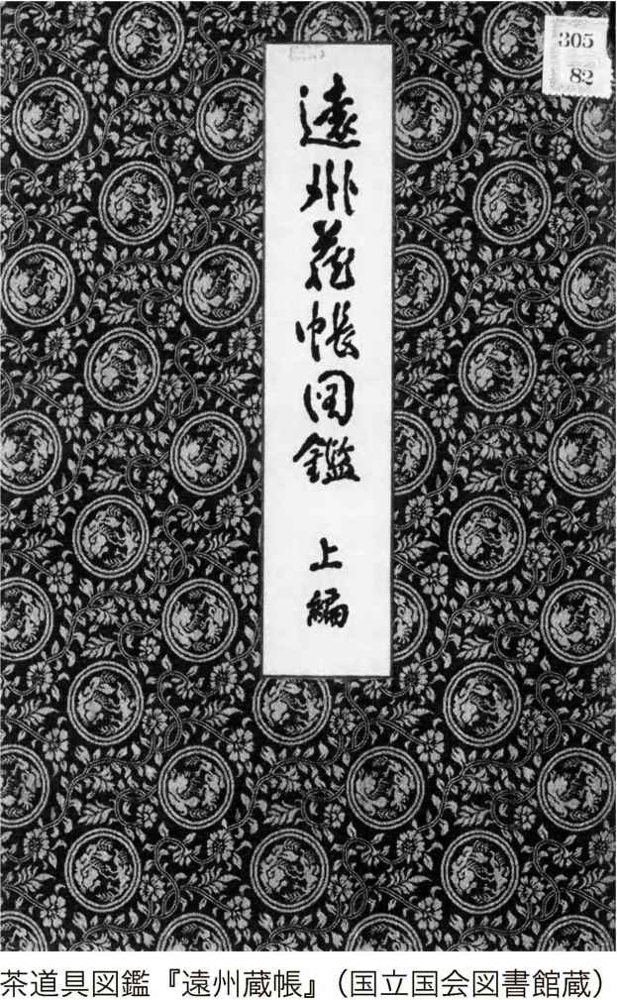
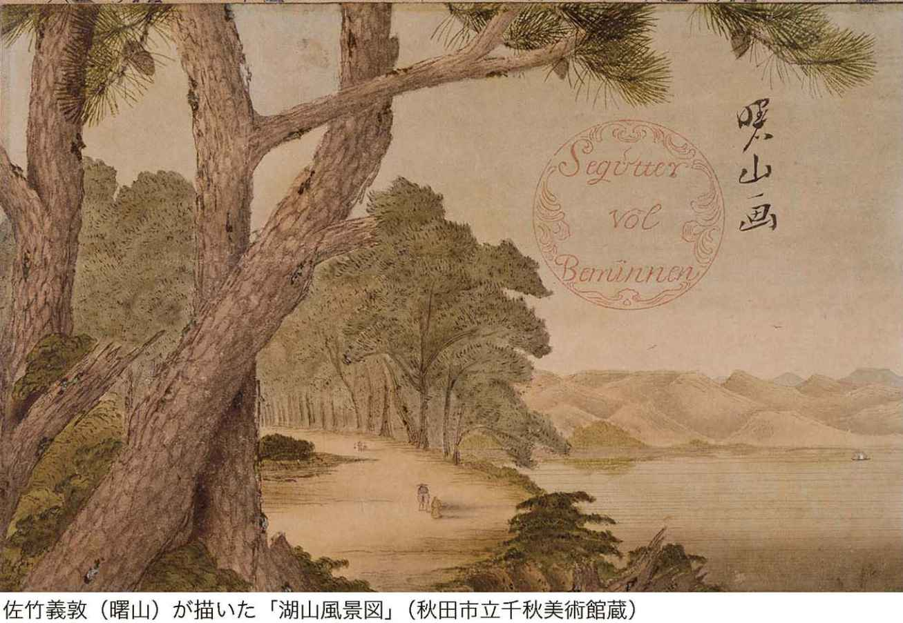

| 江戸大名の好奇心 | |
| 中江克己 | |
| (2014) | |
は し が き
ひと口に江戸大名といってもさまざまである。たとえば、本書でも取り上げた常陸国水戸藩主の徳川光圀は『水戸黄門漫遊記』で有名であり、テレビの時代劇はむろん、小説や漫画にまでなっているので、知らない人は少ないであろう。
たしかに英明な人柄で、徳川将軍を補佐した人物である。時代劇でも「天下の副将軍」と強調されたが、実際には漫遊記に描かれたように、各地を遊歴したわけではない。しかし、光圀の好奇心は歴史に向けられ、『大日本史』の編纂事業へと駆り立てた。
そうかと思えば、元禄十四年（一七〇一）三月十四日、江戸城松の廊下で「遺恨あり」と呼び、高家筆頭の吉良上野介義央を斬りつけた大名もいる。播磨国赤穂藩の藩主浅野内匠頭長矩だが、即日切腹を命じられたので、刃傷におよんだ動機はよくわからない。
一方、浪人となった旧家臣四十七人が吉良上野介を主君の仇として結束し、翌元禄十五年十二月十四日、本所松坂町の吉良邸に討ち入るのだ。この討ち入りは後世、歌舞伎となり、現代に至るまで観客を集めている。
江戸大名にもいろいろな人物がいたのだが、本書では、きわめて独創的な好奇心を発揮した二十七人に焦点を当て、その好奇心の正体に迫ろうとした。
たとえば「算術大名」といわれた有馬頼徸は、筑後国久留米藩主である。彼の好奇心は、少年期から算術に向けられ、専門書を出版するほどの力をつけた。伊勢国長島藩主の増山正賢は、虫好きが高じて昆虫図鑑をまとめたが、収録された昆虫の図はじつにリアルだ。
鳥好きの大名もいる。下野国佐野藩の藩主堀田正敦だが、たんに小鳥を飼って鳴き声を愛でる、という類いではない。鳥の生態を詳細に観察し、学術書をつくってしまったのである。
常陸国古河藩の藩主土井利位は、雪の結晶がどんな形をしているのか、気になってしかたなかった。雪が解け、結晶が崩れる前に観察する。これを根気よくつづけて、世界初の雪の結晶図鑑をつくったのだからたいしたものだ。
世界初といえば、丹波国福知山藩の藩主朽木昌綱は、わが国初の世界地理書を著した。また、出羽国秋田藩の藩主佐竹義敦は、洋風画法を学び、独自に秋田蘭画を生み出した。東北の一角で洋風画が描かれたことはきわめて興味深い。
江戸大名の好奇心は茶の湯、庭園、俳諧、和歌、随筆に向けられるなど多岐にわたっている。大名として、領民たちの生活を心配したり、領内の産業を推進するほか、行政の責任もあり、さらに幕府の役職もこなす必要がある。そのうえで、いわば自由時間を使い、それぞれの立場で好奇心を形にしていったのだから、お見事というしかない。
江戸大名のことといえば、何か遠い時代の話のように思われるが、その好奇心のおもむくところを見ると、現代人の心情と変わりないのではないか。根っこのところに、人生を楽しむ、という姿勢があった、とも思える。
近年、二毛作の人生とか、三毛作の人生とかいわれるようになったが、本書がそのように人生を充実させる手がかりになれば幸いである。
本書は月刊誌『公評』平成二十二年（二〇一〇）八月号から十三回連載したものに大幅な改稿をし、再構成した。執筆に際しては多くの文献を参考にさせていただいたが、この場を借りて、先学の方々に厚くお礼申し上げる。
平成二十六年四月二日
中江克己
目 次
江 戸 大 名 の 好 奇 心 目 次
装幀／藤井国敏
有馬頼徸
駕籠の中でも没頭した「算術大名」
▼筑後国久留米藩主
天明三年（一七八三）死去七十歳
江戸中期、和算は実用として重宝されるようになった。商家での計算をはじめ、天文暦学にも必要なものだった。そうした一方、遊びとしても流行した。知恵くらべというか、他人をおどろかせるために、奇妙な図形の面積を求めたり、複雑な問題を解くことに熱中する人が増えたのである。
和算というのは、日本独自の数学のことだが、江戸時代に目覚ましい発達を見せた。その後、明治時代になって西洋数学が伝来すると、これを洋算といい、日本独自のものを和算と称した。
しかし、当時は、自分の才能を発表する場がない。そこで難問を解いた人は、それを記した絵馬をつくって神社や寺に奉納した。参詣する人に見てもらうためで、これは「算額」と呼ばれた。
殿様の趣味は、さまざまだが、久留米藩（福岡県久留米市）の七代藩主有馬頼徸は、根っからの算術好きだった。参勤交代の駕籠の中でも熱心に算術の問題に取り組んだというから珍しい。そのせいか、「算術大名」といわれるほどだ。
頼徸は、正徳四年（一七一四）久留米城で、六代藩主有馬則維の四男として生まれた。だが、三人の兄たちが夭折。享保十四年（一七二九）十六歳のとき、父が領内で発生した一揆の責任をとって藩主を辞任したため、代わって頼徸が七代藩主となった。
頼徸は少年のころから『塵劫記』の問題を解くことに夢中になっていたが、この『塵劫記』は、吉田光由が寛永四年（一六二七）に刊行した算術の入門書だ。上巻は基本編で、そろばんを使った足し算、引き算、掛け算、割り算の方法を解説。中巻は応用編。下巻は上級編として、平方根や立方根の求め方を記してあった。
基本編には、イラスト入りでねずみ算などが紹介され、寺子屋の教科書にもなっていた。「九九」は、この『塵劫記』によって、庶民に広まった。
頼徸は算術に熱中していたからといって、藩主の仕事を投げ出したわけではない。父の則維が実権を手放さなかったので、頼徸が藩政に口をはさむことができなかったのだ。頼徸は、それをむしろ幸運と思ったかもしれない。ますます算術に没頭した。
元文三年（一七三八）父の則維が没する。頼徸は、二十五歳にして、やっと自由に藩政に取り組み、算術の研究も父の目を気にせず、できるようになったのである。
日本独自の算術として発達
頼徸は、十代のころから幕臣の山路主住から本格的に算術の指南を受けていた。
当時、和算家として有名なのは関孝和で、和算を高度に大成するなど、わが国の数学史上に偉大な足跡を残し、「算聖」と称された。山路は関流の和算を整理したほか、循環小数などに関する独自の研究を行ない、多くの著書を残した。
その山路がたびたび久留米藩の江戸屋敷にやってきて、頼徸に算術を教授してくれたのである。頼徸より十歳年上だし、社会的に立場もちがうのに、二人は気があったというのか、算術のことになると、そうした隔たりを忘れて話し合った。
頼徸は、明和三年（一七六六）、五十三歳のとき、著書『拾璣算法』を出版したが、その序のなかで、つぎのように書いている。
「算術の話になると、たがいに理論の面白さに酔い、夢中になって時の経つのも忘れてしまう」
頼徸は本当に算術が好きで、専門家と算術の話をするのがたまらなかったようだ。
わが国に算術が中国から伝来したのは、飛鳥時代のころとされる。その後、つぎつぎに算術書が輸入され、発達した。とくに中国の「天元術」には大きな影響を受けている。これは「算木」という、木製で小さな角棒の計算用具を使い、問題を解いていく。やがて日本で独自の工夫が加えられ、江戸時代にはわが国独自の算術として発達した。
いくら算術好きとはいえ、藩政に尽力せざるをえないことが起きた。それは享保十七年（一七三二）、西日本にウンカが大発生し、農作物が甚大な被害を受けたことだった。被害は翌年もつづいたが、幕府の記録『徳川実紀』によると、飢饉のため、約百万人の餓死者が出たという。久留米藩でも二万人もの領民が飢え死にしている。
頼徸は、苦しむ領民をなんとか助けたいと思い、米を配ったり、生活資金をあたえたりした。さらに、町角に目安箱を設置したが、これは領民たちの要望に耳を傾け、できるだけ聞き届けたい、と思ったからだった。
有馬家の官位は、それまで侍従どまりであった。しかし、頼徸は法令や故実に詳しく、すぐれていた点が認められ、従四位・左近衛少将に昇進している。ほかに「一代一度の栄誉職」とされる増上寺御火消役を四度も拝した。
生涯で四十数冊の算術書を著す
ところで延享二年（一七四五）、頼徸は三十二歳のとき、初めての算術書『初学天元門』を著す。それ以来、生涯にまとめた算術書は、四十数冊におよぶ。なかでも名著と評判が高いのが、先にもふれた『拾璣算法』（全五巻）だった。
構成は、問題を百五十問あげ、それに解答を示す、というふうになっていた。関孝和をはじめ、建部賢弘、松永良弼ら関流和算家の研究を整理し、まとめた本ともいえるが、随所に頼徸が独自の工夫をほどこし、和算研究を志す人のための入門書の役割を果たした。
頼徸は殿様でありながら、和算の研究家でもあった。たとえば、円周率では関孝和が十二桁まで正確に算出したが、頼徸は三十桁まで算出している。循環小数の計算は、一人で取り組むと二千年以上かかるといわれたが、頼徸は複数の人が分担して計算し、それをあとでつなぎ合わせる、という方法を考案した。これは画期的なものであり、頼徸の和算への情熱、造詣が並みのものでなかったことを物語っている。
庶民のなかにも和算を学ぶ人が増えたが、それとともに江戸市中には「算術指南」の看板を出す和算家も現れた。算術専門の塾である。
久留島喜内も江戸の堺町（中央区日本橋人形町）で算術指南所を開いていた。暦法と和算にすぐれた才能を発揮した中根元圭がある日、久留島の指南所の前を通りかかって看板を見つけると、面会を求めた。
二人は初めての出会いだというのに、まるで古くからの友人のように熱心に算術について論じあった。やがて、久留島は元圭の学識に圧倒され、
「算術指南の看板をはずします」
といった。しかし、元圭は、久留島のすぐれた才知におどろき、こういって懇願したのである。
「何をいうのです。ぜひ指南所をつづけてください」
二人ともすぐれた和算家だった。
頼徸のもとにも多くの和算家が訪れ、算術について時の経つのも忘れて話し合った。和算家たちと算術の話をしているときが、頼徸にとって豊かな気持ちになれる、幸せなひとときだった。
つぎつぎに算術家を育成
頼徸は算術だけでなく、さまざまなことに好奇心を抱いていた。たとえば、火消しにも熱心だった。
江戸三田の久留米藩の上屋敷には、高さ三丈（約九メートル）の火の見櫓をつくってあった。しかし、大名だからといってだれもが勝手につくることができたわけではなく、方角火消に任じられた大名だけが、屋敷に火の見櫓をつくることが許されたのである。
明暦三年（一六五七）、明暦の大火で江戸市中の六割が焼失し、江戸城も多くが灰になった。そこで幕府は十二家の大名に消防の分担を命じたが、目的は江戸城への延焼を防ぐためだった。これを「方角火消」といった。
火の見の三丈櫓は、方角火消の特権といってよいが、久留米藩上屋敷のそれが「江戸一番」と評判を呼んだ。さらに火消しに出動するときは、殿様をはじめ、火消役たちは華やかな火事装束をまとっていたから、その姿は「錦絵のようだった」と伝えられる。
同じような風流暮らしで気があったのか、頼徸は松江藩（島根県松江市）主松平宗衍・新発田藩（新潟県新発田市）主溝口直温とは、親しくつきあう仲だった。そのせいか、世間でも「風流三大名」と話題になっていた。
ところで、頼徸は「まだまだ学んで、算術に精通しなければ」と思っていたらしく、若い和算家を召し抱えた。一人は入江脩教といい、中根元圭の弟子だった。天文学などにも豊かな知識をもっているほか、のちには『一源活法』（全十二巻）という算術の専門書を著した。もう一人は藤田貞資という。明和五年（一七六八）のことで、頼徸は五十五歳、貞資は三十四歳と若い。
貞資はその後、天明元年（一七八一）に『精要算法』を刊行。その序のなかで算術についての考えを示した。それは「自分の才能を自慢するために、問題を無理につくる人もいるが、それはまったく価値がない」というものだった。
頼徸も同じ考えだったから、若い貞資を頼もしく思い、期待していた。そのほか、頼徸は、村井中漸が算術の本を出すときには、序文を書くなど、世話を焼いた。
天明三年（一七八三）、頼徸は七十歳で没した。藩主の座にあること五十四年。巧みに藩政の舵取りをしたうえで、風流も十分に満喫したのだから、うらやむべき殿様であった。
増山正賢
昆虫の写生に熱中
▼伊勢国長島藩主
文政二年（一八一九）死去
六十六歳
毎年六月中旬から七月のお盆前にかけて、江戸市中には虫売りが姿を現した。鈴虫や松虫、コウロギ、カンタン、クツワムシ、キリギリス、カネタタキ、蛍などを売り歩いたのである。江戸の人びとは、そうした虫をペットとして飼っていた。
小林一茶に、つぎの句がある。
「宵々や只八文のきりぎりす」
キリギリスは、八文だったが、いまの通貨では約二百円。これなら長屋暮らしの庶民でも楽しむことができた。
さらに「虫聞き」といって、郊外へ出かけて虫の美しい音色に耳を傾けた。虫聞きの名所は道灌山（荒川区西日暮里四）、飛鳥山（北区王子一）などだった。江戸の人びとは、いまの東京からは想像もつかないほど美しい自然のなかで暮らしていたのである。
殿様だって人間だから虫に興味を抱いても不思議ではない。この殿様は、伊勢国長島藩（三重県桑名市長島町）五代藩主の増山正賢という。「雪斎」の号をもつなど、じつに風流な殿様だった。
しかも、この殿様、虫好きとはいえ、江戸庶民のように美しい音色や蛍の光を楽しんだわけではない。蝶やトンボなどの形、飛ぶ姿に魅せられて、つぎからつぎへと写生をし、画集というか、昆虫図譜をまとめたというのだから、異色な殿様である。
水害から住民を守る
正賢は宝暦四年（一七五四）、江戸の藩邸で生まれた。二十三歳で家督を継ぎ、長島藩主についたが、藩主の仕事を投げ出して昆虫に没頭したわけではない。
とはいえ、正賢が藩主になる以前、長島は水害が多く、むずかしい所だった。
長島城は、古い歴史をもち、戦国時代には一向一揆の拠点になっていたところで、天正二年（一五七四）、織田信長が三万の軍勢をひきいて押し寄せる。門徒たちはよく防戦したものの、結局は敗北した。信長の皆殺し作戦によって、数千人の門徒が殺されたという。
江戸時代には、合戦はなくなったが、水害に悩まされた。元禄十五年（一七〇二）、常陸国下館藩（茨城県下館市）主増山正弥が二万石で長島藩に入封。増山家はそれ以降、幕末まで藩主を継いだ。
正弥の養父正利は、四代将軍家綱の生母お楽の方の弟だった。その縁によって正保四年（一六四七）、大名に取り立てられ、下館藩主となったのである。
もともと伊勢長島という地域は、木曽川、長良川、揖斐川が入り組んでいるため、よく洪水が起きた。周辺の住民たちは、その被害に苦しめられてきたのだ。それだけに、治世の重要な課題は、いかにして領民を暴れ川の水から守るか、ということだった。
その一つとして「輪中」という組織をつくった。いくつかの村落を堤防で囲み、共同して水防に取り組んだのである。しかし、それには限界があった。
幕府はやがて本格的な対策に乗り出す。薩摩藩に命じて、治水工事を担当させたのである。だが苦労をし、せっかく築いた洗堰が決壊するなど工事は危険も多く、なかなか進まない。工事は宝暦四年（一七五四）から翌年にかけてつづき、多くの犠牲を出してようやく完成した。
工事の責任者をつとめた家老の平田靭負は、工事が完成したあと、自刃した。途中で命を落とした仲間たちのあとを追ったのだろうか。悲劇的な治水工事として知られ、歴史的事件となった。
しかし、水害がまったくなくなったわけではない。正賢の父正贇の治世にも水害に襲われ、そのたびに幕府から恩貸金があり、総額六千両に達した。一両十万円として単純換算すると、ざっと六億円である。長島藩の被害は少ないし、小さな藩だから藩財政に投入すると、余裕があるほどだった。
昆虫を精緻に写生
正賢は藩校「文礼館」を創設したり、文化人と交流するなど文化の振興に力を入れた。さらに自らは風流暮らしをしたが、それが可能だったのも恩貸金があったからだ。
もともと勉強好きで本草学に興味を抱いていた。もっとも才能があったのは絵画で、これは中国清代の画家沈南蘋の画風を学んだ。南蘋は、色彩鮮やかで写実的な花鳥画を得意とする。
享保十六年（一七三一）に来日し、長崎に二年間滞在して、日本の花鳥画に大きな影響をあたえた。この画風は「南蘋派」と称し、江戸中期から後期にかけて広く流行した。たとえば、円山応挙、伊藤若冲、渡辺崋山らも影響を受けている。
正賢は、蝶やトンボをさまざまな角度から見事に写生した。こうなると、籠などに入れて描くというよりは、殺して動かなくして、自分が描きたい角度に置き、描くほかない。ほかにカニやカタツムリ、トカゲなどを見事なほど精緻に描いた。
こうして主に昆虫の写生に力をそそぎ、昆虫図譜『虫豸帖』（四巻）にまとめたのである。
写生のために多くの虫を殺したが、正賢はそれらの虫の死骸を「わが友」と呼び、布貼りの小箱に入れて大切に保管していた。正賢の死後、遺命によって菩提寺に虫塚をつくり、虫たちを弔った。その後、虫塚は上野寛永寺に移され、いまも残っている。
正賢の代表作の一つに『遊禽図』と題する、なごやかな絵がある。五羽の鴨が水で遊ぶ。水面には細やかな波が動き、葦の葉は揺れて流れにひたる。鴨は泳いだり、水中に首を突っ込むなど、さまざまな動作が描かれていて、躍動感が伝わってくる。
町絵師とちがって、大名絵師だから高価で良質な顔料を存分に使える、ということがあったかもしれない。それにしても鴨の羽、変化に富む波、岸にそそり立つ岩など、精緻な描写はむろんだが、色彩感覚も見事。専門絵師とくらべても遜色がない、と評価は高い。大名の趣味の域を超えていた。
多くの風流人との交流
正賢は、多くの風流人と交遊し、文化の振興にも尽力した。本草家木村蒹葭堂との交遊は、正賢にも得るところが大きかったようだ。本草というのは、いまでいう博物学のことである。
木村蒹葭堂は大坂の造酒屋で、たいへんな富豪だった。商いに励む一方、学問を好み、本草家としても認められていた。正賢は親しくつきあっていたが、幕府老中松平定信が断行した寛政の改革（一七八七～九三）のあおりを受け、蒹葭堂は没落してしまった。「酒造量を減らすこと」との新令が出ていたのに蒹葭堂は酒造量を減らさず、従来通りに生産したのである。その結果、「法令違反をした」として、財産を没収されたのだ。
それでも二人の友情は変わらなかった。正賢は、行くあてのない蒹葭堂を呼び寄せ、領地内に家を用意して住まわせたのである。蒹葭堂も正賢の好意に甘え、そこに隠棲した。大名と造酒屋。普通ならまったく関係のない立場で、そうした絆が生じるとは思えない。だが、二人のあいだには本草という共通の関心事があり、風流を好む点も似ていた。だからこそ、世間の目から見れば、不思議な友情がつづいたのだろう。
正賢は、ほかに大坂の儒者十時梅厓とも親しく交流している。正賢があるとき、梅厓を江戸の屋敷に招いた。すると、梅厓は歌舞曲を演奏したほか、手品や軽業まで披露。しまいには、酔いの勢いに乗り、二人で書画の合作をしたという。
その後、天明四年（一七八四）、正賢は梅厓を藩の儒官に登用し、翌年には城内に藩校「文礼館」をつくった。二人は主従というより、同じ楽しみを共有する仲間のようだった。
正賢は享和元年（一八〇一）長男の正寧が立派に成長したのを見届けて家督を譲り、隠居した。四十八歳のときのことである。それ以降、正賢は江戸巣鴨の下屋敷に住み、風流の日々を過ごした。没したのは文政二年（一八一九）、六十六歳だった。
大関増業
名水ブームの草分け
▼下野国黒羽藩主
弘化二年（一八四五）死去
六十五歳
江戸時代は、いまとちがって環境破壊や環境汚染が少ないので、おいしい水に恵まれていた。もっとも地域によっては、川が暴れて水害をもたらすことがあって、その対策に苦しんだ。
江戸という町は、臨海地帯や湿地を埋め立てて住宅地を造成したところが多く、飲み水に関しては必ずしもうまい地域ばかりではなかった。
とくに本所（墨田区）や深川（江東区）あたりは、埋立地が多いから水質が悪く、井戸を掘っても飲料水にはならない。そのためこの地域では、神田上水や玉川上水の余り水が水舟で運ばれ、売られていた。
そのほか、「水屋」と呼ばれる行商人がいた。水を入れた桶を天秤棒で担ぎ、売り歩くのである。
しかし、そのような江戸でも名水が湧く井戸があった。日本橋の白木屋（現在のコレド日本橋の場所にあった）といえば、有名な呉服店だが、そこの掘抜き井戸から良質の水が湧き出し、「白木名水」と評判になった。将軍家や諸大名家がわざわざその水を汲み、茶の湯用の水として用いたほどだった。
下野国黒羽藩（栃木県大田原市）主の大関増業も茶の湯をたしなむ。むろん、当時の大名は多くが茶を好んだが、増業がほかの大名とちがうのは、茶の湯に用いる水に関心を寄せたことである。
増業は政務のあいまをぬって諸国から名水を集め、水質分析をするなど、水の研究に打ち込んだ。江戸時代、究極の道楽は学問とされていたようだが、増業の場合、水の研究をするなど、異色の殿様である。まるで科学者そのものではないか、と思える風流人だった。
諸国の名水を集めて研究
増業は茶の湯に熱心だったが、増業の茶は「南方流」といって、千利休の高弟である南方宗啓の流れをくむ。宗啓は、茶の湯の心得などを『南方録伝』（全七巻）としてまとめているが、増業はその写本をつくり、家中にも南方流の茶の湯を広めたほどだった。
茶の湯にとって重要なのは、良質な水である。増業はそう思い、水の研究をはじめる。研究のために、諸国から名水を集めたというから、その苦労が偲ばれる。
具体的には諸国から集めた名水の比重測定をするなど、季節によって水の重さが異なることを明らかにした。実証的な科学者の態度である。この結果を天保八年（一八三七）、増業が五十七歳のとき、『喫茗新語』（全七巻）としてまとめ、出版した。
財政困窮のなか藩主に
では、政治家としての増業はどのようだったのか。
もともとは天明元年（一七八一）、伊予国大洲藩（愛媛県大洲市）主加藤泰の八男として江戸藩邸で生まれている。泰周といい、寛政六年（一七九四）、十三歳のときまで江戸で過ごした。
大洲藩の藩主は代々、武芸だけでなく、学問や文芸を好んだという。泰周もその血筋を引いていた。早くから学問や文芸に才能を見せたという。好奇心というか、向学心が旺盛だったのだろう。
ところが、文化八年（一八一一）三十歳のとき、下野国黒羽藩主大関増陽の養嗣子に迎えられた。増業を名乗ったのは、それからのことである。
黒羽藩では当時、農村が荒廃していて、年貢の徴収も思うようにいかない状況に陥っていた。藩財政は困窮するばかりだから、藩主の増陽は頭を抱える。なんとかして借金だらけの藩財政を立て直したい。そこで増陽が打った手は、実子の増儀がいるのに、わざわざ他家から新しい藩主を迎えることだった。ねらいは、新藩主の持参金である。
持参金の額はわからないが、こうして増業は黒羽藩主となった。いきなりきびしい環境に投げ出され、舵取りを任せられたわけである。さっそく財政再建に取り組まなければならず、のんびりと風流暮らしをする余裕はない。
黒羽藩主になってすぐ、江戸から黒羽の家老、諸役人、徒士などのほか、農民や町民に宛てて、それぞれ親書を出した。全体的に質素倹約を訴え、各自の立場に応じた協力をしてほしい、と呼びかけたのである。さらに、こう諭した。
「人の上に立つ者は、火の中でも飛び込むような覚悟がなければ何事も成功しない」
これは自分自身にいい聞かせたことばかもしれない。
藩の立て直しへ新事業
その後、増業は家中からの借上げを実施する。倹約するだけでは、財政再建が不可能だとわかったからだ。しかし、窮状を打開するためにやむをえないこととはいえ、藩士の立場からすれば、「困ったもの」というしかない。
増業がつぎに実施したのは、新しい事業を興すなど、殖産興業に力を入れることだった。たとえば、漆事業だが、これまでは農民に漆の苗木を育てさせ、採取した漆の実や樹液を藩が買い上げ、業者に売っていた。これでは農民の片手間仕事にとどまり、産業として発展させるのはむずかしかった。
そこで増業は、藩に専門の役人として漆掛を置いた。農民を啓蒙し、「特産品の生産にたずさわっているのだ」という自覚と誇りをもたせるようにしたのである。自覚と誇りがあれば、やる気も出てくる。この結果、生産量が増え、産業としての規模も拡大していった。
さらにタバコや木綿、麻、胡麻などを特産品として育てたり、温泉地の那須湯本では硫黄の採掘事業をはじめた。現金収入を得るために、植林や農産物、鉱物など商品となるものの生産を増やそうとしたわけだ。
農作業改善に才能発揮
増業は文化十四年（一八一七）三十六歳のとき、『創垂可継』（全七十一巻）をまとめている。これは藩政の由来や慣例、制度、法令などを編纂した指導書だった。
そのなかで「農政録」と題して、農作業を改善する技法を詳述した。たとえば、稲や大麦、小麦、大豆、粟、里芋、大根、かぶ、なす、綿、麻など、作物の栽培法について具体的に記している。
さらに気温や雨などが耕作に影響をおよぼし、収穫量に差が出てくることを述べている。農業の基本書といってよい内容になっていた。
水の利用についても、堀や堤など荒地を開墾するときに役立つ技術についても述べている。
増業は技術や考え方を紹介するだけでなく、それを実行に移そうとした。たとえば、試験的に緬羊を飼い、羊毛糸をつくり、ラシャを織り出している。ラシャとは、地の厚い、目のつまった毛織物の一種だが、そのため二人の藩士を長崎に派遣し、緬羊の飼育法や毛織物の織技術を学ばせるなど、用意周到だった。
また、尾張の瀬戸（愛知県瀬戸市）から製陶職人を招き、陶器の生産をはじめたこともある。
増業自身、甲冑の自作に取り組み、その過程で独自の鍍金技術を発明。「大関鍍金」と呼ばれたほどだった。
隠居後も学問分野に成果
藩政改革といっても、その鍵を握るのは人材である。その人材を育てるには時間が必要だが、それを待っているわけにもいかない。そこで増業は、下級藩士のなかからも、実力があって意欲的な人物を適材適所で登用した。
ところが、登用されない上級武士のなかには不満を募らせる者も出てくる。しかも藩財政が改善されないため、家中からの借上げがつづく。この結果、大幅に減俸された重臣たちのなかには藩主を憎む者もいた。
やがて、藩主増業に引退を迫る声も出てくる。こうして黒羽藩は、藩主増業をめぐり、引退派と支持派とに二分して激しく対立するようになった。増業に非があったわけではないが、事態を収拾するため、養父の実子増儀に家督を譲り、隠居した。文政七年（一八二四）、四十三歳のときのことである。
隠居後は、江戸箕輪（荒川区南千住）の下屋敷で、学問をし、著述に没頭した。兵法や武家故実をまとめた大作『止戈枢要』（全三百五十三巻）は、九年の歳月を要したが、完成させたのは、隠居前のことだ。
この「止戈枢要」とは「兵乱をおさめる枢要」といった意味だが、内容は織物や鎧の組紐をつくる器具など、さまざまな分野におよぶ。先に紹介した鍍金技術の発明は、隠居後のことだった。
文政九年（一八二六）、四十五歳のときには『機織彙編』（全五巻）を刊行したが、これは繊維業の技術書で、多数のイラストが入っていてわかりやすい。内容は、一巻に「桑の栽培」「養蚕」「製糸」、二巻には「製織」「染材となる植物」「染色」、三巻と四巻では「織機」、五巻は「組紐」という構成になっていた。とくに五巻は、当時としては唯一の組紐の解説書であり、重宝がられた。
ほかに、三十年の歳月をかけて『日本書紀』の研究に打ち込んでいる。隠居前の文政三年（一八二〇）には『校本日本書紀』（全三十巻）を出版。文政五年には『日本書紀文字錯乱備考』（全三巻）を出版した。これを隠居後、仁孝天皇に献上し、関白から賞詞を受けたほどだった。
増業の隠居暮らしは世俗を超越し、学問に没頭した。旺盛な科学者精神はとどまるところを知らず、弘化二年（一八四五）、六十五歳で病死する直前までつづいた。
堀田正敦
趣味の域を超える鳥の図鑑
▼下野国佐野藩主
天保三年（一八三二）死去
七十五歳
現在、バードウオッチングが趣味という人は多いし、家の中で小鳥を飼っている人も少なくない。江戸時代にも小鳥を飼う人が多く、ブームのようになっていた。
いまも東京などの大都会でさえ、さまざまな鳥が飛んでいるが、江戸の空には、いまの東京では見ることのできない朱鷺や鶴、鸛、鷹なども飛んでいた。鸛の巣は、浅草や上野あたりでも見られたというから、江戸の人びとは豊かな自然を身近に感じながら暮らしていたのである。
しかし、さまざまな鳥を観察し、画工に鳥の絵を描かせて図鑑をまとめるということになると、きわめて珍しい。これをやり遂げたのは、佐野藩（栃木県佐野市）主の堀田正敦である。正敦は、鳥類研究家としても有名だった。
鳥の観察だけでなく、多くの和漢の古典を読んで学ぶ。正敦は、そうした書物から鳥に関わることを引用したりして、鳥類図鑑『堀田禽譜』（全十一冊）をまとめた。さらにオランダ語の注釈をつけたが、これも大きな特徴になっている。
鳥の絵は、まず正敦が絵師にさまざまな鳥を写生させた。羽毛の筋や鱗など細密に描かせたばかりか、漆や雲母などを用い、実物に近づける努力をさせた。正敦は、できるだけ正確な鳥の図譜をまとめたい、と思っていたのだ。
さらに、ほかの大名や学者、狩野派の絵師たちが所蔵している鳥の絵画を模写させてもらい、この絵も収録した。
鳥の絵は、鳥の生息環境によって水禽、原禽、山禽、異邦禽などに分類している。正敦がたんに鳥を美しいだけでなく、よく観察し、分類したわけで、これは趣味とか、風流の域を超えているといっていい。実際、正敦がまとめた『堀田禽譜』は、一種の学術書として高く評価されている。『堀田禽譜』の実物は現在、東京国立博物館に所蔵されているが、平凡社から『江戸鳥類大図鑑』として出版された。ほかに、解説書『観文禽譜』という著書もある。
鳥を飼うと無精が直る
江戸の人びとに人気があったのは鶯だった。
鶯の鳴き声を聞くと、春の到来を思い、心が浮き立つ。それだけに、人びとは鶯を「春鳥」とか、「春告鳥」、あるいは「花見鳥」などと呼び、親しんできた。鶯を好む人が多ければ、絵師もそれを描く。歌川広重も「梅に鶯」を描いている。
鶯は鳴き声を楽しむ鳥だが、そのために、どうすれば美しい声で鳴くのか、研究熱心な人が多かった。やがて「鳴合せ」といって、それぞれ飼っている鶯を持ち寄り、鳴き声の優劣を競う遊びが流行したほどだ。
江戸中期には専門の小鳥屋が現れたし、小鳥の飼育法を紹介した本もいろいろ出版された。宝永七年（一七一〇）に出版された『喚子鳥』には、鶉や鶫、百舌、山雀、鶯、燕、雀などの飼育法を紹介しているから、鳥の好みもさまざまだったことがわかる。
鳥を飼う理由は、単純にかわいいとか、癒されるなどだろう。
しかし、寛政十一年（一七九九）に刊行された『百千鳥』の序には、鳥を飼うことの効用をつぎのように述べている。
「（鳥を飼うと）朝早くから起きて食事がよく進むし、昼間の長い時間でも退屈するひまがない。無益な昼寝を忘れ、おのずから無精の癖が改まり、鳥のさえずりを聞いては詩歌の種をさがし、いさぎよい暮らしぶりに中風の病も避けてしまう」
蝦夷地でも鳥の観察
堀田正敦は宝暦八年（一七五八）、仙台藩（宮城県仙台市）の六代藩主、伊達宗村の八男として生まれた。七代藩主重村の弟にあたる。
藩主宗村は鷹狩りを好んでいたが、正敦も幼少のころから鷹狩りなどを通じ、鳥に親しんでいた。正敦が鳥に興味を抱くようになったのは、そのころの経験が影響しているようだ。
その後、近江国堅田藩（滋賀県大津市）主堀田正富の養子となったが、さらにのちには下野国佐野藩へ転封となった。
一方、幕府のなかでは寛政二年（一七九〇）、三十三歳で若年寄に就任している。寛政の改革（一七八七～九三）では財政を担当した。若年寄の職は四十二年間もつとめ、さまざまな仕事をこなしたが、正敦はそれだけ有能だった。
当時、幕府は『寛政重修諸家譜』の編纂を重要な事業として、推進していた。これは諸大名以下、御目見以上の幕臣の系図、略歴をまとめたもので、千五百三十巻におよぶ膨大な家譜である。
寛政十一年（一七九九）に着手し、文化九年（一八一二）に完成しているから、十三年の歳月が必要だった。正敦は、この編纂事業の総裁をつとめた。いまのようにパソコンがあるわけではなく、すべて手作業で筆で文字を書く。たいへんな根気と労力が欠かせないが、正敦は責任者として手腕をふるった。
また、正敦は仙台藩の危機を救ったことがある。寛政八年（一七九六）、八代藩主斉村のころだが、斉村の夫人が周宗という子を産んだあと、急逝した。ところが、その後、前藩主重村、当主斉村と、つづいて病死したのである。藩主斉村の子周宗はまだ幼いから、藩の舵取りはできない。
そこで、前藩主重村の夫人が、正敦に幼い周宗の補佐を頼み込んできた。正敦が六代藩主宗村の八男だったからである。正敦は「周宗が成人するまで」という条件をつけて、十六年間、仙台藩を支えつづけた。正敦は誠実な人柄で、やることはきちんとしていたため、トラブルは起きなかったという。
こんなこともあった。当時、ロシア船がたびたび蝦夷地に襲来していた。文化四年（一八〇七）四月には、択捉島を襲撃し、五月には礼文島沖で商船を襲ったほか、利尻島に上陸し、岸につないでいた幕府船に火をつけて逃げ去った。
幕府はそれにたいして六月、仙台藩、会津藩に蝦夷地への出兵を命じた。蝦夷地を警備するためだが、仙台藩を補佐していた正敦は、千七百人の藩士をひきいて、蝦夷地へ赴いたのである。
正敦は、このときの見聞をもとに、のちに『蝦夷紀行』を著した。このなかにも、鳥を観察した記述があるから、鳥好きは変わらなかった。
旺盛な好奇心で活動的な隠居暮らし
正敦は幕府若年寄として力を尽くしたが、多忙な政務のあいまに鳥の研究に打ち込んだのは、好奇心が旺盛だったからだろう。しかも、幼少のころから鳥に親しんできたことが、やがて鳥類図鑑をまとめる力を養ってきたのだろう。
正敦は風流に生きたが、決して自分の殻に閉じこもったわけではない。むしろ、さまざまな文化人と交流し、影響しあいながら、さらに好奇心を育てていった。
たとえば、正敦は幕府天文方の高橋至時にオランダ語で書かれた五冊の天文学書を渡し、「この内容を詳しく調べよ」と命じたことがある。
至時は当初、十五歳のときに父の跡を継ぎ、大坂御定番の同心となった。ところが、大の数学好きだったものだから、やがて天文学者麻田剛立に弟子入りし、江戸へ出て、幕府天文方となった。
至時は、正敦から渡されたオランダ語の本を見るなり、すぐ重要な本だと悟った。当時、フランスの有名な天文学者ラランドが書いた『天文学』という本で、のちにオランダのストラベがオランダ語に翻訳したものだった。四冊が本文、一冊は必要な天文表になっていた。至時は、正敦のおかげで、天文学をさらに深く学ぶことができたのである。
さらに正敦は、本草学者の小野蘭山に命じ、漢方医術を教える幕府の医学館で本草学の講義をさせた。著書に『本草綱目啓蒙』があるが、これは中国の代表的な本草書『本草綱目』をもとに、蘭山が日本の本草について講義したものをまとめた書だ。
正敦はまた、蘭医の大槻玄沢を支援したり、『群書類従』編纂に従事した国文学者の屋代弘賢、幕府儒官の林述斎、画家の谷文晁らと親交を結んだ。正敦は、そうしたことを通じて文化の振興に貢献してきた。
風流人といえば隠居後に閑居し、趣味を楽しむ、という印象が強い。しかし、正敦は活動的な隠居暮らしを楽しんだ。江戸時代、最大の道楽は学問だといわれるが、正敦は、天保三年（一八三二）七十五歳で死去するまで道楽をつづけ、風流な暮らしをやめなかった。
土井利位
世界初の雪華図鑑を刊行
▼下総国古河藩主
嘉永元年（一八四八）死去六十歳
雪の結晶は、じつに美しい形をしている。雪の結晶を顕微鏡で観察した人は少ないだろうが、一般的には平板の六方対照形をしていながら、外観はじつにさまざまだ、ということはよく知られている。雪がそのような変化に富んだ美しい形をつくること自体、不思議であり、神秘的だ。
下総国古河藩（茨城県古河市）主の土井利位は、幕府の老中首座をつとめたほどの政治家である。その利位が雪の結晶のとりこになり、多忙な政治家としての政務のあいまをぬって雪の研究をつづけたというのだから、すごいというしかない。
利位は寛政元年（一七八九）、三河国刈谷藩（愛知県刈谷市）主、土井利徳の四男として生まれた。土井家は徳川家康、秀忠、家光の三代将軍に仕え、幕府の実権を握っていた大老土井利勝の後裔という名門である。
もっとも利位は分家に生まれたのだが、文化十年（一八一三）、二十五歳のとき、本家の古河藩主土井利厚に跡継ぎがなかったため、養嗣子に迎えられた。その後、文政五年（一八二二）、養父利厚が没したのを機に家督を継ぐことになった。三十四歳のときのことだった。
新藩主となった利位に老中として近侍したのは、四歳年上の鷹見泉石である。泉石は蘭学者で、学識が広い。あるとき、利位に雪の結晶を観察してみてはどうか、と勧めた。
雪の結晶の美しさは、そのときわからなかった。すぐに解けるものだけに、観察するのはむずかしい。漠然と思ったが、利位は雪の観察に興味が湧いた。
大塩平八郎の乱を鎮圧
ところが、藩主となった翌文政六年（一八二三）、利位は幕府の奏者番となる。それ以降、寺社奉行、大坂城代などを歴任し、多忙になった。
大坂城代だった天保八年（一八三七）二月。大塩平八郎の乱が起き、幕閣たちを震撼させた。利位もおどろいたが、鎮圧の責任者として、なんとか乱を鎮めることができたのである。大塩平八郎は自刃して果てた。
利位は、この功績によって京都所司代に栄進。翌年には、江戸に戻って江戸城西の丸老中となり、天保十年（一八三九）には本丸老中に昇進したのである。
その後、老中首座の水野忠邦が天保の改革を進めたが、やり方が過激すぎたため、天保十四年（一八四三）、失敗に終わった。そこで利位が老中首座についたのだが、五十五歳だった。
しかし、利位も焼失した江戸城本丸御殿の再建問題・諸外国との外交問題がうまくいかず、一年後の弘化元年（一八四四）、病を理由に老中を辞任。水野忠邦がふたたび老中に返り咲き、外交問題に腕をふるった。
利位は時間的な余裕ができたため、弘化二年（一八四五）、やっと領国の古河に帰った。とはいえ、それまで幕府の重役をつとめ、江戸や大坂、京都などに勤務していたから、参勤交代をしたことがない。利位が古河に滞在したのは、このときだけだったという。領内を巡回したり、困窮者や寡婦、老人、孤児などに援助金を配ったりしている。
その後、江戸へ戻ったが、嘉永元年（一八四八）四月には、養嗣子の利亨に家督を譲り、隠居した。じつは病を患い、長いあいだ治療していたのだが、そのかいもなく七月二日、江戸の藩邸で死去した。六十歳だった。
雪の結晶八十六種を描く
時代を少しさかのぼって、利位が雪の研究をはじめたころに話を戻そう。
利位は当初、降りつづく雪を取り、虫眼鏡で見ていた。しかし、そのときにはすでに雪は解け、水滴になっている。これでは雪の結晶を観察できない。利位は家老の泉石に命じ、オランダ製の顕微鏡を長崎から取り寄せた。
顕微鏡を冷たくして雪片を観察すると、なんとか結晶が見えることがある。気の遠くなるような根気の必要な作業だが、利位は冬になると辛抱強くつづけた。こうして何年もかかって研究成果をまとめ、『雪華図説』を刊行したのは、天保三年（一八三二）、四十四歳のときのことであった。
これは美しい雪の結晶八十六種を精細に描き図録としたものだが、雪の結晶図をまとめた本の出版は、世界初のことだった。
利位は雪の観察法について、『雪華図説』のなかでつぎのように記している。
「西洋では、雪を冷やした黒い繻子（絹織物の一種）の上に受け、鏡に照らして観察する。しかし、自分は手から体温が伝わらないように、ピンセットで雪片を取り、あらかじめ冷たくしておいた黒の漆器の上において観察する」
細心の注意を払い、慎重に観察していた様子がうかがえる。
鷹見泉石も『雪華図説』の出版がうれしかったのだろう。蘭学者としての知識を活用し、利位のアドバイザーとして雪の研究に助力したり、手伝ったりしたのだから当然である。同書に「奥書」を寄せ、「主君の研究が今春で二十年になる」と感慨深げに書く。
さらに泉石は、マルチネットの書いた『格致問答』から雪花の図十二枚を転載したことにふれ、「真理は世界共通であることを証明している」と記した。
マルチネットは、オランダの自然科学者であり、『格致問答』は理科の教科書のような本で、長崎の出島を経由して輸入されていた。泉石がその図と利位が記録した結晶図とを比較して「真理は共通」と述べたのは、興味深い。利位の研究は、すでに世界水準に達していたのだ。
それにしても雪国でもないのに、よく雪の観察ができたものだと思う人がいるかもしれない。しかし、当時の江戸はいまと異なり、雪が多かった。
その証拠に、文政十年（一八二七）刊の『江戸名所花暦』のなかにも、隅田川の雪見の絵が載っている。屋形船の置炬燵に足を入れながら岸辺の雪景色を眺め、酒を楽しむ。江戸には、こうした風流な遊びがあったのである。
その後、利位は天保十一年（一八四〇）、五十四歳のときに『続・雪華図説』を刊行した。これは、九十七種の雪の結晶図を収めてあるから、正続合わせて百八十三種になった。
三十年近くの歳月をかけ、根気よく雪を観察しつづけた結果、世界初の見事な雪の図鑑が完成したわけだ。
なお、土井利位が「世界で初の雪の図鑑をつくった人物」として知られるようになったのは、氷雪学の世界的権威、中谷宇吉郎（一九〇〇～六二）が利位の業績を絶賛したことによる。
雪の結晶を文様とした浴衣の流行
江戸時代、鈴木牧之の『北越雪譜』が広く読まれた。これは雪国の風俗や習慣などを記した本で、天保七年（一八三六）から天保十三年（一八四二）にかけて刊行されたが、そのなかに利位が描いた雪の結晶図が二十八種、転載されていた。
これによって利位の雪の結晶が広く知られたし、一方では雪の結晶図が文様として使われるようになったのである。
もともと雪の文様は「雪輪」など、すでに桃山時代の能装束に使われていた。だが、これは雪の結晶図ではなく、円のまわりに、ところどころくぼみを入れたような形だ。抽象的な形で、これを見てすぐに雪の文様とわかる人は少ない。
しかし、江戸後期、利位の雪の結晶図が公刊されたことによって、雪の結晶を意匠化した文様が盛んに使われるようになった。
雪のことを「六花」とか、「六出花」とかいう。これは雪の結晶が六方に枝を出した星形をしているところから、それを花に見たてた異称として使われてきたのである。しかも、花にさまざまな花があるように、雪の結晶も千変万化で興味は尽きない。
江戸後期の浮世絵師歌川国芳が描いた『清月の月』には、さまざまな雪の結晶を文様とした浴衣を着た女が描かれている。なお「清月」とは陰暦八月のことだ。
当時、雪の結晶を文様にしたものは「雪花文」と称され、たいそう流行した。別に「大炊模様」ともいわれたが、これは土井利位の官位が大炊頭だったことによる。死後、このような形で名を残した大名は珍しい。
小堀政一（遠州）
茶道をきわめた達人
▼備中国松山藩主
正保四年（一六四七）死去
六十九歳
備中国松山藩（岡山県高梁市）の藩主小堀政一は、茶の湯にいそしんだ殿様である。小堀遠州の名を知る人が多いかもしれない。遠州流茶道を創め、千利休、古田織部らとともに「三大茶人」と称された。風流に生き、茶道をきわめた達人だ。
政一は天正七年（一五七九）、近江国小堀村（滋賀県長浜市）で生まれている。父は正次といい、浅井家に仕えた地侍であり、母は、浅井家の家老磯野丹波の娘である。
浅井家は天正元年、居城の小谷城（滋賀県長浜市）を、織田信長の命を受けた羽柴秀吉の軍勢に攻められて落城。浅井家は滅亡した。このため、正次は秀吉の弟秀長に仕えるようになる。
その後、政一も秀長の小姓として出仕したが、当時、秀長は大和郡山（奈良県大和郡山市）を領する大名だった。秀長は、信長の死後、兄秀吉の天下取りを支えるため、軍資金や兵糧の調達に尽力した一方、大坂城をはじめ多くの城を築き、さらには城下町の建設に関わってきた。
政一は、そうした秀長の影響を受けながら建築や造園の技術を身につけ、美的感覚を磨いた。ところが、秀長は病を患い、天正十九年（一五九一）一月、五十二歳の生涯を終えたのである。つづいて、翌二月、政一も会ったことのある天下の茶人千利休が切腹して果てた。
この年、政一は十三歳である。秀長の養子秀保に仕えたあと、父の正次とともに秀吉の直臣となり、伏見六地蔵の屋敷に移り住む。これが茶道への目を開かせるきっかけともなった。
政一はすでに幼少期、父の正次から茶の湯の手ほどきを受けていたが、伏見の地で千利休の高弟の古田織部から茶道を学ぶ機会を得たのである。
「天下一の宗匠」古田織部に師事
織部は山城西岡（京都府南部）の大名だが、秀吉に仕えて同朋となり、宗匠として名をあげた。利休の死後は「天下一の宗匠」といわれたほどだった。
織部は伏見にも屋敷をもっていたが、父の正次は織部と親交があり、茶を学んだ。政一も住まいが近いこともあって、織部の伏見屋敷に出かけて茶の教授を受けた。やがて政一は茶道の奥義をきわめ、織部をおどろかせたという。
政一はその後、慶長二年（一五九七）、十九歳のとき、藤堂高虎の養女を妻に迎えた。高虎は築城の名手として知られるが、この縁組によって、政一は高虎と親交を深め、大きな影響を受けた。
政一が結婚した翌慶長三年（一五九八）、秀吉が伏見城で病死。二年後、関ヶ原の戦いが起きたが、六十七歳の織部は家康方につく。慶長八年（一六〇三）、江戸に幕府が開かれると、家康の家臣となった正次、政一父子にも活躍の場があたえられる。しかし、翌年、父の正次は江戸へ出府する途中、藤枝宿（静岡県藤枝市）で病に倒れ、急逝。二十六歳の政一が家督を継ぎ、備中松山藩の藩主となったのである。
さらに政一は、父の仕事も受け継いだ。慶長十一年（一六〇六）には禁中や後陽成院御所の作事をはじめ、江戸城の普譜手伝。慶長十三年（一六〇八）には、駿府城（静岡市）、慶長十七年（一六一二）には名古屋城天守の造営などを手がけた。
現在、江戸城本丸、二の丸、三の丸の跡地は「皇居東御苑」として一般公開されている。
江戸城の庭園は寛永七年（一六三〇）四月、二の丸に築山や池をつくり、茶屋を設けたのがはじまりだという。大御所の秀忠と三代将軍家光は、ここで茶事を催した。
一般公開されている「皇居東御苑」の中に「二の丸庭園」があるが、これはもともと小堀遠州（政一）がつくった庭園だった。
しかし、寛永二十年（一六四三）、二の丸御殿を大改造したとき、庭園は改変された。いまの「二の丸庭園」は「皇居東御苑」として整備するとき、九代将軍家重のころの絵図をもとに庭園を再現したという。ただし、一部に遠州庭園の遺構を取り込んであるというから、往時の様子をうかがうことができる。
その後、元和元年（一六一五）五月、豊臣家は大坂夏の陣で敗戦、豊臣秀頼と母の淀殿が自刃し、滅亡した。
古田織部は二代将軍秀忠の茶道師範をつとめていたが、大坂夏の陣のとき、子の重広が豊臣方に内通したとの嫌疑をかけられて逮捕された。問い詰められたものの、ひとことも弁明せず、元和元年（一六一五）六月、切腹に追い込まれた。遠州は、師の非業の死を知って義憤を覚えたが、どうすることもできなかった。
白い雪の日に一輪の紅梅
小堀遠州は、古田織部の没後、「茶の湯の第一人者」といわれるようになった。
たしかに茶人としてすぐれていたし、大名茶の完成者と評判も高い。だが、藩主の仕事もあるし、作事家としての仕事もつづいていた。それに茶の湯もある。そのどれも手を抜くことができない。勤勉さと誠実さで、そのすべてをやり遂げようとした。
遠州は伏見六地蔵の屋敷で大名の茶会を催したり、将軍に茶を献ずることもある。風流好みだが、気安く楽しむわけにもいかない。むしろ気苦労が多く、ストレスもたまったことだろう。
さらに作事を通して、宮廷文化人と幅広く交遊を重ね、そのなかで茶人としての地位を確立していったのである。大名茶の最高指導者として、後輩の育成にも当たった。
遠州の茶風は「綺麗さび」といわれ、都会的で洗礼された優美さをもつ。利休的な「わび、さび」と、王朝文化の華やかな伝統とを融合させようとしたのだ。
千利休の考え方は、白い雪に覆われた日であれば床の間に花はいらない、とした。雪そのものが美しい花のようなものだから。茶屋の庭で雪を見ることができるのなら、それだけで十分、というのである。わび、さびの極致といえるかもしれない。
ところが、遠州はちがっていた。白い雪の日には、一輪の紅梅を床の間に飾り、やすらぐ雰囲気をつくり出す。これが「綺麗さび」だ、というのである。この美意識のちがいには、時代の移り変わりが反映されていた。
茶道具図鑑『遠州蔵帳』を著す
遠州は茶器をつくったり、鑑定もした。遠州が好んだ色は「鳥の子色」だったというが、これは薄い茶みのある色で、色名は鶏卵の殻の色による。純白ではなく、味のあるオフホワイトだ。
この色自体、あまり自己主張はしないので、どのような色にでも合う。なかなか奥の深い色で、遠州が好んだのも当然と思える。
さらに遠州は、茶道具を選別して『遠州蔵帳』という図鑑にまとめた。これは「中興名物」といわれ、いまでもその茶器の格づけは尊重され、鑑定の目安となっている。ほかに和歌や書などにもすぐれた才能を発揮し、遠州は当代随一の文化人として名をなした。ただの「茶の湯大名」ではおさまらないのだ。
遠州は風流暮らしに没頭して、藩政とか、幕府の仕事を人まかせにしていたわけではない。父正次が死去したあと、父の跡を継いで、備中奉行をつとめたし、その後、河内奉行、近江奉行、伏見奉行などを歴任し、幕府直轄地などの民政に力をふるった。
このような地道な仕事も手抜きすることなく、こつこつとやり遂げたのである。若いころ、豊臣秀長の家臣として、大和郡山城で行政の仕事をしてきた経験が役に立ったのだろう。遠州は正保四年（一六四七）山城の伏見奉行屋敷で没した。多才な風流人、六十九歳の生涯だった。

松平乗邑
茶器図鑑をまとめた風流大名
▼下総国佐倉藩主
延享三年（一七四六）死去
六十一歳
茶の湯を好み、茶道具を集める風流大名は多い。なかでも佐倉藩（千葉県佐倉市）の藩主松平乗邑は異色な大名だった。
十五〜十六歳ごろから茶道具を集めはじめたというが、ただ収集するだけではない。器物の名称や寸法、図など、さまざまなデータを記録しつづけ、なんと茶器図録にまとめたのだ。
むろん、ただの茶器好きではない。八代将軍吉宗の治世を助け、享保の改革の後半を主導したほか、幕府の刑法の原典『公事方御定書』の編纂主任として作業を主導したことで知られる。
乗邑は、若いころから冷静沈着に行動した。元禄十四年（一七〇一）江戸城松の廊下で浅野内匠頭が吉良上野介を斬りつけるという刃傷事件が起きた。
控えていた多くの譜代大名がその騒ぎに動揺して座を立ったのに、乗邑は動じることなく、譜代大名たちをたしなめた。
「われわれ譜代大名がこうして詰めているのは、万一の場合に備えてのこと。すみやかに行動できるよう、座について指示を待つべきではないのか」
当時、乗邑は鳥羽藩（三重県鳥羽市）主で十六歳。その場にいた譜代大名たちは、若いのに似合わない沈着さと器量に感服した、と伝えられる。
乗邑は貞享三年（一六八六）、肥前唐津藩（佐賀県唐津市）の藩主松平乗春の長男として、江戸の藩邸で生まれた。しかし、父は乗邑が五歳のときに病死したため、乗邑は幼いながら藩主になった。その後、将軍吉宗の代になってからは、三十六歳で大坂城代になり、三十八歳で老中に抜擢され、佐倉藩主になるなど、異例の出世をした。乗邑は将軍吉宗の下で老中を二十二年間つとめ、さまざまな面で吉宗を支えたのである。
享保十三年（一七二八）、吉宗は六十五日ぶりに日光社参に出かけたが、その行列は八万人とも十万人ともいわれるほどの大行列となった。乗邑は準備を担当したが、たいへんな苦労をしたようだ。
ほかに、吉宗の子のうち、のちに九代将軍となる家重、「御三卿」の田安家を創設した宗武、同じく一橋家を創設した宗尹たちの婚礼を担当している。このように乗邑は、主に行事や儀礼などの責任者として腕をふるった。
才知と冷静さと行動力
その後、元文二年（一七三七）乗邑は勝手掛老中に任じられ、享保の改革の後半を主導していく。
勝手掛老中というのは、財政再建の施策を推進する責任者である。吉宗が乗邑を抜擢したのは才知のほか、冷静さと行動力を買ってのことだった。名奉行といわれる大岡忠相も、のちに「乗邑の才知には梯子をかけてもおよばない」と、感服していたという。
吉宗は、神尾春央を勘定奉行に任命。乗邑と春央という新体制で改革の後半を続行させようとしたのである。吉宗が見込んだ通り、やがて乗邑と春央は徹底した年貢増収策を打ち出し、大きな成果をあげた。
その陰では農民たちが苦しんでいたのに、そこには目が届かなかったようだ。春央は、むしろ「胡麻の油と百姓は絞れば絞るほど出るものなり」と、冷酷にいい放った。
乗邑や春央は、職務に忠実にしたがっただけで、悪意はなかったかもしれない。しかし、苛酷な年貢を取られていた農民にしてみれば、無慈悲な獄卒に思えた。だから怨む農民は少なくなかった。
ところが、延享二年（一七四五）九月一日、吉宗は家重に将軍の座を譲り、隠居した。その一カ月ほどのちの十月九日、九代将軍となった家重は、突如として勝手掛老中という重職にあった乗邑を罷免した。
この人事は、まだ影響力が残っていた吉宗の差し金ともいわれる。乗邑を罷免することで、世間の不平不満を一掃しようとしたわけだ。乗邑は、すべての責任を押しつけられたことになる。
茶器図録『三冊名物集』
茶道具を好み、気に入ったものがあれば買い集める、というのも風流だが、なにやら老人の趣味という印象が強い。しかし、乗邑は少年のころから熱心に茶道具を集めていた。
茶道具といってもピンからキリまでいろいろだが、乗邑は最初からそのよしあしがわかるわけではなかった。鑑賞眼を養うには、やはりすぐれたものを見るしかない。
いい茶道具は、大名や商人が所蔵している。したがって、名器を見るためには、そうした人びとに頼み込み、なんとかして所蔵している名器を拝見させてもらう、ということになる。乗邑は藩主になると、そう思い、所蔵している大名や商人たちに「なんとか拝見させていただけまいか」と頼んだ。
乗邑は大名といっても六万石だから、さほど威勢がない。だからいくら頼み込んでも、適当にあしらわれるのが落ちだった。
ところが、乗邑が老中になると、相手の態度ががらっと変わった。「拝見したいのだが」と、ちょっと声をかけただけで、「どうぞ、どうぞ」となってしまうのである。
乗邑はやがて、天下の名品を存分に見ることができるようになった。むろん、借りて見るだけである。しかし、乗邑は器物名や借りた年、器に寸法、付属品などを詳細に記録し、図を描いておく。
乗邑が見せてもらった茶道具の名品は、六十家の大名から三百点におよんだ。それだけ老中という立場は、効力を発揮する。乗邑もそれがわかってからは、それを積極的に利用した。
ただこれだけなら茶道具の好きな風流大名ということで終わっていただろう。やがて乗邑は、拝見した名品の図や記録を整理し、茶器図録『三冊名物集』としてまとめたのである。
この図録に収載された茶道具は約三百六十点。もし、大名から借りることができなければ、収載する名器は半分以下になってしまう。老中の威勢はたいしたものだった。
老中ともなると、当然ながら政務で忙しい。のんびりと風流を楽しむ時間は、それほどないのではと思うが、乗邑は二百点もの天下の名品を借り受け、じっくり鑑賞しただけでなく、記録に残したのだからその好奇心というか努力はすごい。
自分で買い集めた茶道具はむろん、わざわざ他人の所有物を借り、なめまわすように茶道具を眺め、自分だけの世界にひたる。それは乗邑にとって、まさに至福の時だったにちがいない。
好きなことをやる時間は、いくら多忙とはいえ、なんとかやりくりして生み出せるものだ、ということを、乗邑は証明してみせたことになる。
しかし、そうした風流を楽しむことは、いつまでもつづかなかった。
乗邑は職務に忠実だったのだが、財政再建のためにと実施した増税策は、農民たちの不満を生み、反発を広げた。先に述べたように、その非難が将軍吉宗に向けられたものだから、吉宗は乗邑に責任を押しつけて見捨てた。
乗邑は、老中を二十二年もつとめ、将軍吉宗を支えてきたのに、あっさり罷免された。衝撃が大きかったのだろうか。乗邑はその翌延享三年（一七四六）四月、失意のうちに死去した。政務に励みながら風流に生きた六十一年だった。
松平治郷
風流暮らしを楽しむ茶の湯大名
▼出雲国松江藩主
文政元年（一八一八）死去
六十八歳
茶の湯をたしなむ殿様は多い。なかでも松江藩（島根県松江市）主松平治郷は茶の湯に明け暮れ、茶人大名として名を馳せた。藩政にも力を尽くしたが、「不昧」と号し、茶道では独自の「石州不昧派」を興したのだから、ただの風流ではなかった。
治郷は宝暦元年（一七五一）、六代藩主松平宗衍の次男として、江戸赤坂（港区赤坂）の藩邸で生まれた。幼名を鶴太郎という。茶人としては、不昧の号で知られている。
生まれつき体は弱かったが、学問好きで、たいへんな秀才だったという。七歳のころから書をはじめている。それに体を鍛えようと思ったか、十三歳からは剣道や弓道に挑戦した。
また武家のあいだでは、「茶の湯は人格形成のうえで欠かせないもの」とされていたから、治郷も幼少のころから茶の湯をはじめた。手ほどきしたのは、家老で石州派の茶人でもある有沢能登守である。家臣たちも、幼い治郷にこういって茶の湯を勧めた。
「激しい気性を直すには、茶の湯に親しむとよい。穏やかになるにちがいありません」
治郷は体が弱かったことが影響して、短気で気性も激しかったという。実際、茶の湯をはじめてみると、治郷の気性はしだいに穏やかになった。その後も、いろいろな茶人に師事し、茶道を深めていった。
「茶道とは知足の道なり」
治郷は明和四年（一七六七）十一月、十七歳で松江藩主につく。茶の湯を本格的にはじめたのは、その翌年からだ。幕府の茶道師範、石州流茶人の伊佐幸琢を師として、熱心に稽古した。
石州流というのは寛永年間（一六二四～四三）、小泉藩（奈良県大和郡山市）主片桐貞昌が創始した茶道の流派だ。貞昌は石見守だったが、石見（島根県西部）の別称を石州と称したので、流派の名称とされた。
石州流の特徴は「わびの茶」といわれたが、貞昌は四代将軍家綱の茶道師範をつとめるほどの腕前だった。
治郷は多趣味な風流人だが、とくに熱心だったのは茶の湯である。石州流茶道と相性がよかったのか、たちまち上達していく。茶道論にもすぐれた才能を発揮し、二十歳のときには、茶道書『贅言』を著している。
茶人のなかには、道具にこだわる人もいたが、治郷はそれを批判し、つぎのように簡潔に自説を述べた。
「道茶とは知足の道なり」
知足とは「足を知る」で、たとえ不満があったとしても不平をいわず、その場に順応することだ。といって、やせがまんすることではない。飾らず、気取らず、欲張らず、あるがままに置かれた状況を楽しむこと、といってよい。
治郷は虚栄心や形にとらわれることを排し、茶道によって「分に安んじて貪らない」境地に立つことをめざした。
若き日の治郷には、茶の湯はたんなる風流にはとどまらない。質素倹約を眼目とする藩政改革にも合致するし、さらにいえば、人間の生きるべき道そのものを教示している、とさえ思えたようだ。
治郷は「茶道簡素、静寂のなかにあってこそ、心を充足させることができる」として、奢侈に走ることを戒めていた。
十七歳の若さで藩主に
治郷は茶の湯に打ち込み、風流暮らしを楽しんだ。その後、治郷は巨額な金を投じ、名器を集めはじめた。それができたのも、藩庫がうるおっていたからである。
しかし、治郷が藩主を継いだ明和四年（一七六七）、藩財政はきびしく、名器を買う余裕などなかった。その少し前、父の宗衍が藩主だったころ、藩財政は破産寸前まで追い込まれていたのだ。
宗衍が藩主だった享保十七年（一七三二）、蝗の大群が発生し、領内の田が襲われた。七割近くの稲が食い荒らされたため、空前の凶作となり、領民たちは飢えに苦しんだ。
このときは、幕府から一万二千両を借り、それで米を買い集め、領民に配ったので、飢えから解放された。しかし、その後も台風や洪水などがくり返し襲ってきたし、江戸赤坂の藩邸を焼失したこともある。
そうした一方、宝暦十年（一七六〇）には、比叡山山門の普請を命じられ、莫大な出費を余儀なくされた。工事が終わってみると、莫大な借金が残って、藩財政は逼迫するばかりだった。江戸では「出羽様（松平宗衍）御滅亡」との噂が流れていた。
宗衍はなんとか打開しようと努力したものの、藩政改革に反対する家老が多く、どうにもならない。そこで宗衍はまだ三十九歳なのに隠居し、十七歳の治郷に藩主を継がせたのである。宗衍は「人心を一新して藩政改革をやり遂げたい」と思っていたのだ。
治郷は若かったので、家老の朝日丹波を後見とし、財政改革に着手した。丹波は手はじめに江戸藩邸の維持費や人件費を減らしたのである。それ以上に大きな出費となっていたのは、幕府要人や諸大名への贈物など江戸での交際費だった。
これらは、藩の年収の半分以上になっていたが、丹波は大鉈をふるった。これを大幅に減らす一方、多すぎる人員の整理を断行したほか、負債も強引な方法で圧縮した。丹波はありとあらゆる方法で、出費を抑え、収入を増やすことを考えたのである。
この結果、藩庫には千両箱が積み上げられるようになった。丹波の財政改革は成功したのだ。
「名物茶器を残らず集める」
治郷は藩財政が豊かになったのを知り、ほっと胸をなでおろした。それとともに茶道具を集めはじめた。かつては、道具にこだわる茶人を批判していたのに、それを忘れたかのような行動である。
とくに晩年は「率先して倹約の範を示す」といいながら、一方では「日本の名物茶器を残らず集める」といって、大金を投じたほどだ。
治郷が自慢する逸品の一つに「油屋肩衝茶入」があるが、これは茶人たちの垂涎の的になっていたものだ。治郷は、これを千五百両を出して手に入れた。「肩衝」というのは、肩のやや角張った形のこと。「油屋肩衝茶入」は中国渡来の古い茶器で、その名の通り、もともとは堺の商人油屋常祐が所有していたのである。
その後、常祐から豊臣秀吉の手に渡り、さらに福島正則、土井利勝などと転々とし、治郷が江戸の材木商から千五百両で買い入れた、というわけである。
治郷は茶入のほか、茶碗、茶杓、茶釜、茶壺、水差、花入、香炉、掛軸など五百八十点の名品を集めたという。そのため、わが国の代表的な名器収集家といわれるほどで、どれだけ大金を注ぎ込んだかわからない。
しかし、治郷はたんなる収集家ではない。天明七年（一七八七）、三十七歳のときには『古今名物類聚』（全十八巻）を刊行したが、これは茶道史上の好資料として、いまも高く評価されている。道楽に見える名器の収集と研究は、たいへんな成果をもたらしたわけだ。
文化三年（一八〇六）、治郷は五十六歳で隠居。江戸近郊の大崎（品川区大崎）に二万坪（約六万六千平方メートル）の広大な下屋敷があったが、治郷はそこに東御殿を建て、隠居暮らしをはじめた。正室のためには、別に西御殿を用意した。
丘の上から品川の海を望むことができたという。ここに「大崎名園」を造営したが、この中に趣向をこらした茶室が十二、買い集めた茶道具を収める蔵が七棟も建てられた。
茶室のなかで、もっとも大切にしたのは「独楽庵」という茶室だが、これは千利休が宇治田原に建てた茶室を移築したものとされる。そのため、茶室全体を包み込む、防火用の鹿革の巨大な袋を用意してあったという。
治郷は文政元年（一八一八）、その「大崎名園」で、六十八歳の風流な生涯を終えた。
徳川治宝
茶器を焼く窯を築く
▼紀伊国紀州藩主
嘉永五年（一八五二）死去
八十二歳
紀州藩（和歌山市）の十代藩主徳川治宝といえば、茶の湯をきわめた殿様として有名だった。茶の湯は殿様の教養のようなものだから、だれでも嗜んでいたが、治宝は特別だった。
すぐれた腕前をもち、表千家了々斎から皆伝を授かったほどだ。文政五年（一八二二）、治宝が五十二歳のとき、了々斎がわざわざ治宝を自邸に招き、茶事を催している。招かれたのを機に、治宝は表千家の表門を造営したが、これは瓦葺きの重層門で、漆喰の壁に虫籠窓（格子を虫籠のように細かくした窓）をつけた武家構えの門だった。
茶の湯の家なのに、武家構えの表門というのも不思議である。それは、治宝が表千家の皆伝を授かっているし、藩をあげて建造、寄進したからだった。治宝と表千家との関わりは、それほど深かったが、了々斎の没後、このような逸話が残っている。
了々斎の跡を継いだのは、吸江斎である。まだ十代半ばだったので皆伝をもらっていなかったが、のちに治宝が吸江斎に皆伝を授けたのだという。治宝が吸江斎の師となった格好だった。
茶の湯好みの大名は多いし、自ら茶事を催したり、茶器の収集に熱をあげた大名も珍しくない。しかし、治宝のように皆伝を授けた大名は、ほかにいない。
茶器づくりのため庭園に窯を築く
治宝は、茶器にも強い関心を抱いていた。国元の和歌山に別邸「西浜御殿」を建て、その庭園の一隅に茶器を焼く窯を築いたほどだった。
当時、城内や邸内で茶器を焼かせた殿様がいたが、これらの陶器を一般的に「御庭焼」と称した。紀州徳川家の場合は「偕楽園焼」と称したが、これは庭園の名をとって命名された。水戸徳川家には「後楽園焼」があった。
治宝は茶器づくりにも熱を入れていた。了々斎や吸江斎らの著名な茶人をはじめ、京都の永楽保全らの陶工を招き、偕楽園焼の指導を求めた。治宝がめざしたのは「交趾写し」である。
交趾は、現在のベトナム北部トンキン・ハノイ地方の古称だが、貿易船が交趾から運んできた陶器を、わが国では「交趾焼」と称した。しかし、実際には交趾で焼いたものではなく、中国南部の広東や福建などで焼かれた三彩だった。黄、緑、紫、白など多彩な釉薬がかけられた美しい陶器で、とくに茶道具として珍重されていた。
治宝もこれを好み、手本にした「交趾写し」を焼かせたのである。風流な殿様だけに、茶器もほかとはちがう美しさと魅力のあるものを求めた。
治宝は明和八年（一七七一）、紀州藩八代藩主重倫の次男として、江戸の麴町屋敷で生まれた。その後、七歳のとき、九代藩主治貞の養子となり、十七歳で十代将軍家治の養女種姫（田安宗武の娘）を正室としている。
寛政元年（一七八九）、治宝は十九歳のとき、治貞の死去にともない十代藩主となった。それ以降、治宝の治世は三十四年間におよぶ。
治宝は、積極的に藩政に取り組んだが、同時に素朴だった城郭や城下町を、華やかで活気のあるものへと改造した。治宝の風流好みが反映されたわけである。
かつての城下の武家屋敷は、草門、土塀、玉垣をめぐらせた質実簡素なつくりだった。治宝は、それを「御三家の城下としてふさわしくない」として、海鼠壁、長屋門につくりかえさせた。
この結果、和歌山の城下は、江戸の大名屋敷が並ぶ大名小路をしのばせる派手な雰囲気が生まれた。
城下町も職名による町が整備された。魚町、大工町、桶屋町、米屋町、船大工町、鍛冶屋町、旅籠町、八百屋町などである。多くの商人や職人が暮らしていたが、活気が出てきたせいか、人出で賑わうようになった。
治宝は茶の湯を楽しみ、風流を好んだが、将来を見通して教育にも力を入れた。寛政三年（一七九一）には、八歳以上、三十歳以下の藩士に藩学への就学を義務づけ、聖廟を建てた。
さらに翌寛政四年（一七九二）、城下に藩校の学習館、医学館、国学所を設立。藩領の伊勢松坂には松坂郷校を、江戸の藩邸には明教館を設けたのである。
寛政四年十二月には、国学者の本居宣長を召し出し、五人扶持をあたえた。宣長は伊勢松坂に住んでいたが、和歌山に通い、国学の講義をした。宣長の養子大平は和歌山に移り住み、千人を超す門下生を育てたという。
『紀伊國名所図会』など編纂
治宝の風流好みを反映させた藩政には、莫大な費用を要した。そのため、領民からの年貢を引き上げるなどしたため、領民たちの不満が募り、ついに爆発。文政六年（一八二三）には、紀ノ川流域を中心に年貢減免などを求めて、大規模な百姓一揆が起きた。
原因は旱魃による水不足や藩が商品流通を独占したことなどだが、一揆は領内各地に広がり、総勢十数万人が和歌山城下に押し寄せたという。藩にとっては大きな衝撃だったが、最終的には交渉によって、藩が農民側の要求を受け入れ、一揆は終息した。

治宝は翌文化七年（一八二四）、五十四歳で隠居したが、これは一揆の責任をとったため、といわれている。治宝に男子がなかったため、女婿の斉順（十一代将軍家斉の七男）が十一代藩主についた。
治宝は西浜御殿を隠居所としたが、隠居とは名ばかりで、その後も藩主の斉順、斉彊（十二代藩主・十一代将軍家斉の二十一男）、慶福（十三代藩主・斉順の嫡男、のちの十四代将軍・家茂）の三代にわたって実権を握りつづけたのである。
そうした一方、治宝は領内の歴史や地理を調べさせた。これは天保十年（一八三九）、『紀伊続風土記』（百九十三巻）として完成。ほかに『紀伊國名所図会』をまとめさせた。
嘉永五年（一八五二）十一月二十五日、治宝は病で床に臥したが、病状はしだいに悪化するばかりだった。御典医が診察したものの、治療する術がなく、ただ脈をとるしかなかったという。十二月七日に息を引き取ったが、八十二歳と長寿だった。

柳沢吉保
六義園をつくった殿様
▼武蔵国川越藩主
正徳四年（一七一四）死去
五十七歳
五代将軍綱吉の側用人として幕政を担った柳沢吉保は、なかなかの野心家であり、やり手だという印象が強い。それに時代劇ドラマなどでは、決まって策謀をめぐらす悪人として描かれる。ところが、吉保もまぎれもなく風流人だった。
吉保は学問好きだったし、六人いた側室のなかには『松蔭日記』を書き残した才媛もいた。そして、いまもなお美しい姿を見せている都立庭園「六義園」（文京区本駒込六、国特別名勝）は、柳沢吉保が造成したものだ。
元禄八年（一六九五）、吉保が別邸地として豊島郡染井村に四万五千坪（約十五万平方メートル）を賜り、七年後の元禄十五年（一七〇二）別邸内に庭園を完成させた。
武蔵野の平坦な土地だったが、掘った池に千川上水から水を引く。掘った土で築山をつくる。築山の上からは、美しい園内を一目で見渡すことができた。四季ごとに彩りが変化して、異なる魅力をつくり出す。見事な回遊式の築山泉水庭園だから、歩き進むと、景観が移り変わり、飽きることがない。
いまも六義園を好む人は多いが、江戸時代から小石川後楽園（文京区後楽一、国特別史跡）とともに、江戸の二大庭園の一つとされていた。
しかし、吉保が六義園を造成したとはいえ、自分でアイデアを出したものの、すべてを指図したわけではない。工事中、現場に足を運ぶこともなかった。
側室の町子も『松蔭日記』に「（吉保は）いとまがなくて、訪れなかった」と書いている。
現場を見に行かなかったが、吉保は自分が造ろうとしたのだから、庭園がどのような姿を現しはじめたのか、工事の進捗状況が気にならないはずはない。そこで吉保は、家臣を工事現場に見に行かせた。
家臣は庭園がどの程度までできているのか、じっくり観察して絵を描く。帰ってきて、吉保にその絵を見せたのである。吉保は仕事のあいまに、その絵をよく眺めた。そして、何か気づくと家臣に指示を出し、それを現場の責任者に伝えさせた。
綱吉の生母桂昌院が訪問
吉保は完成前に庭園を訪ねることはなかった。だが、『松蔭日記』によると、完成の少し前、元禄十四年（一七〇一）四月二十五日、将軍綱吉の生母桂昌院が六義園を訪れ、園内を見てまわった。
そのときは、まだ「六義園」の名はなく、「駒込の山里」などと呼ばれていたらしい。
将軍生母の訪問とあれば、柳沢家でも準備をおろそかにできない。桂昌院を迎える座敷には、立派な屏風を配置したり、めでたい画題の掛軸をかけるなど、気配りもたいへんだったようだ。
桂昌院は当日、輿に乗り、多くの家臣をしたがえたほか、僧や医師まで同行させていた。むろん、多くの女中たちも随行しており、百人を超す行列だった。
庭園の中には萱葺き屋根の家、茶室、民家などを連ねて建て、街道筋のひなびた山里を再現してあった。桂昌院一行が歩いていると、思いがけなく村人にも出会い、本当の村里に入り込んだような気分になったというが、柳沢家の家来たちが村人に扮していたのである。
さらに、張り子の玩具を商う店、頰紅を並べた紅屋、扇などを売る小問物屋、草紙屋、酒屋などもつくられていた。桂昌院一行は景勝を眺めながら庭を歩き、さまざまな店では買い物を楽しんだ。
吉保は、こうした仕掛けをつくったのである。
俸禄三百倍と驚異的な出世
吉保は、万治元年（一六五八）、江戸市ヶ谷で生まれた。父安忠は当初、駿河大納言徳川忠長（三代将軍家光の弟）に仕えていたが、忠長が自刃したため、その後、上野館林藩（群馬県館林市）の藩主綱吉（のち五代将軍）に仕えた。
母は、安忠の妻に仕えていた女中の佐瀬津那子だが、安忠が手をつけて側室とした。ところが、安忠の妻は激しい焼きもち焼きだったので居づらくなり、吉保を産んだあと、実家に帰ったといわれる。
吉保は寛文四年（一六六四）、七歳のとき、藩主綱吉に謁見。九歳のときには、学問好きの綱吉が行なった「大学」の講義を受け、綱吉の学問上の弟子第一号となった。
延宝三年（一六七五）、父の隠居にともない、十八歳で家督を継ぎ、綱吉の小姓として仕えた。その後、延宝八年（一六八〇）、綱吉は五代将軍になったが、これを機に吉保は幕府の小納戸になり、それ以降、吉保は昇進と加増に恵まれた。
元禄元年（一六八八）には、三十一歳で側用人に抜擢され、将軍綱吉の側近として活躍する。このとき、一万二千石の大名となった。七年後には、川越藩（埼玉県川越市）の藩主となり、老中格に昇進。元禄十一年（一六九八）には、ついに老中首座、大老格となったが、さらに甲府十五万石の藩主にまでなった。
吉保の俸禄は、三十年間でなんと三百倍に増えている。驚異的な出世だった。羨望の的になり、嫉妬されたが、それも無理はなかったのである。
旺盛な野望に「吉保奸臣」論も
そうした一方、吉保は延宝四年（一六七六）。十九歳のとき、遠縁にあたる十七歳の定子を正室として迎えている。夫婦仲はよかったというが、子はできなかった。
定子はなかなかの賢夫人で、荻生徂徠から経書（儒学の経典）の講義を受けたり、北村季吟に和歌を学んだ、とも伝えられる。
そのほか、染子、町子、繁子、柳子など六人の側室がいたという。そのうち染子は、吉保の長男吉里、次男長暢、三男安基を産んでいる。もともと染子は、吉保の側室になる前、江戸城大奥で桂昌院（将軍綱吉の生母）付の女中だった。
吉里は貞享四年（一六八七）に生まれたが、一説によると、染子は大奥づとめをしているときに身ごもったという。父親は将軍綱吉だが、綱吉の胤を宿したまま吉保の側室となり吉里を出産したというのである。これをもとに、講談や時代劇などでは、吉里を将軍につけようと企んだり、百万石を賜るとのお墨付きを手に入れようとする騒動が取り上げられた。しかし、これらはあくまでもつくり話である。
吉保が策謀をめぐらす悪人として描かれたのも、史実にもとづくものではない。江戸時代、「実録物」といって、事実に空想をまぜて面白くつくりかえた小説が数多く出版され、よく読まれた。
五百三十石の下級武士から十五万石の大名へと出世した柳沢吉保は、そのモデルとして江戸庶民の興味を引きつけたのだろう。吉保をモデルに『日光邯鄲夢枕』や『護国女太平記』などの実録物が出版された。吉保は、そのなかで天下取りの野望を抱き、将軍綱吉に美女をすすめて籠絡していく。
吉里御落胤説もその一つだ。こうした物語によって「吉保は奸臣」というイメージがつくられていったのである。
六義園で晩年、風流暮らし
『松蔭日記』を書いた町子は、正親町大納言実豊の娘で、容姿が美しく、才女と評判だった。十六歳のとき、大奥年寄右衛門左の部屋子となり、右衛門左の取持ちで吉保の側室となった。
町子の『松蔭日記』は、吉保の栄華や暮らしぶりについて記録したものだが、それによると、吉保が初めて六義園を訪れ、ぶらぶら歩いたのは、庭園が完成した元禄十五年（一七〇二）十月二十一日のことだった。「六義園」の名称は、吉保がこのときにつけたという。
六義とは、中国の詩の六種の形容のことだが、吉保はそれになぞらえ、庭園の中に和歌の世界を表現しようとした。たとえば、紀伊の和歌の浦（和歌山市南部の湾岸）といった景勝地をはじめ、和歌に詠まれた名勝の景観にあてはめ、八十八カ所に名をつけた。池の岸辺に「出汐湊」とか、近くの丘に「夕日の岡」などと名づけていったのである。
吉保は六義園の美しい景観を絵に描かせ、霊元上皇に奉呈した。その後、上皇からは、六義園の「十二境八景」を選び、公家たちがそれぞれの景にちなんで詠んだ和歌が贈られた。吉保にとって、これはたいへん名誉なことだった。
上皇から賜った和歌は白絹に書かれ、巻物になっていた。幕府の公式記録『徳川実紀』によると、吉保はこれを将軍綱吉に見せるため、六義園の絵と一緒に五巻の巻物にした。綱吉はたいそう気に入り、所望したので、献上したという。
このように将軍のそば近くで権勢をふるっていた吉保だが、宝永六年（一七〇九）、家宣が六代将軍につくと、失脚した。それでも甲府十五万石は、子の吉里が相続することができた。吉保は別邸の六義園に隠居し、庭の景観を楽しみながら風流な余生を過ごした。正徳四年（一七一四）に没したが、五十七歳だった。
松平定信
広大な庭のぶらぶら歩き
▼陸奥国白河藩
文政十二年（一八二九）死去
七十二歳
老中首座をつとめた白河藩（福島県白河市）主、松平定信の趣味は、ぶらぶら歩くことだった。
当時、武士の外出は羽織、袴をつけ、腰には大小を差す、というのがしきたりである。格別の用事もないのに、市中をぶらぶら歩くのは「お忍び」といい、あまり歓迎されることではなかった。武士は気ままに散歩することができなかったのである。
では、定信はどこを歩いたのか。それは江戸築地（中央区築地）にあった白河藩下屋敷の広大な敷地内につくった庭園の中である。「浴恩園」の名で知られたが、浴恩とは「将軍の恩に浴する」という意味だという。
定信は五十五歳で隠居すると、この下屋敷に住み、四季それぞれに異なる美しさを見せる壮大な「浴恩園」を眺め、悠々自適の日々を過ごした。
定信は『修行録』という著書を残した。これは自叙伝のようなものだが、そこには規則正しい日々の暮らしが記録されている。
朝は六つ半（午前七時）に起き、夜は五つ半（午後九時）に寝るのが常だった。これは若いころからの習慣で、隠居したのちも変わらない。たまに友人や知人を招き、酒宴を催すこともある。だが、そんなときでも酒は酉の半ば（午後七時）にはやめたし、戌の刻（午後八時）には客を帰すようにした。
そして、つぎのように書く。
「老いの寝覚めの習いか、四十路のころから寅の半ば（午前五時）には目が覚めた。しかし、人を起こさず、夜が明けてから炭熾しなどをし、卯の半ば（午前七時）には起き出した。昼寝はしないし、炬燵に足を伸ばしてあたることも、昔からしたことがない。ただ炬燵をうしろにして、前に机を置き、ものを書くばかりである」
定信は隠居の身だから、ぶらぶら歩いても咎めだてをする者はいないはずだった。とはいえ、もとは大名だし、老中首座をつとめただけに、江戸市中を自由に歩くのはむずかしい、と思ったのだろう。そこで定信は庭を歩いた。
庭といっても、敷地は一万七千坪（約五万六千平方メートル）という広大な庭だ。竹林や山や池などがあるし、この庭園から江戸湾の海を望むこともできる。毎日、ここを歩いても飽きることはない。
「夏のころは、髪の手入れをしてから庭を歩き、帰ってから食事をした。涼しいころには、朝食をすませて庭を歩き、昼ごろに二度歩き、夕方にまた歩く。夏の日でも、日が傾くころに一度、日暮れ前にもう一度歩いた。そのほかの季節でも、昼から日が暮れるまで、四度も五度も歩くのが常だった」
広大な庭を一日に四度も五度も歩きまわった、というのだから、相当な散歩好きだった。
定信が散歩を楽しんだ庭園は、残念ながら存在しない。その跡に現在あるのは築地の魚市場、東京都中央卸売市場である。
健康で頭脳明晰な若者
定信は宝暦八年（一七五八）、「御三卿」の筆頭田安宗武（八代将軍吉宗の次男）の三男として生まれた。御三卿とは徳川将軍家の支族で、田安家をはじめ、一橋家、清水家を指す。尾張、紀州、水戸の「御三家」につぐ家柄であった。
定信には二人の兄がいたが、長兄の治察は明和八年（一七七一）、田安家二代当主となったものの、凡庸な人物だったし、生まれつき病弱だった。
それにくらべると、末弟の定信は健康だし、頭脳明晰とあって、前途を嘱望されていた。定信自身も、「兄治察にもしものことがあれば、跡を継ごう」と、心を決めていたらしい。ところが、老中田沼意次らは、すぐれた才能をもつ定信を警戒し、養子へ出す企みを進めていたのである。
やがて安永三年（一七七四）、定信は十七歳のとき、陸奥白河藩主松平定邦の養子となり、定邦の長女を正室とした。その後、天明三年（一七八三）、二十六歳で藩主となったが、あいにく、この年、大凶作となり、壊滅的な打撃を受けた。
それにたいして定信は、徹底して倹約策を進めた。さらに各地に特使を派遣して米を確保し、飢饉を乗り切る。領民をよく守ったことで、定信の評判は高まった。そればかりか、農業技術を向上させたり、楮や漆、桑などの栽培を進めて、藩政の立て直しに成功したのである。
当時の政治状況は、十一代将軍家斉が天明七年（一七八七）、十五歳で将軍に就任したばかりで、不安定だった。新政権を安定させるには、失脚した田沼意次の影響力を払拭しなければならない。
そこで、将軍家斉を支えていた一橋治斉は「御三家」とともに、田沼の影響力を取り除くために、定信を幕閣に入れようと画策したのである。しかし、残っていた田沼派の抵抗が強いうえに大奥も反対していたために、定信の老中就任は実現しなかった。
ところが、天明七年には、江戸で打ちこわしが続発。政治責任を追及されて、御側御用取次の本郷泰行らが解任され、幕府がゆれ動く。こうして定信は三十歳で老中首座に就任したのである。
倹約政策に庶民は悲鳴
老中首座となった定信は、倹約政策を中心に寛政の改革に着手した。つづいて寛政元年（一七八九）には「棄捐令」を出す。「借金のすべてを棒引きにする」というのだから、借金で苦しむ旗本や御家人は大喜びだった。
それとは逆に、金を貸している札差は苦しむ。あっというまに巨額の債権を失い、商人はなす術もなく混乱した。商人にとって、債券は財産そのものなのに、それを取り上げられたのだから混乱したのも無理はない。
定信は、さらにきびしい出版取締令を出すなど、思想統制をはじめた。やがて景気が悪くなり、市中は火の消えたようになった。庶民の生活は苦しくなる。つぎのような落首が詠まれたほどだ。
「白河の清きに魚のすみかねて もとの濁りの田沼こいしき」
いうまでもなく「白河」は、定信の領地である。定信の改革がきびしく、世の中があまりにも窮屈になった。庶民は「これなら田沼のころのほうがましだ」と、思うようになった。
定信は将軍家斉の反感を買い、寛政五年（一七九三）、老中首座と将軍家斉の補佐役とを解任された。
ただし、定信は辞職と同じ日、左近衛権少将に昇進し、江戸城中では老中と同格の待遇が保障された。また、白河藩の藩政改革を進め、文化九年（一八一二）四月、家督を嫡男の定永に譲って隠居した。
築地に「浴恩園」をつくる
定信が江戸築地に約二万坪の屋敷地を賜ったのは、寛政四年（一七九二）、三十五歳のときのことである。そのうち約三千坪に屋敷をつくり、残り約一万七千坪を庭園とした。
造園工事は急ピッチで進められ、二年ほどで完成したのではないか、といわれている。もっとも、この土地には寛永年間（一六二四～四三）ごろ、老中稲葉正勝の庭園があったとか、その後、「御三卿」の一つ、一橋家が下屋敷にしていたというから、もともと庭園そのものはあったという。
松平定信は、それを造成し直したわけである。浴恩園は存在しないが、「浴恩園全図」（国会図書館所蔵）と称する絵図が残っている。
それを見ると、中央に大きな池があり、岸辺にはさまざまな樹木が植えられ、広びろとした自然を感じさせる。しかも、江戸湾に面した敷地に造られたので、池には海水を取り入れた。浴恩園は「潮入りの庭」だった。
池にはいくつかの島があり、それを橋で結んでいる。小さな島には松が植えられ、池には船が浮かんでいた。池の中央部には半島が両岸から突き出し、橋でつながっているが、船はその橋の下を往来するのだろう。
絵の右下、池の手前には屋敷が描かれているが、おそらく隠居後の定信が過ごした住まいである。素朴な門の左右に、薄板を網代に編んだ塀が連なっている。門をくぐって先へ進むと、池までのあいだは広場だ。さまざまな木々があり、台の上には珍しい盆栽が並ぶ。
池の岸辺から対岸がよく見える。松もあれば、桜もあって、花の季節には見事な彩りを見せたにちがいない。広場に接して屋敷が建っているから、定信自身、心なごむ風景を楽しんだのはむろん、招かれた客たちも驚嘆し、満喫したにちがいない。
広場で目につくのは「露台」で、上面に毛氈を敷いてある。西洋のバルコニーは建物の外に張り出した、手すりつきの台を指す。江戸の露台は建物から離れて建っている。屋根のない高い台になっていて、落下防止の手すりをめぐらせてあった。階段がついているから最上部へのぼると、庭園を見渡すことができた。
当時は、いまのような高い建物はないので、高いところから見下ろしたり、遠くまで見渡すという習慣はない。定信もその露台にのぼり、遠くの景色を楽しんだにちがいない。露台は、江戸の楽しい展望台だった。
岸には船着場があるので、ここから船に乗り、池をめぐって船上から岸辺の美しい風景を楽しむこともできる。夏になると、定信も船遊びに興じたことだろう。
定信は、このようにさまざまに楽しめる庭園工事を指揮した。こうしてみると、謹厳実直といった印象のある定信だが、実際には風流を楽しむ人物だった。
生涯で二百点の著作
父宗武は、荷田在満や賀茂真淵を招き、古典を学んだほどの風流人で、歌集『天降言』などの著書がある。
定信は、そうした父の才能を受け継いだのだろう。すでに十二歳で、自戒書『自教鑑』を書いたほどだ。その後も、旺盛な執筆活動をつづけ、『宇下人言』『国本論』『花月草紙』など、生涯で二百点の著作を残した。
文政十二年（一八二九）、七十二歳で生涯の幕を閉じたが、気ままに過ごした隠居生活は十七年。晩年は下屋敷に住み、四季それぞれに異なる美しさを見せる庭園を、気ままに散歩した。政界のあわただしさから離れて、のんびりと風流を楽しんでいた。
徳川宗春
粋を重んじた大名の庭園
▼尾張国尾張藩主
明和元年（一七六四）死去
六十九歳
紀州藩（和歌山市）出身の八代将軍吉宗は、倹約政策を中心とした享保の改革を進めていたが、尾張藩（名古屋市）の七代藩主徳川宗春は幕府の政策とは逆の消費を拡大し、経済を活性化する政策をとった。このため、吉宗の怒りを買い、隠居させられてしまった。
しかし、宗春は奇抜なことを好む風流な殿様だった。参勤交代の行列はむろん、日常の行動も突拍子なく、平然と常識破りをしたのである。
まず、その姿かたちである。殿様のお国入りとあれば、立派な駕籠に乗り、威儀をただした供の行列がその前後に連なる、というのが普通だった。
ところが、宗春は馬に乗った。しかも、衣服は全身黒ずくめで、萌黄色の頭巾をつけ、羽根を立てた鼈甲製の唐人笠をかぶっている。並みの大名なら、絶対にしない身なりだった。
享保十六年（一七三一）四月十二日、宗春が初めて国元の名古屋にお国入りしたとき、この姿だったから、沿道の人びとはたいそうおどろいた。出迎えた家臣たちも、宗春の奇抜な姿に目を丸くした。こうした行動に宗春の風流ぶりがうかがえる。
宗春は元禄九年（一六九六）、尾張藩の三代藩主徳川綱誠の二十男として生まれた。兄たちが多く、尾張藩主になれる立場ではない。そこで宗春は三十四歳のとき、陸奥梁川藩（福島県梁川町）の藩主となった。
しかし、翌年、兄で尾張藩主の継友が嗣子がなく、急死する。このため、宗春は思いがけなく、尾張藩七代藩主になったのである。
好きな風流を藩政に反映
当時の尾張藩は、前藩主継友の倹約政策によって、城下では遊郭や芝居が禁じられていた。それに祭礼など、すべてを質素にしたせいか、城下町には活気がない。
どこの藩でも赤字で苦しんでいたが、尾張藩も例外ではない。宗春がお国入りをした享保十六年、赤字は二万七千両に達していたのである。
宗春はいろいろ考えたが、活気を取り戻すには「お金の流通をよくすること」という結論に達した。では具体的にどうすればいいのか。宗春はこういうのである。
「領主は浪費をしなければいけない。領主が浪費すれば城下の経済が刺激されるし、領民たちもうるおう」
しかし、宗春の活性化策は、倹約政策を推進する八代将軍吉宗に真っ向から反対するものだった。これまで禁止されていた遊郭や芝居を復活させる一方、質素になった祭礼を派手なものに戻す。こうして、ふたたび活気に満ちた城下町にすることが宗春のねらいだった。風流好みを藩政に反映させようとしたわけだ。
宗春は入国した年、芝居の解禁令を出した。「藩士たちが暗く沈んでいては御用に身が入るまい。芝居見物でもして気を晴らし、すっきりして御用に励んでもらいたい」というのが宗春の願いだった。しかし、「もし芝居小屋で不都合を働く者がいれば、従来の例にしたがって罰する」と、釘を刺すのを忘れなかった。
芝居興行の復活が許させると、あっというまに芝居小屋の建設が進み、芝居興行が盛んになった。そうした噂を聞きつけ、諸国から芸人が集まり、趣向をこらした舞台を見せるようになった。芝居を楽しんだのは武士ばかりではない。多くの庶民が見物に訪れ、享楽的な生き方が広まっていった。
つぎに宗春が実施したのは、遊郭の復活である。宗春は若いころ、江戸で暮らしたが、部屋住みの気楽さもあって、よく吉原へ通った。風流好みを身につけ、粋を重んじて野暮を嫌うようになったのは、江戸での影響が大きい。
遊郭ができると、遊客が集まり、賑やかになっていく。遊女たちも不景気な土地を捨てて各地からやってくる。最盛期には、遊女が千人を超すほどだったという。
さらに、遊郭の周辺には酒屋や田楽屋、餅屋など、さまざまな店が現れた。ほかに駕籠かきも登場し、活気づいた。
いってみれば、宗春は自分の風流好みを、城下町の活性化など行政に反映させたのである。
小田原宿を再現した庭園「戸山荘」
尾張藩といえば、大久保外山の尾張藩下屋敷（新宿区外山二～三丁目）に造営された庭園「戸山荘」が有名だ。敷地は約十三万六千坪（東京ドーム二十七個分）という広大なもので、ここに江戸から尾張を経て京に至るまでの東海道を再現してあった。
とくに興味深いのは小田原の宿場町を再現した「小田原宿」だった。その沿道の長さは約百四十メートルだが、そこには茶屋や酒屋、米屋、薬屋、瀬戸物屋、本屋、扇子屋、植木屋のほか、弓屋、矢師、鍛冶屋など、商店や職人の家、医者の家までつくられていた。
町屋の北入口には高札が立てられ、町内でのしきたりが書かれている。また、園内だけで通用する貨幣までつくった、というから本格的。遊び心にあふれた庭園だが、いま風にいえば、宿場町のテーマパークといえようか。ここで武士が町人体験を味わうことができたのである。
将軍が御成の際には、これらの店は暖簾や看板をかがけ、さまざまな商品を並べた。将軍一行は庶民をまねて、買い物や茶屋での休息を楽しんだ。
寛政五年（一七九三）、十一代将軍家斉の御成が第一号。将軍一行へのおもてなしは、同行した幕臣が記した『和田戸田御成記』や『戸田の春』などの随行記によって知れ渡り、評判になった。庶民には無縁の庭園だが、つぎのような川柳が詠まれた。
「日帰りが出来る戸山の旅日記」
「双六の絵図が出来たる御庭なり」
もっとも、この戸山荘は、宗春が一人でつくったわけではない。
二代藩主光友のとき、寛文十一年（一六七一）に六万千坪を下賜されたのにはじまる。その後、隣接地四万六千坪を確保するなどして拡張。庭園づくりは、光友の代から着手されていた。それ以来、代々の藩主が庭園づくりに関わってきた。
要するに長い年月と、莫大な費用が投じられたのである。具体的には明確ではないが、宗春の代にも相当な出費があったようだ。
謹慎生活でも風流を忘れず
風流暮らしも、一人で静かに楽しむだけなら問題になることはない。「風変わりな人」といわれるだけだ。しかし、町を風流な町につくり変えるとなれば、いくら金があっても足りない。
宗春の開放政策によって、芝居小屋がつくられて賑やかになったし、消費活動が活発になり、名古屋の町は急速に発展した。だが、その半面、藩財政は赤字を増やしていった。
それに宗春のやり方は、八代将軍吉宗の緊縮政策にさからうものだったから、吉宗が不快に思うのも当然である。やがて元文四年（一七三九）正月十二日、尾張藩家老を召し出し、「宗春謹慎」を命じたのだ。
翌十三日、宗春は三十人ほどの供を連れただけで、市ヶ谷屋敷から麴町屋敷へ移された。このとき、宗春は四十四歳。長い謹慎生活のはじまりだった。
その後、宗春は、幕命によって国元に帰り、名古屋城三の丸で幽閉生活を余儀なくされた。それは二十六年間におよんだが、明和元年（一七六四）、病に倒れて没した。六十九歳の生涯だった。
風流暮らしを楽しむ宗春は、暗く沈む名古屋の町を明るく華やかなものに一変させた。しかし、その代償は思いがけず大きいものだった。二十六年という長い謹慎生活のなかでも、宗春は風流を好む気持ちを抱きつづけていた。

徳川光圀
十代で志した歴史書づくり
▼常陸国水戸藩主
元禄十三年（一七〇〇）死去
七十三歳
水戸黄門といえば、時代劇のヒーローとして知らない人はいないだろう。本名を徳川光圀という。幼名を長丸、千代松ともいった。水戸徳川家は「御三家」の一つだが、光圀は水戸藩（茨城県水戸市）の二代藩主である。
「黄門」というのは中納言の唐名だが、光圀が中納言だったため、後世、「水戸黄門」の名で知られるようになった。
時代劇の水戸黄門は、助さん格さんを供にして諸国を漫遊するが、訪れた土地では決まって事件に巻き込まれる。
事件はさまざまだが、最後には「この紋所が目に入らぬか」といって、葵の御紋入りの印籠をかざすと、悪人どもは平伏して恐れ入る。水戸黄門の旅は、物見遊山の旅などではなく、世直しの旅だった。
時代劇などでは、そのように庶民の味方というか、仁政を行なった名君のように描かれている。しかし、それは果たして事実だったのかといえば、疑わざるをえない。
歴史書『大日本史』を編纂
徳川光圀の事績で有名なのは、歴史書『大日本史』の編纂を手がけたことだ。十八歳のころから歴史書の編纂を志し、多くの古書を集めはじめた、というから用意周到である。
殿様といってもいろいろだが、光圀のように歴史書の編纂を手がけた殿様は珍しい。風流な暮らしを楽しんでいたように思えるが、時代劇で有名になったのも、その風流好みが反映しているのかもしれない。
『大日本史』は、神武天皇から後小松天皇までの歴史をまとめたものだが、光圀自身が執筆したわけではない。藩主としての仕事が忙しく、自分で書くのは不可能だった。
実際の作業は、儒学者の安積澹泊が中心になって執筆し、史学者の佐々十竹らが諸国をめぐって史料の収集につとめたのである。
光圀が『大日本史』の編纂作業に着手したのは明暦三年（一六五七）、三十歳のときのことだ。江戸駒込の水戸藩中屋敷（文京区弥生）に史局を設け、四人の史局員を詰めさせた。
その後、寛文十二年（一六七二）には小石川（文京区後楽）の上屋敷に史局を移し、彰考館と名づけた。同時に史局員を二十四人に増やしたが、安積澹泊と佐々十竹が加わったのは、このときのことである。元禄年間（一六八八～一七〇三）には四十〜五十人が彰考館に詰めるようになり、編纂作業は本格化していった。
さらに光圀は『大日本史』の編纂のため、諸国から学派を超えて学者を招いたが、その数、なんと百三十人におよんだといわれる。
ところで、ドラマや物語などに出てくる光圀の諸国漫遊は、どこまで本当なのか。
光圀が藩主をつとめたのは二十九年間におよぶが、光圀はその間、ほとんど江戸小石川の上屋敷で過ごしている。とくに水戸徳川家には直接、将軍を補佐する役目があったから、江戸定府（江戸に定住すること）を義務づけられていた。したがって、藩主といえども勝手に領国の水戸へ行くことができず、幕府の許可が必要だった。
つまり、水戸徳川家には参勤交代がないから、よほどのことがないかぎり、水戸へ帰ることもできなかったのである。
旅といえば、光圀の場合、熱海と鎌倉へ行ったことと、日光東照宮に参詣したくらいのものだった。だから、時代劇のように、光圀が気ままに諸国を歩きまわったということはなかった。
少年時代から並外れた行動
徳川光圀は、寛永五年（一六二八）、水戸藩の初代藩主頼房（家康の十一男）の三男として、水戸棚町にある家老三木之次の家で生まれた。家臣の家でというのが、なにやら意味ありげである。
じつは側室の久子（家臣谷重則の娘）が懐妊したとき、別の側室の嫉みによって「水にされる」ところだった。つまり、堕胎である。だが、当時の医術では、堕胎の手術に失敗して命を落とすことが珍しくなかった。
久子にしてみれば、せっかく授かった命を奪うなど忍びない。そこで三木之次に相談し、ひそかに三木の屋敷で産んだのである。こうして四歳まで三木邸で育てられた。
父の頼房に認知されたのは、寛永十年（一六三三）、六歳のときのことである。世子として、江戸小石川の水戸藩邸に移された。
光圀には、頼重という兄がいたのだが、頼重はおとなしい性格だったこともあって、京都の公卿の養子にやられていた。そのため、光圀が兄をさしおいて世子に決められたのである。
光圀は、それを負い目に思っていたらしく、のちに藩主になったとき、兄頼重の子綱條を養子とした。その一方、光圀の子頼常は頼重の養子となり、跡を継いだ。
ところで、光圀は江戸小石川の藩邸で育ったが、豪快な人柄の頼房の血を継いだせいか、幼いころから胆力があり、才気煥発だったという。しかし、どちらかというと、腕白な少年で、学問嫌いだった。
九歳で元服したが、そのとき、三代将軍家光から一字を賜り、光国と名乗った。のち、五十代になって国を圀に改めている。
十六〜十七歳のころは脇差を伊達に差し、ビロード襟の小袖を着るなど異様なスタイルを好んだ。そのほか、行動も並外れていて、家来を引き連れて吉原遊郭へ出かけたり、辻相撲（素人が町の辻でする相撲）に飛び入りをし、力を競いあうこともあった。
よくいえば、庶民的である。しかし、世間の人びとは「あれが家康公の孫か」などと陰口をたたいたというから、手に負えない暴れん坊だったのかもしれない。
司馬遷の史記に触発されて
ところが、十八歳のころ、人が変わったように勉強に励み出す。そのきっかけになったのは司馬遷の『史記』伯夷叔斉を読み、感動したことだった。
伯夷、叔斉は兄弟で、殷の諸侯の一人だった孤竹君の息子である。父は弟の叔斉を跡継ぎにしようと思ったが、父の死後、叔斉は「弟だから」といって、兄の伯夷に譲ろうとした。しかし、伯夷は「それでは父の遺志に背く」として国を出る。叔斉も兄を立てようとして、国を出た。
数年後、周の武王は亡父の葬儀もせず、殷の紂王を討とうとする。伯夷と叔斉は「紂王が暴君とはいえ、討伐するのは忠にもとる」といって諫めたのに聞き入れない。やがて武王が紂王を討ち、周の天下となる。
だが、伯夷と叔斉は「不義の国で生きるのはいやだ」といって、首陽山に隠棲した。そこには十分な食料はない。飢えるとゼンマイを食していたが、ついには餓死する、という話だ。
光圀はこれを読み、兄の頼重をさしおいて世子となった自分を恥じる。その後、頼重の子を養子に迎え、水戸家の跡を継がせた。『大日本史』の編纂を志したのも、伯夷と叔斉の話に触発されてのことだった。
子育てにもうるさかった光圀
元禄三年（一六九〇）、光圀は六十三歳。家督を綱條に譲って隠居し、太田西山（茨城県常陸太田市）の麓に山荘をかまえて移り住んだ。
その山荘は、「西山荘」と名づけられたが、屋根は萱葺きで、まわりには竹垣をめぐらしただけの質素な住まいである。隠居の理由は、五代将軍綱吉に嫌われたため、ともいわれるが、はっきりしない。
将軍綱吉は、「生類憐みの令」を出したことで有名だが、光圀はこれに批判的だった。さらに、将軍の継嗣問題でも、光圀は綱吉の意見にさからった。綱吉の後継者と見られていたのは、綱吉の亡き兄綱重の遺児綱豊と、綱吉の一人娘鶴姫の婿となった紀州藩（和歌山市）の三代藩主徳川綱教である。綱吉と生母の桂昌院は綱教を推したが、光圀はちがっていた。
「いまは亡き綱重が存命であれば、将軍職についていたはず。それゆえ、綱重の子綱豊に継がせるのが筋である」
綱吉は光圀に反対されて、苦々しい思いをした。だが、鶴姫が病で急死したこともあって、綱豊を六代将軍とし、名を家宣と改めさせた。
筋を通すといえば、光圀は子育てにもうるさかった、と伝えられる。
「強く折檻するは益なし」
そういって子どもたちを招き、のびのびと遊ばせた。子どもたちは光圀の感化を受け、いつのまにか行儀よくなっていたという。
隠居後は、家臣たちと一緒に田畑を耕したり、近くの百姓たちとも気軽につきあった。山荘もそうだが、食事も質素で、「これが大名の暮らしか」と思えるほどだった。
ところで、隠居して四年後、元禄七年（一六九四）十一月二十三日、光圀は家臣を刺殺するという事件を起こした。
その数日前、将軍綱吉から出府を命じられ、江戸城で「大学」の講義をしたが、光圀は小石川の水戸藩上屋敷に幕府首脳や諸大名を招き、能楽を催した。光圀は自ら『羽衣』のシテを演じている。
光圀は演じ終えて楽屋に入ると、着替えをすませ、家老の藤井紋太夫を楽屋に呼んだ。
紋太夫がそばにくると、光圀は二言三言、なにかをいったあと、にわかに刀を抜き、紋太夫を刺し殺したのである。光圀はなぜ、このような事件を起こしたのか。
理由はわからない。一説によると、紋太夫は光圀を亡き者にしたあと、妻が柳沢吉保の家老の娘であることを利用し、大名へ成り上がろうと陰謀をめぐらせた。光圀はそれに気づき、先手を打ったという。しかし、真相を明らかにする史料は残されていないし、謎の多い事件だった。
虚構化された水戸黄門像
光圀は、隠居後も変わらず、『大日本史』の編纂作業はつづけた。光圀は歴史好きで、本格的な歴史をまとめておきたい、と思っていたのである。
風流暮らしは、楽しいにはちがいないが、それなりに費用もかかる。年によっては水戸藩二十八万石の石高のうち、三分の一を『大日本史』に注ぎ込んだというから、藩の財政を圧迫したし、領民にもしわ寄せがきたはずだ。
したがって、光圀は名君だったとはいえない。それでものちには、光圀が隠居後、悪をこらしめながら諸国を歩く、という話ができ、庶民に歓迎された。その原型は江戸後期、十返舎一九の『東海道中膝栗毛』がよく売れ、旅行がブームとなった。そうしたことに影響を受け、講釈師によって物語がつくられたのである。
当時、水戸黄門が一人で歩く、というスタイルだったが、明治時代になって助さん、格さんが登場する。助さんは佐々十竹（介三郎）を、格さんは安積澹泊（覚兵衛）がモデルにされたという。その後、実録本や講談などによって、さまざまな話が創作され、光圀の虚構化が進んだ。
光圀は元禄十三年（一七〇〇）、七十三歳で没したが、『大日本史』は完成しなかった。三百九十七巻のすべてが完成したのは、明治三十九年（一九〇六）のこと。光圀が風流暮らしのなかでまいた種が、大きな花を開いたのである。
前田綱紀
天下一の図書館をつくる
▼加賀藩主
享保九年（一七二四）死去
八十二歳
加賀藩（石川県金沢市）は、〝工芸王国〟といわれるほど多様な工芸文化を生み出した。その基礎を築いたのは三代藩主前田利常だが、利常は蒔絵や銀細工、甲冑などの名工を招いた。さらに海外から平戸（長崎県平戸市）に運ばれてきた陶磁器や染織品を買い集めて参考にし、藩内でもそうした工芸品の振興を図ったのである。
その影響を強く受けて育ったのは、五代藩主綱紀だった。利常がまいた種が綱紀によって大きな花を開く。九谷焼や加賀友禅などの工芸品が誕生したし、茶の湯が盛んになるにつれて、さまざまな銘菓も生まれた。こうして〝工芸王国〟となったが、それが実現したのも綱紀に風流を好む気持ちが強かったからだろう。
綱紀は風流人であるだけでなく、好学の大名だった。大名のなかには、読書が趣味で、書物を熱心に収集する人は少なくない。しかし、綱紀は、〝天下一の図書館〟をつくってしまったのだから桁違いである。
書物の収集は十代からはじめていた。藩主に就任後、初めてお国入りしたのは寛文元年（一六六一）七月、十九歳のときのことだが、それ以来、書物の収集が本格化した。
書物奉行を置いたほか、新たに書物調奉行を任命し、諸国に派遣して書物を買い集めさせたほど。和漢の入手先も朝廷や公卿、幕府、大名家のほか、古社寺、地方の旧家にまでおよんだ。
あるときなど、長崎に到着した唐船に積み込まれていた書物を「貴重な書物が散逸するのは忍びない」といって、すべてを買い上げたこともあったという。藩主だから藩の金は自由になる。しかし、積み荷の書物をまるごと買うなど、並みの人間にできることではない。
綱紀は、ただ買い集めるだけでなく、諸家に所蔵されている書物や文書を借り、それを書写させた。借りた書物が破損していれば、かならず修理して返す。これが評判になり、どれほど貴重な書物でも、前田家に貸すのをいやがる家はなかった。
たとえば、『東寺百合文書』を借りたときは、わざわざ百個の桐箱をつくらせ、これに納めて東寺に返却した。そのうち九十四個が現存しており、東寺領荘園を中心に、中世社会経済史料の宝庫といわれている。
三条西家、高辻家などの公卿の古文書を整理したり、補修したりしたこともある。このときは、書庫まで寄贈したというからおどろくほかない。
綱紀の蔵書はしだいに充実したが、綱紀は大量の書物を収蔵するため、図書館をつくりあげた。書物は八棟の書庫に入れてあったが、正確な数はわからない。綱紀の死後も書物収集がつづけられ、幕末には数十万冊におよんだ。
「加州（加賀国）は天下の書府なり」
当代一の儒学者新井白石は、そういってほめたたえたが、羨望する学者も少なくなかった。白石や国学者の塙保己一をはじめ、多くの学者が、綱紀が収集した書物に助けられている。趣味からはじまった書物の収集だが、綱紀は蔵書家としても一流だった。
「智仁勇あり」と新井白石が賛嘆
綱紀は寛永二十年（一六四三）、四代藩主光高の嫡子として生まれた。
父光高は英明な人物で、容姿もすぐれていた。三代将軍家光は男子に恵まれなかったため、一時はこの光高を後継者にと考えたことがあったという。
寛永十六年（一六三九）、光高は二十五歳で五代藩主に就任する。やがて綱紀が誕生し、家中はこぞって祝福した。ところが、光高は正保二年（一六四五）、江戸で病に倒れ、急死した。藩主としてはこれからという年齢であり、綱紀はまだ三歳でしかない。
しかし、隠居していた祖父の利常（三代藩主）は五十三歳で、壮健だったことから綱紀の後見をすることになった。幼い藩主とはいえ、藩政の停滞は許されないため、すべて後見の利常が決断した。
やがて、綱紀と会津藩（福島藩会津若松市）主保科正之（三代将軍家光の弟）の娘摩須姫との縁組がまとまる。二人が結婚したのは万治元年（一六五八）、綱紀十六歳、摩須姫十歳だった。利常は加賀藩の行く末に安堵したのか、この年、六十六歳で死去した。
綱紀が親政をはじめたのは寛文九年（一六六九）、二十七歳のときのことである。それ以来、綱紀は職制や軍制を整備したほか、浮浪人のために小屋を建設し、約千八百人を収容して暮らしを助けた。
儒学者の荻生徂徠は「加賀国には浮浪人一人もなし」と、おどろいたし、新井白石も「綱紀公は智仁勇の三才を兼ねていた」と述べ、その治績に感嘆したほどだ。
綱紀は書物の収集につとめた、学問を好む風流人だが、藩政にも的確な判断をし、運営に力を尽くしていたのである。
綱紀の風流が兼六園の源
いまでも金沢の兼六園には、多くの観光客が訪れる。名園として有名だが、これは綱紀が延宝四年（一六七六）、回遊式庭園を造ったのがはじまりだという。ここにも綱紀の風流好みがあらわれている。
はじめは瓢池や曲水の流れをつくったほか、数寄屋などを建てるくらいだった。綱紀は二年後、そこに重臣たちを招き、口切りの茶事を催した。
この庭園は、金沢を貫流する犀川と浅野川とにはさまれた小立野台地の先端にあるため、水源に乏しいという難点がある。したがって、優雅な曲水など土台無理なことだったのである。
しかし、金沢城の内濠などに水を引き入れるため、すでに寛永九年（一六三二）、犀川の上流から水路を開削していた。この用水を利用して、優雅な曲水の庭園を造ることができたのだった。
その後、庭園は拡張整備され、文政五年（一八二二）には「兼六園」と名づけられたが、命名者は老中松平定信だといわれる。「兼六」には宏大、幽邃、人力、蒼古、水泉、眺望の六勝を兼ねそなえている、という意味がこめられた。
自ら能を舞い綱吉をもてなす
綱紀が書物の収集に熱心だったことは、先に述べた通りだが、自らも学問に打ち込み、よく本を読んだ。といって、一人でこもっているのではなく、多くの学者たちと交流し、支援した。
親しくつきあっていたのは、儒学者の木下順庵や室鳩巣、幕府儒官の林鵞峰、新井白石である。ほかに神道家の吉川惟足、日本に亡命してきた中国の儒学者・朱舜水、本草学者の貝原益軒、兵法者の山鹿素行、幕府碁所四家の一つ安井算哲ら、そうそうたる顔ぶれだった。
綱紀は、家臣たちにも学問を奨励し、いくども儒書の講義をした。学問好きの将軍綱吉に招かれ、しばしば江戸城で綱吉へ進講。綱吉も熱心に耳を傾けた。将軍と大名という立場のちがいはあったが、こと学問のことになると、〝親愛なる同志〟といっても過言ではなかった。そのせいか、綱吉はなにかと綱紀を優遇した。
綱紀も綱吉には最大の敬意を表し、気を使った。元禄十五年（一七〇二）四月、将軍綱吉が江戸本郷の加賀屋敷を訪れたが、綱紀は事前に大金を使って新たに殿舎を造った。華美を競う元禄の世だけに、さぞかし立派なものだったのだろう。八千坪の敷地に四十五棟、建坪は三千坪というから壮大なものである。
当日、加賀屋敷を訪れたのは、将軍綱吉をはじめ、老中らの幕閣のほか、幕府出入りの商人にいたるまで約五千人。綱紀は自ら能を舞うなど、盛大な宴でもてなした。
将軍を接待するために使った金は、殿舎の新造費、饗宴の費用などを含めると、藩の年間予算の二倍におよんだという。おどろくべき浪費だった。綱紀の風流を好む性癖が華やかな接待となったのかもしれないが、藩財政はますます疲弊した。
金沢の工芸文化も育てる
綱紀は書物のほか、書画や工芸品の収集も熱心だった。さらに諸国から名工を招き、城内に設けた細工所で制作に当たらせるなど、美術工芸を奨励した。それは蒔絵、漆、陶器、染織、金工、組紐、具足、象眼、印籠、紙などにおよんだ。
綱紀は、工芸品の逸品ばかりを集めて、四棹の簞笥に納めた。このコレクションは「百工比照」と名づけられたが、当時の加賀工芸の最高水準を示すものとして、いまに伝えられている。このようにして綱紀は風流を楽しみながら金沢の工芸文化を育てることに尽力した。
江戸時代の金沢には茜染という特産品があって、武士の普段着や旗指物を染めたが、堅牢なことで有名だった。これは延宝二年（一六七四）、綱紀が但馬国（兵庫県北部）から茜染の職人、茜屋理右衛門を招いてはじまった。理右衛門は藩から扶持をもらい、里見町の茜屋橋近くに居をかまえ、茜染御用をつとめたのである。
書物好きの綱紀だが、読むだけでなく、出版するのも好きだった。本草学者で医師の稲生若水を召し抱え、彼の研究を支えつづけている。若水は、藩主綱紀の支援があったからこそ、多くの成果を収めることができた。
たとえば、元禄七年（一六九四）の『金沢草木録』、翌年の『食物伝信纂』などである。元禄十年（一六九七）には、綱紀に命じられて取り組んでいた『庶物類纂』が完成。これによって、若水の名は歴史に残ったのである。
この書は、中国の書物から動物や植物、鉱物などに関する記事を集めて編纂したものだが、ただ引き写しただけではない。自ら山野に出かけて動植物を調べ、遠方のものについては実物を取り寄せ、確認している。
綱紀は三歳で家督を継ぎ、七十八年間も藩主の座にあったが、八十一歳で隠居したときは、すべてを成し遂げた思いだったのだろう。隠居した翌享保九年（一七二四）、八十二歳で穏やかな風流暮らしに幕を閉じた。
松浦静山
好奇心を詰め込んだ随筆集
▼肥前国平戸藩主
天保十二年（一八四一）死去
八十二歳
江戸の出来事を記した『甲子夜話』は、二百七十八巻におよぶ膨大な随筆集だが、その内容は市井の逸事や大名たちの逸話、宮中の宴の献立、大塩平八郎の乱の顚末、星座の図入りで解説した彗星の話、奇談や異聞、異国の情報など、じつに多種多様である。この話をヒントに書かれた時代小説も少なくない。いってみれば、この随筆集は江戸の百科全書なのだ。
これを書いたのは平戸藩（長崎県平戸市）の藩主で、松浦静山という。静山というのは、親友の幕府儒官林述斎がつけた隠居後の雅号で、本名は清である。
宝暦十年（一七六〇）一月、江戸の藩邸で生まれた。幼いころは体が弱く、「果たして成人できるだろうか」と、危惧する声もあったという。しかし、自ら体を鍛え、八十二歳という長寿を保つことができたのだから立派だ。
父は政信といい、八代藩主誠信の三男だが、明和八年（一七七一）に病死する。そのため、静山は祖父誠信の養嗣子となり、安永四年（一七七五）、十六歳のとき、九代藩主についた。
松浦家の祖先は、松浦党という武士団を組織し、平安後期には松浦地方（平戸市、松浦市一帯）を中心に、九州北西部で威勢をふるっていた。
戦国時代の文禄元年（一五九二）、松浦党は豊臣秀吉の朝鮮出兵で物資の海上輸送に尽力。これが認められ、党首の松浦隆信が秀吉から平戸の旧領を安堵された。関ヶ原の戦いでは、隆信の子鎮重が東軍に加わったことから、徳川家康が江戸に幕府を開くと、初代平戸藩主に任じられたのである。
その後、鎮重は平戸の商館を建て、オランダ船を招く。やがて幕府とオランダとの貿易が盛んになり、それとともに平戸藩は経済的に豊かになっていった。
ところが、寛永十八年（一六四一）、それまで平戸にあったオランダ商館がもっと便利な地へと、長崎に移転する。それとともに長崎に貿易が集中したため、平戸は貿易収入が激減し、急速にさびれていく。
静山が藩主になったのは、そのころのことである。静山は幼いころから読書に熱心だったし、和歌も詠んだ。どちらかといえば、風流を好む傾向が強い。しかし、若い藩主で風流を好むからといって、じっとしているわけにはいかない。財政危機を乗り切るために、すばやく改革の断行に踏み切った。
子弟の教育にも取り組む
静山は思慮深いが、行動力はある。まず、これまで手をこまねいていた重役を更迭し、一門の松浦雅信を補佐役に登用、新しい執行部をつくりあげた。さらに郡奉行や勘定奉行などの人事を刷新。そのうえで自らが藩政全体の采配をふるったのだ。
具体的には領民に倹約を勧めたり、緊縮財政を徹底したほか、新田開発をはじめた。その一方、和紙の原料となる楮、実から木蠟がとれる櫨などの植林をするよう呼びかけた。
漁業にも力を入れ、魚市場を開設したほか、捕鯨の操業ぶりを視察し、漁師たちを励ました。当時、平戸の近海には鯨が現れ、捕鯨が盛んだったのである。付近の漁村も鯨によってうるおっていた。つまり、捕鯨も基幹産業の一つだった。
さらに護岸工事や治水工事にも力を入れている。土地の造成にも熱心に取り組み、十五年間をかけて築地を整備し、町人たちを住まわせて町を開いた。このような積極策は例が少ない。
財政基盤を安定させるには、年貢収入のある農村を活性化させることが重要だった。農村が活性化し、農業経営が安定すれば、年貢が増え、藩の財政難も克服できる。静山は、そう考えたのだ。
農村の活性化に力を入れる一方、子弟の教育など文教政策にも取り組んだ。安永七年（一七七八）には、藩校「維新館」を創設し、自らも「大学」を講じたほどだった。その後、「馬廻以上の子弟は、すべて維新館で学ぶこと」と命じ、義務教育化した。
静山が教育に熱心だったのは、自ら学問好きということもあるが、「藩の将来のためには、人材を育てることが最重要」と考えていたからである。
さらに、藩の財政に余裕が出てくると、平戸城内に「楽歳堂文庫」を開設した。これは貴重な文献を集めた図書館のようなものだが、江戸の藩邸には「感恩斎文庫」をつくった。藩士のだれもが学べるように、との配慮だった。
病気に負けない旺盛な好奇心
静山はその後、病臥するようになった。文化三年（一八〇六）、四十七歳で隠居し、十六歳の嫡男煕に藩主の座を譲った。
隠居後の静山は、本所の隅田川近くにある平戸藩下屋敷（墨田区東駒形三）に移り、寝たり起きたりしながら、ぶらぶら過ごした。静山の病は、持病の癪（胸や腹部に起こる、けいれん性の激痛）、痔疾、水腫（むくみ）などだった。
普通ならじっと、おとなしく療養するところかもしれない。しかし、静山はちがっていた。なぐさめのため、屋敷内に矮鶏や白い兎を飼ったが、兎は座敷の中に放し、奔放に跳ねまわっている姿に見とれていたという。
当時、大名がお気に入りの力士を抱えるのが流行していた。
静山も数人の力士を屋敷に住まわせていたが、力士たちは諸国を巡業してまわる。そのたびに耳に入れてくる諸国の珍談奇聞を力士から聞くのが静山の楽しみだった。
静山は療養しながら、人からいろいろな話を聞いたり、読書をしたり、けっこう活動的な暮らしをしていた。病気にもかかわらず、好奇心を抑えがたく、風流なことを好んだのである。
静山に大きな影響をあたえた友人に、幕府儒官の林述斎がいる。静山より八歳年下だが、幼なじみで長くつきあっていた。
述斎は美濃国岩村藩（岐阜県恵那郡岩村町）主松平乗薀の三男乗衡として生まれた。寛政五年（一七九三）、二十六歳のとき、幕命によって大学頭林信敬の養子となり、やがて聖堂などの管理をしたり、学徒の育成につとめた。
静山は述斎からさまざまな影響を受けた。
ある日、ぶらぶらしている静山を見て、述斎はこういった。
「せっかく若いときからいろいろ学んできたのに、その知識を放っておくのはもったいない。なんでもよい。昔のこといまのこと、後世に伝えたいことを、興にまかせて書いてみてはいかがですか」
静山は、そういわれて「書いてみようか」と思った。
たしかに若いころから、ひまを見つけては書物を集め、手当たり次第に読んできた。和漢の書はむろん、長崎の出島に輸入されたオランダ語の天文学の本や博物図譜などのほか、聖書も買い求めた。静山は、藩主として仕事がよくできたようだが、好奇心も強かった。
生涯に収集した本三万三千冊
静山が実際に筆を起こしたのは、文政四年（一八二一）十一月十七日、甲子の夜のこと。これにちなみ、『甲子夜話』と題して、さまざまなことを書きはじめた。
そのとき、静山は六十二歳だったが、天保十二年（一八四一）、八十二歳で息を引き取るまで二十年間、筆を走らせつづけたのである。それだけに書いた量も多く、正編百巻、続編百巻、後編七十八巻という膨大なものとなった。内容もじつに変化に富み、多種多様だった。
たとえば、こんな話が記されている。
武田勝頼がひそかに忍者を放ち、徳川家康を暗殺しようと企んだことがあった。忍者は座敷の床下にもぐり込み、家康を下から刺し殺すつもりだったのだが、やがてむなしく戻ってきた。
勝頼が「仕留めたか」とたずねる。忍者は「失敗でした。床が低すぎて刀が使えなかったのです」と、悔しそうにいった。
じつをいうと、家康はそのようなこともあるかと思い、あらかじめ「間者が床下に侵入しても身動きがとれぬよう、床は低くしておけ」と命じていたのである。
五十三歳になる源左衛門という下僕が不思議な体験をした、という話もある。
源左衛門は上総（千葉県中央部）の出身だが、七歳のとき、お祝いに八幡宮に参詣した。ところが、見知らぬ山伏に連れ去られた。
どこへ連れていかれたのかわからないが、なんと八年後に気がつくと、相模（神奈川県）に置き去りにされていた。不思議なことだが、着ている衣服は七歳のときのままなのに汚れていないし、破れてもいなかった。
十八歳のときには、ふたたび山伏が現れ、越中（富山県）の立山へ連れていかれた。じつは、その山伏の正体は天狗で、その後もさまざまな土地へ連れていってくれた。そればかりか、時間をさかのぼり、源義経が平氏の軍勢を攻めた一ノ谷（神戸市須磨区）の合戦を見せてくれた、というから奇怪である。
源左衛門は、天狗の世界を見てきたわけだ。しかも、天狗からもらった脇差と袈裟を大切にしているのだという。
「この世の中には、こうした妖魔の世界があるかもしれない」
静山は源左衛門の話を否定せず、そう書いている。
『甲子夜話』というのは、静山の旺盛な好奇心がもとになってできた本といってよい。なかには眉につばをつけたくなる話もあるが、二十年間もこのような話を集めて書きつづける、というのは、まねのできることではない。おどろくべき殿様がいたものだ。
静山の隠居生活は三十五年におよぶが、その間、七人の女性とのあいだに二十人の子どもをもうけている。藩主時代を加えると、子どもは三十四人。末子は七十四歳のときにできた。
生涯に収集した本は三万三千冊におよぶ。当時としてはおどろくべき冊数だが、静山は何事にも熱心に持続していた。
藤堂高通
句作に励む「俳諧大名」
▼伊勢国久居藩主
元禄十年（一六九七）死去
五十四歳
江戸時代、もっとも親しまれていた文芸といえば俳諧で、老若男女、身分を問わず、多くの人が気軽に句を詠んだ。そのせいか、句を詠む殿様も多かった。
しかし、伊勢国久居藩（三重県久居市）の藩主藤堂高通の俳諧は本格的である。なにしろ、寛文十一年（一六七一）、初めて入国したのに、まもなく京都から著名な俳人北村季吟を招き、俳席を設けたほどだ。
念のために断っておくが、「俳句」ということばは明治中期、正岡子規によって広まった呼称である。連歌の発句の形式を継承したものだが、江戸時代には一般的に「発句」の名称が使われた。
この発句につづけて順次、前の人の句（前句という）を受けて、付句を詠んでいく。なお、付句をつくることを「付合」という。こうして、そこに生じる世界を味わい、楽しむ。百句とか、三十六句を重ねたりしたが、このような連句を詠んだり、発句を単独で詠んだりしたわけだ。俳諧というのは、この発句（俳句）、連句の総称である。
高通が招いた北村季吟は、幕府歌学者であり、松尾芭蕉の師でもあった。高通と季吟は同じ年齢ということもあって、気が合ったらしい。
延宝五年（一六七七）にも、季吟を久居に招き、一緒に雲出川で鮎釣りを楽しんだ。季吟には初めての経験だったのか、たいへんな喜びようだった。そこで高通は一句を詠む。
「鮎は何とさか松だけに雲出川」
この句の「さか松だけ」は、京都嵯峨（京都市右京区）産の松茸のこと。雲出川で釣れた鮎をその松茸にたとえて、「絶品だ」といったわけである。なんとも優雅な遊びだった。
高通は、藩の忙しい仕事を懸命にこなし、その一方で句作に励んでいた。高通は延宝七年（一六七九）、『百番俳諧発句合』を完成させた。高通の作は二百句だが、季吟は一番ずつ判定している。俳諧のうるわしい絆が見てとれる。風流暮らしとはいえ、句を詠むときは懸命になった。
幼少時から句を詠む
高通は、築城家として有名な藤堂高虎の孫にあたる。正保元年（一六四四）十一月、安濃津城（三重県津市）で、高虎の嫡男高次を父として生まれた。安濃津は、のち「津」と改称された。
当初、津城は織田信長の弟信包が造営し、天正八年（一五八〇）に完成させた、と伝えられる。だが、関ヶ原の戦いを経て、徳川の天下になると、藤堂高虎が入封。高虎は家康に仕え、徳川政権を献身的に支えたのである。高虎を藩祖とする津藩藤堂家は、江戸末期まで十二代、二百五十余年もつづいた。
高通は六歳のとき、江戸藩邸に移り、武道のほか、文の道についても教育を受けた。『万葉集』や『源氏物語』を学ぶ一方、自ら俳諧や和歌を詠んだのである。幼いころから俳諧や和歌は教養として身につけたわけだが、成長するにつれて句を詠むことは大きな楽しみになった。
明暦三年（一六五七）、高通は十三歳のとき、四代将軍家綱に初めて謁見。その際、備前長光の刀を賜った。高通の立居振舞いがさわやかなので、諸大名が感嘆したという。
その後、万治二年（一六五九）、十六歳で、従五位佐渡守に任じられた。しかし、高通は五男だから、藩主になる可能性はほとんどない。父の高次は高通が二十一歳になったのを機に、部屋住み知行として一万石、五百人扶持、賄料を月五十両あたえた。一万石とは大名並みである。
やがて寛文九年（一六六九）には、高次が隠居し、嫡男の高久が三代藩主につく。このとき、新藩主の高久は、弟の高通に五万石を分与した。これは宗家に世継ぎがない場合、世継ぎを出して藩を存続させるための措置だった。
津藩の領地は伊勢（三重県）、大和（奈良県）、山城（京都府南部）の三カ国にまたがっている。高通は、そのうち十一郡を分封（領地を分けること）してもらい、城主格大名に列せられることになった。
高通は分家が決まると、翌寛文十年（一六七〇）、津城から南南西に約一里半（六キロ）離れた一志郡野辺野（久居市高通公園）に陣屋を造営し、城下町をもつくった。久居藩といったが、これは「永久鎮居」を理想とし、この「久」と「居」を組み合わせて、「久居」と称したのである。
陣屋を築いたのは、幕府から築城の許可が出なかったからだ。陣居は、城をもたない大名の居所である。そのほか、二百戸の侍屋敷が建てられ、町屋は五百戸がつくられた。陣屋の造営や侍屋敷、町屋など、高通が藩主として入府する前一年ほどの突貫工事で完成させている。
藩士も揃えなければならないが、重臣のうち江戸詰十九人、国詰十二人とした。さらに家臣が八十余人、伊賀上野から七十余人を加えたほか、新たに四十余人の藩士を召し抱えたという。
立藩に際しては、高虎の遺産があったし、宗家からは有能な多くの人材を派遣してもらった。そのなかに高虎の妹の子、藤堂源助がいたが、源助は久居藩筆頭家老として、陣屋や城下町建設の総指揮をとった。分封してもらった領地は、平坦で広大だった。しかも、雲出川の水を利用できるため、農作物の栽培には最適な土地だった。
高通は寛文十一年（一六七一）七月十七日、久居に初めて入国したが、さっそく陣屋の大広間に藩士を集め、「立藩したばかりなので、すべて倹約を心がけるなど藩政に協力してほしい」と訴えた。
伊勢の三千風の矢数俳諧
先に述べたように、高通は幼いころから俳諧に親しんでいた。大名になってからも句作に励んだ。また、家臣のなかに松尾芭蕉の門人がいるし、北村季吟や芭蕉の影響を受け、家臣にも俳諧をたしなむ者が少なくなかった。
もともと伊勢（三重県）には、文芸的な風土があったのだろうか。たとえば、芭蕉と同じように、旅を栖として俳諧の世界に生きつづけた大淀三千風は、伊勢国射和（三重県松阪市射和町）で商人の子として生まれている。
三千風は早くから俳諧に興味を抱き、二十歳ごろから商用で上方へ出るたびに俳諧を学んだ。三十一歳のとき、仙台（宮城県）に移り住んだが、俳人であることが知れると、門人が多く集まるようになった。
やがて三千風は、延宝七年（一六七九）三月五日から六日にかけて、多くの人びとの前で、矢数俳諧に挑む。矢数俳諧というのは、一昼夜という時間的制限のなかで多くの句を詠んだ者を勝ちとする俳諧だ。巻頭の発句は、つぎのようなものだった。
「空花を射る矢数や一念三千句」
はるか大空の果てにある美しい花を射るつもりで、三千句を詠み尽くす、というのである。なんとも壮大な覚悟だ。しかし、二千八百句で力が尽きてしまった。
そこで翌日、残りの二百句を詠む。こうして作品は、井原西鶴が跋を書き、『仙台大矢数』として刊行された。「三千風」という号は、これを機に使いはじめる。
天和三年（一六八三）からは諸国をめぐり歩き、紀行文『日本行脚文集』を書いた。
晩年は故郷の射和に戻り、宝永四年（一七〇七）に没した。六十九歳の生涯だった。
忠孝を基本とする実学
ところで、高通は俳人の北村季吟を招く一方、藩学を興すため、たとえば、平井友賢を二百五十石で召し抱え、儒官に任じるなど尽力した。学問といっても、たんに机上のものではなく、あくまでも忠孝を基本とする実学。高通はそれをめざしたのである。
その結果、のちには久居藩から河原田春江、佐野竹亭といった学者が出た。とくに橘南谿、木村松石は目覚ましい活躍をした。
南谿は久居藩士だが、京都に出て人体解剖をするなど医学を学びつづけた。そうした一方、和歌にすぐれていたし、諸国を周遊、その間に転地療養の必要性を発見している。また、天文についても造詣が深い。著書に『西遊記』『東遊記』などがある。
松石は、久居藩の藩医だが、杉田玄白らとオランダ語の翻訳にたずさわった。さらに本居宣長の門人として国学を学んだ。藩主高通の俳諧好き、学問好きが多くの人びとにも影響をおよぼした。
松尾芭蕉はよく久居を訪れたが、高通がじかに芭蕉に会ったという記録はない。しかし、何らかの形で影響を受けていた可能性は大きい。
高通が久居藩を立藩するとき、伊賀上野から多くの家臣を連れてきたが、家臣のなかには、伊賀生まれの芭蕉の門人が少なくなかった。
それに城下町には、芭蕉の姉も住んでいたので、久居には親しみを感じていたのだろう。元禄二年（一六八九）、芭蕉は「奥の細道」の旅を終えたあと、久居を訪れて一泊した。
芭蕉は元禄七年（一六九四）、大坂で没したが、高通は三年後の元禄十年（一六九七）八月九日、五十四歳で没した。藩主としての仕事をやり遂げながら、風流を好み、俳諧に精進した生涯だった。
内藤義英
芭蕉に師事した本格派
▼陸奥国磐城平藩
享保十八年（一七三三）死去
七十九歳
大名のなかには、俳諧をたしなむ人が少なくない。だが、そのほとんどが趣味の域にとどまっていたのに、磐城平藩（福島県いわき市）の内藤義英はちがっていた。松尾芭蕉に師事し、本腰を入れて精進し、すぐれた作品を残している。
「梅咲いて人の怒りの悔もあり」
これは義英の句である。春に咲く気品のある梅の花。それを眺めていると、いっときの激情に駆られて怒ったことが、なんともむなしい、と悔やまれる。自分はなんと小さいことか、と気づいた句だ。
いくら大名とはいえ、人間だから恨みを抱くこともある。そうした恨みを克服して、春の句として詠んだところが味わい深い。
この義英の句は、向井去来と野沢凡兆共編の俳諧集『猿蓑』（六巻二冊）の春の巻に掲載されている。『猿蓑』は元禄四年（一六九一）刊で、円熟期の蕉風を示す作品集とされる。書名は、巻頭に配された芭蕉のつぎの句による。
「初しぐれ猿も小蓑をほしげなり」
義英は明暦元年（一六五五）、磐城平藩の三代藩主内藤義泰の次男として生まれ、俳諧好きの父義泰の影響を受けながら育った。
父の義泰は当初、北村季吟、のちに西山宗因に学んだ。江戸藩邸や国元に宗因らの俳人を招き、教えを受けたり、俳句会を催したりしていた。当時、俳諧の愛好家は多く、武家や商人、庶民なども盛んに句会を催し、句作を楽しんだのである。
父の義泰が教えを受けた西山宗因は、連歌師から俳諧に転じた人物で、門下から井原西鶴をはじめ、多くの俳人が出ている。
俳諧は、正確には「俳諧の連歌」といい、「五七五」の上の句（発句という）と、そのあとにつづく「七七」の下の句（これを付句という）で構成される。これを二人が交互に詠んでいくのが基本とされていた。
もともとは、座興の「いい捨て」として詠まれていたが、やがて記録され、滑稽を旨とする文芸として形づくられた。のちに上の句（発句）だけを独立して詠むようになったのである。
明治になって「俳句」と称されるようになったが、これは正岡子規の命名だという。
俳諧が普及していくにしたがって、句作の流儀によって流派が生じてきた。たとえば、江戸初期には俳諧の名人として、松永貞徳がよく知られていた。貞徳は細川幽斎に和歌を、里村紹巴に連歌を学んだが、寛永五年（一六二八）には、貞徳の俳諧は貞門派と呼ばれるようになった。
その後、寛文年間（一六六一～七三）末には、宗因を中心にした宗因派が誕生した。これは、のちに談林派と称されるが、軽妙で自由奔放な着想を旨として流行したのである。
いずれにせよ、義英は父義泰の影響を受け、若いときから俳諧にのめり込んでいった。
讒言により幽閉される
ところで、磐城平藩に御家騒動が起こり、義英がそれに巻き込まれるということがあった。延宝七年（一六七九）、義英が二十四歳のときのことである。
義英は次男だったが、長男が早世したため、世子とされていた。しかし、その後、父義泰が五十歳近くになって、三男の義孝が生まれたのである。異母弟で、義英の十五歳年下だった。
父の義泰は、義孝を溺愛した。そればかりか、「義英は病がちである」として、世子を義孝にしてしまったのだ。
そうした状況のなか、延宝七年に「小姓騒動」といわれる御家騒動が起きたのである。そのころ、義泰は藩主なのに、家老の松賀族之助に藩政をまかせきりにし、もっぱら俳諧三昧の生活をしていた。
家老の松賀は、それをいいことに、領民に重税を課し、私腹を肥やしはじめたのだ。さらに主家の乗っ取りを企む。それは、妻が妊娠しているのを隠し、主君の側女にしたあと、生まれた子を世子とする、という悪辣なものだった。
この企みを実行に移すため、義英を抱き込もうとして誘う。あの手この手とやってみたものの、真面目な義英にはまったく通じない。
やがて、松賀の勝手な振舞いに異を唱える者が出てくる。御小姓目付の浅香十郎左衛門は、ひそかに松賀を誅殺しようとしたが、失敗に終わった。松賀はその機に乗じて、藩主の義泰に「義英が十郎左衛門と手を組み、義孝を亡き者にしようとしている」と、讒言したのである。
義泰は義孝を溺愛していたし、家老の松賀を信頼しきっていたから、疑いを抱くなど思いもよらぬことだった。衝撃は大きい。さっそく十郎左衛門に切腹を命じたのだ。
さらに義泰は、わが子だというのに、義英を幽閉したのである。義英は、自分の知らぬまに悪家臣の手によって、御家乗っ取りの陰謀に巻き込まれたのだ。これが「小姓騒動」だが、騒動はそれで終わらなかった。
翌延宝八年（一六八〇）四月、小姓頭の山井八郎右衛門とその妻が殺される、という事件が起きた。山井は、松賀の腹心として、御家乗っ取りに動いていた人物である。
五人の小姓衆が「小姓頭の山井が義英様の謀殺を企んでいる」と疑い、山井の屋敷に押し入り、事におよんだのだった。自殺した小姓もいたが、あとは捕らえられ、切腹を命じられた。悪家老の陰謀に乗せられた不幸な事件だった。
その後、義英の疑いが晴れ、自由の身となる。貞享二年（一六八五）に父の義泰が病死したが、義英はこれを機に、異母弟の義孝に藩主の座を譲り、俳諧三昧の生活をはじめたのである。
義英は、江戸麻布の屋敷で、風流暮らしを楽しんだ。当初、談林派を学んだ父の影響を受けていたが、やがて蕉風に惹かれていく。
蕉風は、松尾芭蕉とその門流の俳諧の流儀だが、その特徴を簡単にいうと、さび、しおり、細み、軽みを重んじ、さらに情趣に富む、もの静かな心境から詠むのをよしとした。
芭蕉が江戸へ出てきたのは寛文十二年（一六七二）、二十九歳のときのことである。当初は談林風だったが、やがてそこから抜け出し、独自の作風を生み出す。その結果、門人も増えていった。
義英も芭蕉の活躍ぶりに関心を寄せていた。芭蕉一門との交流を通して新しい俳諧を学んだが、宝井其角の紹介で芭蕉とじかに会い芭蕉の門人となった。
御家騒動後、ふたたび俳諧三昧
正徳二年（一七一二）、四代藩主となった義孝が病死する。四十三歳だった。義孝の嫡男義稠が五代藩主になったが、六年後の享保三年（一七一八）、早世してしまった。あいにく、義稠には子がない。
義英が健在だったから、「義英適任」という声があがった。しかも、自分に罪がないのに、藩主の座を異母弟に譲った、という事情もある。ほかに適任と思われる候補者はいないが、義英はすでに六十四歳になっていた。「藩政の舵取りができるのだろうか」と、危ぶむ者も少なくなかった。
そこで、やむなく義英の長男豊松が政樹と改命し、六代藩主につく。しかし、まだ十四歳と若いため、義英が後見することになったのである。義英にとっても思いがけない成りゆきだった。義英は覚悟を決め、俳諧三昧の暮らしを中断し、藩政に取り組むことにした。
だが、何が起きるかわからない。翌享保四年（一七一九）正月、松賀一族から新藩主政樹のもとに、毒入り饅頭が献上される、という怪事件が起きたのである。
側近の者が包みを開けてみたところ、饅頭の色が変だし、いやな臭いがするのに気づき、試しに犬にあたえてみた。犬はそれを食べると、やがて悶えて死んだ。政樹は命拾いをした。
後見の義英としては、見逃すことのできない事件である。かつて義英に罪を押しつけようとした松賀族之助と息子の孝興をはじめ、疑わしい人物を捜し出し、吟味した。その結果、わかったのは、松賀孝興が中心となり、一族の者たちが共謀して、藩主政樹の毒殺を企んだ、ということだった。
許しがたい残忍な事件である。主犯の孝興は吟味中、牢死したが、松賀族之助と孝興の子稠次は永蟄居、松賀家は断絶となった。主家横領事件は、父子二代つづいてやっと決着がついたわけである。
義英は御家騒動が終わると、ふたたび俳諧三昧の生活に戻り、享保十八年（一七三三）、七十九歳の生涯を全うした。
堀親昌
「和歌の名手」だった殿様
▼下野国烏山藩主
延宝元年（一六七三）死去
六十八歳
「山里は古巣ながらの鶯も まかきに近き初音をそきく」
ここに出てくる「初音」とは、その年に初めて耳にする鶯の鳴き声である。鶯は、古くから日本人に親しまれてきた鳥で、その鳴き声を耳にすると、春の到来を感じるという人が多い。そのため「春告鳥」とか、「春鳥」「花見鳥」などと呼ばれてきた。
天保九年（一八三八）刊の『東都歳時記』には、つぎのように鶯の名所をあげている。
「鶯は立春の十五、六日目ころから初音を発する。神田社地、小石川鶯谷、谷中鶯谷、根岸の里」
冒頭に紹介した歌は、下野国烏山藩（栃木県那須烏山市）主、堀親昌の作である。親昌はなかなか嫡男を得られず悩んでいたところ、やっと嫡男の親貞を授かる。その喜びを鶯の初音にかけて、この歌を詠んだ。「和歌の名手」といわれる堀親昌らしく、子を得た喜びを巧みに表している。
和歌を詠むことは、大名のたしなみのようなものだから、和歌を詠む大名はさほど珍しくはない。しかし、「和歌の名手」となると、数は少なかった。親昌は若いころから和歌に打ち込んできた。
堀家は戦国時代に活躍した由緒ある家である。親昌の祖父は有名な戦国武将堀秀政で、当初は織田信長に、信長の死後は豊臣秀吉に仕え、数多くの武功をあげている。ところが、小田原攻めに出陣中、三十八歳で病死した。
家督を継いだ長男の秀治は、越後（新潟市）で城主となったが、世嗣忠俊のとき、御家騒動があって改易された。代わって秀政の次男親良が堀家の宗家を継ぐ。やがて寛永四年（一六二七）、下野国烏山へ転封になった。この親良が親昌の父である。
親昌は慶長十一年（一六〇六）、京の伏見（京都市伏見区）で生まれた。泰平の世となっていたものの、まだ戦国の遺風が残っているという時代である。しかし、親昌は京風の影響を受けながら育ったため、成人するにつれて和歌を好むようになった。勇猛な武将を祖父にもちながら武ではなく、和歌の才を発揮したわけだ。
「和歌の名手」に育てた師匠
寛永十五年（一六三八）、父の親良が没したのを機に、親昌が跡を継ぎ、烏山藩主につく。正室に子がなかったため、庶子の親昌にお鉢がまわってきたのである。三十三歳のときのことだった。
それ以降、親昌は駿府加番や大坂加番など、さまざまな幕府役職をつとめてきた。加番とは、定番（一定期間、駐在する城の警護役）を加勢して城を警護する役である。
駿府加番は駿府城（静岡市）の城外警備を任務とする役であり、大坂加番は大坂城（大阪市中央区）を警備する。老中支配で任期は一年だった。
親昌はこうした役目に励みながらも、一方では和歌の道に打ち込んでいた。和歌を詠み、和歌の師匠たちとの交流をつづけたのである。
親昌が和歌の師匠としたのは、烏丸光広や飛鳥井雅章といった一流の歌人だった。
烏丸家は藤原北家日野家流の名家だが、二条流を尊崇していた。二条流というのは、鎌倉前期の歌人藤原定家からはじまり、鎌倉後期の歌人藤原為世（二条為世）につづく和歌の流派である。
為世は権大納言で、『新後撰集』『続千載集』の選者をつとめたほどの実力者だった。
さらに為世は、頓阿や三条西実隆を歌人として深く尊敬していた。頓阿は鎌倉時代から南北朝時代にかけて活躍した歌僧で、出家したのち二条家の嫡流である為世に師事し、二条家歌学を再興している。二条良基の師範でもあった。
三条西実隆は室町後期の歌人であり、三条西家歌学の祖でもある。飛鳥井家に和歌を学び、宗祇から古今伝授を受けた。古今伝授とは『古今和歌集』のなかの語句の解釈についての秘説を特定の人物に伝授することである。
親昌の師匠だった烏丸光広は江戸初期の廷臣である。むろん、すぐれた歌人、歌学者として著名だった。細川幽斎から古今伝授を受けている。幽斎は信長、秀吉、家康に仕えた武将だが、一方では歌人としても知られていた。光広は、和歌のほかに狂歌や俳諧、書道にすぐれた文化人だった。
飛鳥井雅章は、「雅親以来の和歌の名人」といわれた人物である。雅親は室町後期の公卿だが、歌人や書家、堂上歌壇の中心人物として有名だった。また、書道の飛鳥井流を開き、祖となった。
親昌は、このようなすぐれた歌人を師として、和歌を学び、腕を磨いた。のちに親昌も「和歌の名手」として高く評価されたが、それは師匠の影響が大きい。
四度目の結婚で嫡男誕生
ところで、大名にとって嫡男を得るというのは、家を存続させるために重要なことだった。しかし、親昌はなかなか嫡男に恵まれなかった。正室に子ができなければ、側室をもてばいい、というのが当時の考え方だが、親昌はどうやら女性運が悪かったようだ。
妻との生活が長くつづかなかったのだが、これは不幸なことである。最初は杉原長房の娘を妻に迎えたが、まもなく病没。つぎに青山幸成の娘と結婚したが、やはり早く病没した。そのあと、内藤信正の娘を妻としたが、同じように長くつづかない。
三人の妻を失い、夫婦関係は短く終わった。親昌はその不運を嘆いたが、そのままでいるわけにもいかず、三条西実条の娘を四人目の妻として迎えた。幸い四度目の結婚生活は長くつづいた。
三条西家は、古今伝授の継承者であり、和学の最高権威として重んじられていた。和学とは、国学、すなわち日本の文学や歴史、制度、有職などについての学問である。
和歌の道を歩む親昌にとって、思いがけず恵まれた縁だった。しかも、結婚生活が長くつづいたため、家のなかに安定感が生じ、親昌もやすらぎを味わうことができた。
やがて、この妻が嫡男の親貞を産む。この慶事に喜んだ親昌は、冒頭の歌を詠んだわけである。
その後、親昌は寛文十二年（一六七二）、六十七歳で信濃国飯田藩（長野県飯田市）へ転封となる。しかし、翌延宝元年（一六七三）、六十八歳で病没した。
「世のうさは とまれかくまれ すくせとも 老の恨そやる方もなき」
老いゆく身は体の動きが鈍くなるし、あちこちに不都合なことが生じたりして、つい若いころとくらべて嘆く。だが、そんな気持ちを晴らす方法はない。いまも同じような思いをしている人は多いのではないか。
健康であればこそ、風流な暮らしを楽しむことができるのだが、晩年の親昌は病と向きあいながら、歌を詠み、風流暮らしを楽しもうとしていたように思える。
柳沢吉里
「歌人大名」の名を残す
▼大和国郡山藩主
延享二年（一七四五）死去
五十九歳
柳沢吉里は大和郡山藩（奈良県大和郡山市）の初代藩主だが、五代将軍綱吉の側用人として権勢をふるった柳沢吉保の嫡男といったほうがわかりやすいかもしれない。
吉里は風流暮らしを楽しむ殿様だった。吉里の風流は学問であり、文芸だが、ほかに絵画など幅が広い。藩政は多忙だったが、それでも好きなことは政務のあいまに楽しんだ。
とく熱を入れたのは短歌だが、ほかに俳諧に取り組み、作品を物した。和歌は冷泉為村に学び、腕を磨いた。為村はすぐれた歌人で、門弟も多い。
吉里は和歌だけでも『積玉和歌集』『潤玉和歌集』『続潤玉和歌集』など、十八冊の作品集に約二万首を残しているというから、すごいことだ。「歌人大名」といわれたほどだが、それも当然のことだろう。
吉里は貞享四年（一六八七）に生まれた。父の吉保については、策謀家だとか、誠実な人柄で仁政を行なったなど、評価が分かれる。しかし、実際には和歌や学問を好み、庭園を楽しむ文化人だった。
ＪＲ山手線の駒込駅近くにある六義園（国特別名勝、文京区本駒込六）は、のちに大和郡山藩下屋敷となった敷地内に、吉保が造成したものだ。
吉里の母染子も『故紙録』を残すなど、豊かな教養人である。吉保の側室町子は、大納言正親町実豊の娘だが、『松蔭日記』を書いた才媛だった。『松蔭日記』は、吉保の栄華を流麗な文体で綴っている。
将軍綱吉は学問好きだったが、吉保はその弟子のような態度で学問に励んだ。元日には江戸城で読書始を行なうが、綱吉はそのとき、吉保に「大学」を講義させ、自ら講義することもあった。
吉里が風流を好むようになったのは、そうした環境で育ったからだろう。自然に学問好き、文芸好きになっていったのである。
父親譲りの学問好き
元禄四年（一六九一）、吉里が五歳のとき、将軍綱吉が柳沢邸にやってきた。これを最初として、将軍綱吉は十八年間に、なんと五十八回も柳沢邸を訪れている。綱吉はそれほど吉保を気に入っていた、ともいえるが、しきりに訪問したことから「吉里は将軍綱吉の落胤ではないのか」との噂も生じた。
落胤説によると、染子が江戸城大奥につとめているとき、綱吉の手がついて懐妊。綱吉は、その染子を吉保に賜った。こうして生まれたのが吉里で、実父は将軍綱吉だという。
むろん、「吉里は吉保の実子」とする説もある。じつをいうと、綱吉には徳松という男の子がいたが、残念ながら五歳で早世した。
初めて柳沢邸を訪れた綱吉は、五歳になった吉里を見て、そこに亡き徳松の面影を重ねたのである。それ以降、吉里をかわいがるようになったのではないか、というのだ。
「将軍にも人間としての情があった」というのだが、このほうが説得力がある。しかし、当時の人びとには、綱吉が吉保と吉里の父子を特別扱いしているように見え、疑惑を抱く人が少なくなかったのである。
吉里は宝永元年（一七〇四）一月、十八歳のとき、酒井頼子を妻に迎えた。
幼少のころから勉強をつづけてきたが、やがて将軍綱吉の前でその成果を披露する。結婚した翌二月五日、綱吉が柳沢邸を訪れたとき、『論語』を講じたのだ。
父の吉保は同じ年、甲府藩（山梨県甲府市）の藩主となっている。たいへんな出世だった。その五年後の宝永六年（一七〇九）六月、吉保が隠居したため、吉里が二十三歳で家督を相続し、甲府藩主となった。吉保は正徳四年（一七一四）、五十七歳で死去した。
享保九年（一七二四）三月には国替があり、吉里は大和郡山藩の藩主となった。領地は大和（奈良県）、河内（大阪府東部）、近江（滋賀県）、伊勢（三重県）におよんだ。
金魚を庶民のあいだに広めた
吉里が大和郡山に初めてお国入りしたとき、財政は悪化しつつあった。
藩の財政収入は、大部分が年貢米だったが、米の生産量は気候などによって大きく変動する。それがそのまま年貢に影響するから、藩財政はどうしても不安定になりがちだ。吉里が藩主になったころ、領内は旱魃や洪水などの被害が大きく、年貢米が激減していた。
一方、支出は約四千人の家中の俸禄、参勤交代の費用、国元の大和郡山と江戸の出費など、莫大な金額になる。しかも、江戸の生活費は高騰するばかりだったから、藩財政はますます逼迫した。その打開に一役買ったのは、金魚の養殖だった。
いまでは、大和郡山は金魚の町として有名である。一年間に養殖される金魚は、約一億六千万匹だという。これが全国各地に出荷され、イベントの金魚すくいなど、多くの人びとを楽しませる。
金魚の歴史は古いが、鑑賞魚として生活のなかにとけこみ、広く普及したのは江戸時代のことだ。江戸の町でも季節になると、棒手振（天秤棒で商品を担ぎ、売り歩く人）が金魚を入れた桶を担ぎ、「キンギョー、キンギョー」といいながら売り歩いていた。
じつをいうと、この金魚を大和郡山にもたらしたのは、吉里である。
もともと甲府時代、父の吉保が家臣たちに金魚の飼育を勧めていたという。しかし、当時は家臣たちが個人的に金魚を飼い、鑑賞する程度で、育てた金魚を売る、などという考えはなかったようだ。
ところが吉里は、大和郡山の藩主になったとき、下級武士に内職をさせようとして、金魚を持ち込んだのである。それまでは、一部の富裕層や上級武士の愛玩物にすぎなかった金魚を、大量に育てて安く売り、庶民にまで普及させようとしたのである。
その結果、金魚の飼育が金になりはじめた。窮乏を全面的に救ったわけではないが、下級武士の苦しい生活の救いにはなったのだ。
吉里が藩主になる以前、大和郡山の藩主は本多家だった。当初、本多忠平が十一万石で、忠常、忠直、忠村、忠烈とつづいたものの、最後は五万石に落とされ、ついに断絶した。
もともと大和郡山城は天正八年（一五八〇）、筒井順慶が本格的な城郭を築いたのがはじまり。その後、天正十三年（一五八五）、羽柴秀吉の弟秀長が入って城郭を拡張し、城下町の活性化に尽力した。それが本多家の藩主時代に、凋落したのである。
だから、吉里が入封したころ、城郭や武家屋敷は荒れ果て、城下町もさびれて暗かったという。新藩主となった吉里は、活気を取り戻そうとし、誠実に治政につとめた。そのため、吉里は名君として領民の評判がよかったという。
吉里は和歌や俳諧に親しむ、という風流な暮らしを楽しんだが、それにおぼれたわけではない。藩の政治に真剣に取り組んでいたのだ。
学問好きも自分だけにとどめず、「総稽古所」と称する藩校を設立し、文武両道を勧めた。荻生金谷（荻生徂徠の娘婿）を儒官として招き、四書五経などの教授をしてもらったほか、吉里も講義を担当したという。
吉里は延享二年（一七四五）九月五日、江戸の藩邸で死去したが、五十九歳だった。
なお二代藩主となった信鴻も風流を好み、和歌を詠んだ。『新編拾草集』などの歌集を出している。
徳川頼宣
湯治や捕鯨を楽しむ
▼紀伊国紀州藩主
寛文十一年（一六七一）死去
七十歳
徳川頼宣は慶長七年（一六〇二）二月、徳川家康の十男として伏見（京都市伏見区）の徳川屋敷で生まれた。当時は、また戦国の遺風が濃く、風流を好むなど望むべくもなかった。
しかし、晩年の頼宣は領内を巡遊したり、狩猟をするほか、湯治に出かけて温泉を楽しんだ。湯泉を好む殿様は少なくないが、頼宣は彼らにひけをとらない風流な殿様だった。
湯治といえば、頼宣の父家康も熱海（静岡県熱海市）へ出かけている。五世紀後半、仁賢天皇の治世に海の中から熱湯が湧き出し、多くの魚が死ぬということがあった。熱海の地名は、この伝説に由来する。
家康が熱海を訪れたのは二度だが、そのたびに熱海の湯の効用をいいふらしたので、熱海が有名になったという。
頼宣は慶長八年（一六〇三）、二歳のとき、亡くなった兄武田信吉（家康の五男）の遺領である常陸国水戸藩（茨城県水戸市）を継ぐ。しかし、幼少だったので水戸へ赴くこともなく、駿府城（静岡市）で、家康と寝起きをともにしていた。
家康は慶長九年（一六〇四）三月、駕籠で江戸から熱海へ向かい、七日間滞在した。このとき、頼宣は三歳だが、二歳年上の兄義直とともに熱海へ連れていってもらった。
温泉では、一週間を「一めぐり」といい、湯治客は「三めぐり」滞在して、湯につかった。家康は、そこまで養生しなければならないほど、体が弱っていたわけではない。しかし、熱海では「家康が七日間滞在する」というので、御殿を新築、歓迎した。
熱海としても、家康が湯治のために一週間滞在したとなれば、宣伝効果は絶大である。歓迎して当然だろう。実際、その後、諸大名はつぎつぎに熱海を訪れ、湯治をするようになった。
家康は慶長十年（一六〇五）、秀忠に将軍職を譲り、大御所となる。秀忠の将軍宣下式は二条城（京都市中京区）で行なわれたが、家康はその後、義直と頼宣を連れて江戸へ向かった。
十年間、国元紀州に帰れず
頼宣が紀伊（和歌山県）へ転封となったのは、元和五年（一六一九）、十八歳のときのことである。その年の六月、頼宣は紀州藩主として初めて領国に入った。隠居したのは寛文七年（一六六七）だから、頼宣は四十八年間、紀州藩主として藩政の舵取りをした。
初めて領国に入ったとき、「御三家」の一つということで、特別に和歌山城の改築工事が許された。二代将軍秀忠も、その資金として銀二千貫をあたえている。頼宣が城郭全体を要害として築いたため、工事があまりにも大規模なものになってしまった。
幕府首脳は「謀反の下心か」と、疑念を抱く。頼宣は、外堀工事を途中で中止し、疑念を解いた。いまも和歌山市中にある堀留は、その名残だ。城下町を整備したり、多くの浪人を召し抱えて家臣団の充実を図っている。
ところが、慶安四年（一六五一）、五十歳のとき、頼宣にとって不運な事件が起きた。いわゆる「慶安事件」（由井正雪の乱とも）である。軍学者の由井正雪、槍術師範の丸橋忠弥らが幕府転覆を企てたのだが、その陰謀のなかで頼宣の名が利用されていたのだ。
幕府転覆の口実は「巷にあふれる浪人を救済するため」である。しかし、この陰謀は事前に漏洩し、奉行所への密告があいつぐ。丸橋忠弥は江戸で逮捕され、正雪は駿府（静岡市）茶町の旅宿梅屋に逗留していたところ、捕方に囲まれて自刃した。
頼宣は、まったく身に覚えがないのに、この事件に巻き込まれたのである。
正雪が浪人を集めるとき、勝手に「紀伊大納言様（頼宣）から扶持をもらっている」といいふらしていたので、幕府から疑いの目を向けられていた。それにどうしたわけか、正雪の江戸の自宅から頼宣の花押入りの書状と称するものが出てきたのだ。幕府が頼宣に嫌疑をかけたのも当然である。
頼宣は江戸城に呼ばれ、大老酒井忠勝から書状を見せられたうえ、詰問された。だが、頼宣は動ずることもなく、「これは偽物」と全面否定し、こういったのだ。
「もし、外様大名の名を騙ったのであれば、大騒ぎになるところだが、わが名を用いてもだれも信じないだろう。幕府は安泰だし、めでたいことだ」
あまりにも悠然としているので、頼宣への追及は沙汰やみとなった。頼宣は疑いを晴らしたわけだが、潔白を認められたとはいいがたい。そのため、十年間も江戸に留め置かれ、国元へ帰ることが許されなかったのである。
とった鯨肉は人びとにあたえる
頼宣がやむなく江戸にいたのは、四十九歳から五十八歳までだから、人生の仕上げ期ともいうべき時期だった。頼宣にしてみれば、国元でやりたいことがいろいろあったにちがいない。それができないのでは、不満が募る。頼宣はじっと堪えた。
万治元年（一六五八）十一月、頼宣は和歌山へ帰国する。正雪の事件で受けた衝撃の反動かもしれないが、それ以来、のんびりと風流を楽しむようになった。
寛文元年（一六六一）、六十歳のときには領内を巡遊したほか、湯治に出かけることもしばしばだった。まだ隠居前だから藩主としての仕事はあるのだが、気持ちに余裕ができたようだ。
頼宣は寛文二年（一六六二）には、三男の頼純を連れて、湯崎温泉に出かけた。寛文四年（一六六四）にも、ふたたび頼純と一緒に田辺に出かけるなど、各地を巡遊している。
捕鯨を楽しんだこともあるというから、異色の大名である。もともと紀州は捕鯨の盛んなところで、独特の漁法もあった。
頼宣が捕鯨に興じたのは寛文五年（一六六五）正月のことだが、雄湊浦で鯨を突いて捕らえた。大勢の漁師たちと一緒に簎で突き、懸命になって戦い、捕まえたのだが、その喜びは格別のものだったという。鯨肉は町の人びとに分けあたえた。
悠々自適の晩年
頼宣は幕府に隠居願を出していたが、それが聞き届けられたのは、寛文七年（一六六七）五月、六十六歳のときのことである。上使が江戸藩邸を訪れ、頼宣に「隠居を認める」との沙汰を伝えたが、同時に世嗣光貞の家督相続も許可された。頼宣も、ほっとしたにちがいない。
やがて帰国の支度をととのえると、十月には江戸藩邸を出立した。翌月、国元に到着すると、和歌山城西の丸に入り、仮住まいとする。その後、城外の湊有田屋町に隠居屋敷を造り、そこで暮らしはじめた。
翌年の四月と五月には、頼純と一緒に海岸で遊んだ。こうした領内の巡遊は、死ぬまでつづいたという。
風流な生活を楽しむ一方、やはり領民の暮らしぶりが気がかりだった。各地をめぐりながら、それとなく領民たちの暮らしを視察し、藩主の光貞を通して藩政に生かそうとしたようだ。
頼宣は寛文十一年（一六七一）正月十日、隠居屋敷で死去した。晩年は領内を巡遊しながら悠々自適の生活をし、七十歳の生涯を終えたわけである。「慶安事件」で幕府から謀反の嫌疑をかけられるなど、不本意なこともあったが、おおむね満足すべき人生であった。
牧野成貞
隠居後に楽しんだ湯治の旅
▼下総国関宿藩
正徳二年（一七一二）死去
七十八歳
日本人の温泉好きは、いまも昔も変わらない。「湯治」ということばがあるように、病気治療や養生のために温泉に入ることが少なくなかった。
いまは気晴らしとか、楽しみなどで温泉に出かける人が多い。しかし、江戸時代には、ただ気晴らしに温泉に行く、というのでは周囲の目がうるさかった。そこで湯治を口実に温泉に出かけたのである。
当時、全国の温泉地は、二百カ所ほどが知られていたが、江戸庶民がぶらぶら出かけることができたのは、関所を通らなくてもいい近場の温泉だった。
遠くの温泉へ出かけようと思えば、関所があるから関所手形（身元証明書）が必要となる。この関所手形をもらうのがやっかいだし、遠方へ出かけるには費用がかかる。それに長い休みをとるのがむずかしい。そうした理由で、近場へ行く人が多かった。
江戸庶民に人気があったのは、熱海（静岡県）、箱根（神奈川県）で、ついで那須、塩原（栃木県）、草津（群馬県）などだった。
ところで五代将軍綱吉の側用人として権勢をふるった牧野成貞は、下総国関宿藩（千葉県野田市）の藩主でもある。幕政の中枢にあって多忙をきわめたし、藩主としても藩政につとめた。
将軍綱吉は宝永六年（一七〇九）正月、麻疹にかかり、六十四歳で生涯を終えた。成貞は剃髪して弔意を表している。その翌年、播磨（兵庫県南西部）の有馬温泉へ湯治に出かけた。さらに京や大坂などを巡遊したが、晩年のこととはいえ、成貞にしてみればのんびりと風流を楽しむ日々でもあった。
正直で親しみやすい人柄
成貞については「妻や娘のおかげで出世した」などという噂もあったが、これはどういうことなのだろうか。
まず、生まれだが、寛永十一年（一六三四）、三代将軍家光の四男綱吉（のちの五代将軍）の守役をつとめた牧野儀成の次男として生まれている。
綱吉が寛文元年（一六六一）、上野国館林藩（群馬県館林市）の藩主になると、儀成は家老となった。成貞は父の死後、二十七歳まで藩主綱吉に仕えた。
延宝八年（一六八〇）、綱吉が五代将軍に就任すると、成貞も江戸城に出仕し、一万三千石の大名に出世。そののちも加増がつづき、異例の出世を遂げた。成貞は、江戸幕府が開かれて以来、初の「側用人」になっている。これは将軍近くに勤務する重要な役職で、老中と同格の待遇をあたえられた。
それまでは、将軍は幕府のトップだが、どちらかというと飾り物みたいな存在になっていた。しかし、綱吉は、将軍と老中とのあいだに側用人を介在させ、実権を取り戻したのだ。
側用人は重要な役職だが、すぐれた能力があるからといって、なれるものではない。人柄がよく、将軍のお気に入りでなければ、その役につくのは無理だった。その点、成貞は将軍綱吉に素直にしたがっていた。ドイツ人医師ケンペルは、オランダ商館長ととも江戸城で将軍綱吉に拝謁し、成貞にも会っている。ケンペルは成貞の印象をこう記した。
「成貞の動作は静かでゆっくりだが、それが優雅だった。また、正直で慎み深く、驕ることがない、と人びとから称賛されているし、人柄も親しみやすい」
成貞は元禄八年（一六九五）十一月に引退するまで、十五年間も側用人をつとめつづけた。それほど長いあいだ、将軍綱吉の寵愛を受けていたわけである。
綱吉の側用人として権勢
牧野成貞はその間、天和三年（一六八三）、下総国関宿藩の藩主になっている。江戸屋敷は、和田倉御門内の「西の丸下」と呼ばれる地域、いまは皇居外苑になっているところだ。
将軍綱吉は、「御三家」や諸大名の屋敷を訪れるのを好んだが、成貞の屋敷には三十三回も訪れている。そのたびに、綱吉は自ら能楽を演じたり、成貞の饗応を受けたりして楽しんだという。
ところで、『三王外記』という書物によると、綱吉は成貞邸への訪問をくり返すうちに、妻のあぐりに目をつけ、大奥に召し出す。あぐりは、美人で、よく気のつく良妻と評判の女性である。綱吉の気ままぶりは、まだつづいた。
成貞とあぐりのあいだには、二人の娘がおり、長女は他家へ嫁いでいた。次女の安子は婿養子を迎えて幸せだった。綱吉は、その安子にまで手を出したのだ。安子の夫守時は、無念のあまり自害する。安子もそれを気に病み、やがて病死してしまった。
こうした話は『三王外記』に書かれていることだが、この書物は俗書とされており、事実かどうかわからない。
成貞は側用人として権勢をふるっていたのに、家庭内は幸せとはいえなかったようだ。それというのも、次女の夫守時は実際は二十五歳で病死、安子もその後、まもなく死んだ。二十一歳という若さである。
『三王外記』はこうした事実をもとに、虚構をふくらませて書き、あたかもすべてが事実であるかのように見せかけたのだ。
有馬温泉に湯治旅
成貞が晩年、出かけた有馬温泉は、奈良時代から知られていた。戦国時代には、豊臣秀吉が九回も訪れており、ときには北の政所や千利休を同行させ、湯治のあいまに茶会を催した。
天正四年（一五七六）には、有馬温泉の建物が火災で焼け落ちたのに、再建することができず、小屋がけの仮営業をつづけていた。それを知った秀吉は、天正十三年（一五八五）、浴場を改築させるなど、整備に力を貸している。秀吉は、それほど有馬温泉を気に入っていたようだ。
ところで、成貞は有馬温泉に出かけるとき、それに先立って江戸城に登城し、六代将軍家宣に挨拶している。家宣は、餞別として、成貞に羽織三領をあたえた。
宝永七年（一七一〇）といえば、成貞はすでに七十六歳の高齢である。しかし、成貞は元気に出立し、かくしゃくとして二カ月におよぶ湯治の旅を楽しんだ。
成貞は、幕閣として三十年にわたってつとめつづけた。それだけ激務に耐えてきたわけだが、その疲れを癒すかのような湯治だったにちがいない。
その道中、三河国吉田城（愛知県豊橋市）に立ち寄り、藩主となっている十二歳の孫の成央と歓談したり、京や大坂をめぐり歩いた。いろいろなことを思い出し、懐かしさを感じたりする旅だった。
成貞は江戸に帰ったあと、正徳二年（一七一二）四月、病に侵された。治療のかいもなく、二カ月後に没した。七十八歳の生涯だが、晩年にはのんびりと湯治の旅を楽しむことができたのだから幸せだった。
榊原政岑
遊芸を好む派手好きな殿様
▼播磨国姫路藩主
寛保三年（一七四三）死去
三十一歳
風流といっても茶器を愛でるとか、庭づくりに精を出すなど、さまざまである。姫路藩（兵庫県姫路市）の藩主榊原政岑の場合、三味線や浄瑠璃、小唄などの遊芸に熱中する、という風流暮らしを楽しんでいた。
それに万事派手好きだった。江戸城に登城するとき、政岑が着用した裃は、鮮やかな萌葱色の琥珀織で、白糸で車輪紋を縫い取ってあった。念のために記しておくと、琥珀織というのは経糸の密度を高くし、太い緯糸を打ち込みながら織り上げる絹織物だ。織面に緯畝があらわれる。さらに、白柄の大小刀を腰に差していたというから、たいそう目立つ出立ちだった。
しかも政岑は、女色を好み、飽くことを知らない。なかには「遊び好きや派手好きは風流ではない」という意見もある。風流についての解釈もさまざまだが、政岑のは異色な風流といっていいかもしれない。
政岑は正徳三年（一七一三）、藩主榊原政邦の弟で、旗本榊原勝治の子として生まれた。そのままでは藩主になるなど夢のまた夢である。ところが、藩主がつぎつぎに病没し、政岑のところに順番がやってきたのだ。
まず、藩主政邦だが、享保十一年（一七二六）、江戸神田の藩邸で病死。世子の政祐が家督を継ぎ、藩主となったものの、六年後、同じ江戸神田の藩邸であっというまに病死したのである。
しかし、政祐には継嗣がない。そこで、政岑が政祐の養嗣子に迎えられ、藩主についたのだ。二十歳のときのことだった。十代のころは、旗本の次男坊という気安さから遊芸に熱中したが、もともと政岑は遊び好きだったようだ。
遊びのクリエーター
政岑は、松平基知の養女久姫を正室にしていた。ところが、結婚して二年後、病に倒れ、あっというまに帰らぬ人となった。若い政岑には衝撃だったらしく、その直後から女漁りをはじめた、ともいわれる。
政岑の遊芸好きは、年とともに本格的になっていく。わざわざ江戸から役者たちを姫路へ招き、狂言芝居を催したほどだ。自らも『出世景清』を演じたり、豊後節の弾き語りを聞かせたという。
景清とは平景清のことで、屋島の戦いや壇ノ浦の戦いなどで奮戦したが、最後は源氏に降り、のち絶食して死んだ。謡曲や歌舞伎などに脚色された作品は多い。『出世景清』は近松門左衛門が書いた浄瑠璃である。
いずれにしても、人びとの前で演じたり、弾き語りをするなど、思いつきや即席の余興でできることではない。政岑は、つねに遊興の席で見たり聞いたりしたほか、自らも三味線をつま弾くなどして腕を磨いたにちがいない。
元文四年（一七三九）の仲秋の名月のとき、政岑は親しい大名を江戸屋敷に招いて、趣向をこらした月見の宴を催している。
客の前に風景の飾り物を置いたが、それは十六人持ちの大台につくられたものだった。大台の上に大きな山がつくられ、薄を植え、その山から月が出るという仕掛けになっていたから、客の大名たちはびっくりした。ところが、本当の仕掛けは隠されていた。宴たけなわのころ、政岑が不意に手を打つと、大台の上の山が二つに割れたのだ。
そこから出てきたのは、天女の衣装をまとった美女たちだった。つぎからつぎへと十二人も現れ、踊りはじめる。大名たちは、その意外な展開に声を失った。
政岑は、このように新しい趣向を考えるのも好きだった。たんに風流というのではなく、クリエーターの才能もあったのである。
吉原の美女高尾を身請け
遊び好きの政岑だが、吉原一の美女と評判の高尾を身請けし、江戸の人びとをあきれさせたこともあった。
高尾は三浦家の遊女だが、高尾の名は代々襲名されているので、政岑が身請けしたのは何代目かはっきりしない。六代目とも十一代ともいわれる。
政岑が吉原で初めて遊んだのは藩主になり、参勤で江戸詰になったときのことだった。華やかな吉原での遊びもさることながら、高尾の魅力に心を奪われてしまった。
吉原には三千人の遊女がいたといわれるが、最上位の遊女は太夫、あるいは花魁といわれた。遊女に仕える幼女を禿というが、そのころから太夫になるための行儀や作法などをきびしく教育された。さらに歌舞音曲、茶道、華道、香道、和歌、俳諧などを学び、高い教養を身につけていたのである。だから一流の遊女は、たとえ相手が大名や豪商であっても、互角に話ができたという。
政岑は吉原に通ううちに、高尾を身請けしたいという気持ちが強くなった。それとともに、散財をするので、重臣たちはやきもきする。しかし、政岑は聞く耳をもたず、寛保元年（一七四一）春、千八百両の大金を積み、高尾を身請けしてしまった。いまの通貨では、一億八千万円という巨額である。
その後、政岑は高尾を屋敷に連れ帰り、側室にした。こうなると、本当に風流を好む殿様なのか、ただの放蕩三昧の好色殿様なのか、わからない。
三十一歳の若さで死去
「姫路藩主榊原政岑が大金を投じて放蕩し、吉原一の遊女を身請けした」との噂は、幕府にまで届き、政岑の不行跡を非難する声が広まった。それというのも、そのころは元禄バブルが消え、経済的にきびしい状況になっていたからである。
八代将軍吉宗も倹約令を出し、奢侈や遊蕩を戒めるなどして経済の安定を図ろうとしていた。しかも、すでに享保二十年（一七三五）八月、大名や旗本にたいして、遊郭への出入りを禁じている。政岑が高尾を身請けしたのは、明らかに幕命違反だった。
重臣の尾崎富右衛門は評定の席で高尾の落籍を追及されると、こう答えたという。
「じつは、高尾様は、殿（政岑）の乳母の娘と聞いております。殿は乳母兄妹を遊女にしておくのは忍びない、と申され、手元に引き取ろうとされたのです。世間の耳目もあることゆえ、自ら放蕩大名に見せかけて吉原に通い、身請けしたのでございます」
とんでもない噓を並べたてたものだが、すぐに見破られた。結局、高尾を身請けした年の十月十三日、政岑は隠居謹慎を命じられたのである。幕府の公式記録『徳川実紀』にも、つぎのように記されている。
「十三日、榊原式部大輔政岑在府せしを召されて、御勘気蒙り、家に籠居（謹慎）すべしと命じられる。これ年頃身のふるまいよからぬ事ども多かりしによれり」
翌寛保二年（一七四二）、嫡男政永が越後国高田藩（新潟県上越市）へ国替を命じられた。しかし、政永は、まだ七歳の少年である。それなのに、大雨による洪水、大飢饉、大地震などが押し寄せ、藩の実収は表高の四分の一程度というひどいありさまだった。
政岑は政永の苦境を見かねて、質素倹約を勧める一方、新田開発、竹細工の振興など、藩財政の再建に取り組んだ。しかし、過労がたたったのか、寛保三年（一七四三）、三十一歳の若さで死去した。風流を好み、吉原へ通い、遊女を身請けした政岑だが、最後の一年間は別人のようだったともいわれる。
津軽信順
夜遊び好きな「夜鷹大名」
▼陸奥国弘前藩
文久二年（一八六二）死去
六十三歳
おどろいたことに「夜鷹大名」とあだ名された大名がいた。弘前藩（青森県弘前市）の藩主津軽信順で、藩主に就任した翌年の文政九年（一八二六）四月、参勤交代で江戸へ赴く途中、夜遊びにふけった。
宿泊する本陣に着くなり、信順は夜遊びに出かける。大金を使い、深夜まで遊びつづけるものだから、朝になっても眠りつづけている。昼すぎになって、やっと床から出てくるありさまだった。
当時の旅は、朝まだ暗いうちから出立するのが普通である。大名行列も同じだが、藩主が寝坊だから朝早くの出立は無理だ。午後になって出立することになるが、こんなことがつづくと、江戸への到着が大幅に遅れてしまう。当然、幕府からお咎めを受けるが、場合によっては処罰されかねない。
供家老の高倉盛隆は、それを心配して「夜遊びはおやめください」と諫めた。ところが藩主信順は、どこ吹く風とばかりに夜遊びをつづける。さすがの盛隆は、「ことばでいうことを聞いてもらえないのなら、死をもって諫めよう」と、心を決め、福島の桑折宿で腹を切った。
しかし、信順は何も感じなかったのか、「遊びはわしの病だ」といい、遊びをつづけた。「夜鷹大名」のあだ名は、こうした行状からついたのである。
夜鷹は森林にすみ、夕方に活動する鳥だ。夕方から道端に立つ売春婦も「夜鷹」と称したが、信順も夕方になると遊びはじめるので、人びとは「夜鷹殿様」と嘲笑した。
遊興も風流といえるのか、よくわからない。しかし、信順は、供家老が諫死したというのに、まだ遊びつづけるとは、愚かとしかいいようがない。
婚約者が立て続けに急死
信順は「歴代藩主のなかで最悪の暗君」といわれるが、信順は例外のようだ。
たとえば、四代信政は十一歳で藩主になったが、五十四年という長きにわたって藩政の舵取りをし、藩政の基礎を築いた名君といわれた。八代信明が藩主になったとき、天明の大飢饉に見舞われ、領民は苦しみのどん底にいた。信明は領民の救済に尽力し、賢君とたたえられた。
信順は、寛政十二年（一八〇〇）、九代藩主寧親の嫡男として誕生。その後、父寧親が隠居したのをうけて家督を相続し、十代藩主となった。二十六歳のときのことだ。
父の寧親は、早くから信順の結婚について心配した。それというのも御家の安泰を願っていたからである。文化八年（一八一一）、信順が十二歳のとき、内大臣藤原基前の六歳になる娘と婚約することができた。むろん、さまざまな伝を使ってのことである。ところが二年後、基前の娘は没してしまった。寧親は落胆したが、そのままじっとしているわけにはいかない。
つぎに「信順の嫁に」と望んだのは、将軍家斉の実弟徳川斉匡の長女鋭姫だった。寧親は、商人から多額の借金をし、それを幕閣にばらまいて鋭姫との婚約がまとまるよう工作したのである。
やがて婚約が成立し、寧親は「これで津軽家も安泰」と、大喜びだった。ところが、やっとの思いで婚約が決まったばかりだというのに、鋭姫が病で急死したのである。
信順は二十一歳、婚約者が二人もつづけて死去したことに、大きな衝撃を受け、茫然自失となった。しかし、寧親は、亡くなった鋭姫の妹欽姫との婚約を働きかけた。
苦労のかいがあって、文政五年（一八二二）、婚礼をあげた。信順二十二歳、欽姫は十八歳だった。父親に振りまわされた格好の信順も、正室を迎えてやっと安堵した。
父寧親への反感
じつをいうと、父の寧親は息子の結婚を利用して官職につこうとした。だが、世間の人びとは、そのむき出しの野心に眉をひそめ、反感を抱いた。婚約が成立する三日前、ついに寧親が襲撃されるという事件が起きたのである。
襲撃した犯人は、盛岡藩（岩手県盛岡市）士下斗米秀之進だった。その背景にあったのは、過労のために死去した盛岡藩主南部利敬への同情と、弘前藩主津軽寧親への反感だった。
寧親は四月初め、参勤交代で領国へ帰るため、江戸を出立する。その情報を入手した秀之進は、剣術の門弟三人を誘い、秋田と津軽の藩境にあたる矢立峠の山道に地雷を仕掛け、銃撃しようと待ち伏せていた。
ところが、襲撃は失敗し、四人は逃亡する。秀之進は相馬大作と名を変え、江戸にひそんだが、十月には隠れ家が露見して捕縛される。その後、翌文政五年八月、江戸で獄門となった。これを「相馬大作事件」という。
江戸庶民は、相馬大作（秀之進）の忠義をほめたたえ、寧親を「津軽の成上り者」といって、あざけり笑った。
寧親は世間の反感に平然としていられず、文政八年（一八二五）四月に隠居。そのあと、信順が藩主になったのである。冒頭、参勤交代の途中で夜遊びしたという事例を紹介したが、このような信順の行動は、己の野心を遂げようという父寧親の強引な行動への反発だったかもしれない。
遊蕩三昧で藩財政は逼迫
信順は天保五年（一八三四）、不可解な領内巡察をしている。
一般的に巡察といえば、領内各地をめぐり歩き、平穏かどうか、作物は順調に育っているかどうか、実情を観察することだ。
ところが信順の領内巡察は名目だけで、遊びが目的になっていた。西浜の鯵ヶ沢から深浦あたり一帯の巡察をしたとき、奥女中を含めて六百人を引き連れていたという。それほどの大名行列では、巡察など不可解なことだった。
しかも当時、凶作がつづいていたほか、天然痘が猛威をふるった。農民たちの状況はきびしい。それでも時期がくれば、田植えをする必要があるし、多忙な日々がつづいた。
信順はそうした農民の苦労を気にかけることなく、遊び半分で歩きまわったのだ。領民たちが反感を抱くのも当たり前である。
信順は西浜の巡察から帰ってきてまもなく、六百七十人という大名行列で青森巡察へ赴く。青森では花火見物をし、ねぶたを見た。さらに船を浮かべて月見を楽しむ。藩財政は苦しいのに、信順は遊興にふける日々を過ごした。
こんな話もある。信順は、江戸日本橋の油屋の娘に一目惚れをし、娘の歓心を買うために、金品を贈りつづけた。その結果、弘前藩の借金は七十万両を超えた、ともいわれる。
やがて信順が藩政をおろそかにして、派手な遊興をくり返しているとの噂は、幕閣にも届く。当初、幕府はきびしい処分を考えていたようだが、信順の隠居ですんだ。そのあとは、分家の黒石藩（青森県黒石市）から順徳を迎え、十一代藩主とした。
信順は重臣が自らの死をもって諫めたのに、それを無視して遊蕩三昧をくり返して墓穴を掘ったわけである。なんとも情けない風流があったものだ。
佐竹義敦
秋田蘭画の祖となる
▼出羽国秋田藩主
天明五年（一七八五）死去
三十八歳
殿様は真面目にやろうと思えば、領内を治めるまつりごとをはじめ、参勤交代で江戸に居住するなど、けっこう忙しい。それでも風流な趣味的な生活を好む殿様は、時間をこじあけて楽しむ。
秋田藩（秋田市）の藩主佐竹義敦もその一人。藩政に腕をふるうよりは、絵を描くことに意欲的だったし、実際に才能を発揮した。絵を描いた大名はほかにもいるが、義敦の場合、たんなる趣味というよりは本格的なものだった。号を「曙山」といい、その世界ではかなり知られていた。

当初は狩野派の画技を学んだが、やがて蘭画に興味を抱き、家臣の小田野直武を協力者として独特な蘭画を描きはじめた。
角館城代の佐竹義躬、藩士の田代忠国や荻津勝孝らも義敦の絵に共感し、同じような絵を描く。いまのサークル活動のようなものだが、身分のちがいを超えて、親しくつきあい、絵の技術を磨きあった。
蘭画というのは洋風絵画や西洋画のことで、蘭学の興隆にともない、注目されるようになった。とくに西洋画の遠近法や陰影法などの画法は、大きな影響をあたえたのである。
しかし、義敦らが描いたのは西洋画のような油絵ではない。従来から使っていた顔料などの画材を使いながら、本格的な西洋画をめざして描いた。秋田藩主の義敦を中心にはじまったため、とくに秋田蘭画と称される。
その後、秋田蘭画はわが国の西洋画の開拓者、司馬江漢らにも大きな影響をあたえた。
藩主義敦は、やがてこの秋田蘭画の祖として高く評価されるようになる。殿様の風流な趣味からはじまったのに、義敦は洋風画家として名をあげ、わが国の絵画史に新しい一ページを加えたのである。
銀札発行で藩内大混乱
義敦は寛延元年（一七四八）、七代藩主義明の嫡子として江戸下谷の通称「三味線堀」の西（台東区台東四）にある秋田藩邸で生まれた。その後、宝暦八年（一七五八）、義明が病死したのをうけ、義敦が八代藩主につく。まだ十一歳だった。
当時、藩の財政は逼迫していた。もともと秋田藩は、米のほかに秋田杉をはじめ、金や銀、銅などの鉱山資源に恵まれ、豊かな藩だったのである。
ところが、貨幣経済が発達したため、現金の必要度が高まったのに、逆に不足がちだった。それに拍車をかけたのが、秋田杉や鉱山資源が枯渇しつつあったことだった。さまざまな打開策を講じたものの、財政難を解消させることができなかった。
財政難といえば、すでに父義明の代に問題となり、「銀札疑獄事件」さえ起きている。赤字つづきで苦しんでいる藩財政を打開するため、銀札（藩内だけに通用する銀貨代用の紙幣。藩札の一種）を発行したのだが、逆に藩内に混乱が生じた、という事件だ。
藩主義明は、銀札を流通させることによって、正銀（銀貨）を藩庫へ吸収し、財政難を打開しようと考え、宝暦四年（一七五四）に銀札を発行した。
銀札の交換率は当初、一匁の銀札にたいして銭七十文とした。ところが、やがて藩の都合で交換率を変動させたため、銀札の信用度が下落する。それなのに藩は、つぎつぎに銀札を乱発したのだ。信用度の低い銀札が下がるものだから、交換率はさらに低下する、という悪循環がつづいた。
藩では、それにもかかわらず、銀札を流通させるため、藩内で正銀の利用を禁じる、という暴挙に出たのである。
ねらいは、商人たちが正銀を出し、銀札に交換するよう仕向けることにあった。しかし、商人たちはそれを嫌い、正銀を退蔵した。そこで藩は宝暦五年（一七五五）五月、六十一軒の商家にたいして、「正銀を退蔵している」との容疑で踏み込み、隠匿していた正銀の摘発を強行したほどだった。
やがて藩内が二派に分かれて対立し、騒動が起こる。銀札に反対してきた家老の石塚孫太郎、岡本又太郎らの一派が、銀札の混乱を収拾しようと動き出す。それに対抗して、銀札推進派は「門閥の威を借りた専横の振舞い」として、藩主の義明に訴え出たのである。
参勤を終えて帰国した義明は、即座に銀札反対派の重臣たちに謹慎を命じた。ところが一カ月後、今度はその謹慎を解き、「推進派がいたずらに騒動を起こした」として、推進派を処罰したのだ。
謹慎を解かれた反対派の重臣たちは「藩内の混乱を防いだ」という理由で、加増されたのである。こうして一件落着とされたものの、罪状があいまいなまま大逆転事件となった。
平賀源内が西洋画を手ほどき
この事件が落着となった翌宝暦八年（一七五八）、義敦が藩主に就任したわけだが、藩の財政は困窮したままで、家臣から俸禄の六割を借り上げなければならなかった。
だからといって、事態が好転したわけではない。その後、凶作がつづいたうえ、江戸の藩邸が類焼するなどの打撃を受けた。この結果、参勤交代の費用を捻出するのさえ困難なほど、深刻な状況になった。
秋田藩は、やむなく幕府から一万両の借金をする。いまの通貨では十億円である。
しかし、明和二年（一七六五）には、義敦も十八歳。いろいろ考え、銅の生産量を増やすため、新たな銅山振興策を打ち出す。その後、安永二年（一七七三）、秋田藩は鉱山技師として平賀源内と吉田理兵衛を阿仁銅山（秋田県阿仁町）へ招いた。
むろん、鉱山開発によって藩内の産業を活性化させるためだが、その一方、平賀源内はこのとき、藩士に西洋画の手ほどきをする。じつは、これがきっかけとなって義敦が西洋画に興味を示し、秋田蘭画の誕生ということになる。
藩内に西洋画の一派が誕生する
平賀源内は高松藩士出身だが、江戸へ出て国学から蘭学、物理学、本草学など、さまざまな分野で活躍した才人である。
さらにエレキテル（摩擦起電機）をつくったり、鉱石の精錬法にも通じていた。そればかりか、戯作や西洋画にも才能を発揮した。源内に同行した吉田理兵衛は、鉱山開発の技術者だった。
源内らが秋田に着いたのは安永二年（一七七三）七月十二日のことである。いくつかの鉱山を検分したあと、角館を経て、阿仁銅山へ向かった。角館は秋田藩の支藩である。源内は角館に滞在中、宿舎で藩士の小田野直武が描いた屏風絵を見ると、すぐに直武を招き、西洋画の陰影法を教えた。
直武は寛延二年（一七四九）生まれだから、藩主の義敦より一歳年下である。武士の子として学問や武芸に励む一方、絵筆をとるのを好んだ。絵画は、いわば余技として励んだのだが、才能があったのだろう。すぐれた作品を多く残している。
源内の教授を受けて、直武は西洋画の妙味を知り、たちまち西洋画の技法に熱中した。直武は、さらに角館城代の佐竹義躬、藩主の義敦とその家臣たちにも技法を伝えた。やがて藩主の義敦を中心に、秋田藩に西洋画風の絵を描く一派が誕生したわけだ。
当時、洋風画を描くには、西洋の銅版画をくり返し模写し、西洋画の技法を身につけていく、というのが一般的だった。しかし、源内に陰影法や色彩の効果など、具体的に教えてもらったことで、西洋画の技法をすばやく習得することができた。
源内はその年の十月二十九日、江戸へ帰っていった。
吉田理兵衛は専門技術者だったから、鉱山の発展に寄与したようだが、源内のほうは、さっぱり役に立たなかったという。そのかわり、西洋画の技法という種をまき、思わぬ果実を実らせたことになる。
作品だけでなく画論集まで
藩士の小田野直武は、その年の十二月一日、源内のあとを追うようにして、江戸へ出立した。江戸詰を命じられたのだ。
義敦は藩主だから、風流暮らしを楽しむことができても、自由気ままに行動することはできない。そこで直武を江戸詰とし、源内のもとで西洋画の修業をさせ、義敦はそれを伝授してもらったのである。
直武が江戸に着いたのは十二月半ばだが、そのころ、杉田玄白らが『解体新書』の翻訳に取り組んでいた。原書には銅版画の付図があったのだが、それを描く者がいない。直武は、源内の紹介でその仕事につき、毛筆で精密に模写した。
翻訳が終わり、『解体新書』が刊行されたのは、翌安永三年（一七七四）のことである。直武は、この仕事を通じて西洋画の基本を身につけた。
直武は安永六年（一七七七）十二月、秋田へ戻っている。その後、義敦が洋風画を描くときには、助手として協力を惜しまなかったという。
義敦は、多くの作品を描いたが、さらに安永七年（一七七八）には『画法綱領』と『画図理解』という画論集をまとめている。たとえば、『画図理解』のなかには、つぎのような主張を述べた。
「絵画は実用に役立つ必要がある。それだけに写実的でなければならない」
義敦は天明五年（一七八五）六月一日、江戸の藩邸で病死した。三十八歳という若さだが、もともと病弱で、晩年は臥すことが多かったようだ。とくに五月ころからは手足が麻痺し、話すことばも不明瞭になったという。
しかし、義敦の死については、毒を盛られたとか、隅田川で川遊びをしているとき、船から突き落とされ、溺れ死んだなどの噂があった。
義敦は藩主でありながら、困窮する藩の財政を改善することができなかった。それなのに絵画に打ち込んでいたため、家臣たちの評判は、あまりかんばしくない。死因について、さまざまな噂が飛び交ったのは、そのせいかもしれない。殿様の風流暮らしは、家臣たちにはなかなか理解されなかったようだ。
朽木昌綱
わが国初の世界地理書
▼丹波国福知山藩主
享和二年（一八〇二）死去
五十三歳
江戸時代に世界の地理を研究し、わが国で初の世界地理の本を出版した大名がいた。
丹波福知山藩（京都府福知山市）の藩主、朽木昌綱である。昌綱は若いころから蘭学に打ち込み、蘭学の第一人者といわれるほどだった。蘭学とは、オランダ語によって西洋の学術を研究する学問で、江戸中期以降、盛んになった。
当時の最先端をゆく学問といってよいが、昌綱が蘭学を学びはじめたのは、地理学に興味があったからだ。
わが国は鎖国政策をとっていたとはいえ、オランダと中国とは例外的に交易を行なっていた。昌綱が目をつけたのは、オランダは万国と通商をしているため、世界の地理に明るい、ということだった。だから世界の地理を学ぶには、オランダ人に教えてもらうのが一番の近道、と考えていたのである。
やがて昌綱は、長崎出島のオランダ商館長チチングと知り合い、交遊を深めるなかで、大きな影響を受けていく。チチングからは『アトラス・ヌーボウ（新地図帳）』をはじめ、貴重な地図や文献を贈ってもらったが、それらは昌綱の地理研究にどれほど役立ったかわからない。
昌綱は、それにたいして日本について記した文献や古銭を贈っている。チチングは任期を終えて帰国するが、その後も手紙を交換するなど、二人の友情がつづいた。
蘭学から地理研究
さて、昌綱の生い立ちだが、寛延三年（一七五〇）、六代藩主綱貞の子として江戸の藩邸で生まれている。藩主になったのは天明七年（一七八七）、三十八歳のときのことである。
じつは兄の舗綱が七代藩主だったのだが、この年、突如として病死したため、お鉢が回ってくる。昌綱が兄舗綱の養子となって家督を継ぐ、ということになったのだ。
つまり、昌綱は三十八歳まで、学問に打ち込んだり、趣味を楽しむなど、気ままに過ごすことができた、というわけである。二十二〜二十三歳のころには、蘭方医として有名な前野良沢の門人となり、蘭学を学びはじめた。
むろん、なんの理由もなく蘭学をはじめたわけではない。昌綱は十三歳ごろから古銭に興味を抱き、内外の古銭を収集するようになった。しかし、外国の古い貨幣など、見ただけでは本物かどうか、見わけるのがむずかしい。
昌綱は、外国の古い貨幣を識別する眼力を身につけるには、その国の地理などを知ることが重要だ、と気づく。こうして世界の地理を学ぶための第一歩として蘭学を学びはじめたのだ。
蘭学の師である前野良沢は、豊前中津藩（大分県中津市）の藩医をつとめながら、蘭学者の青木昆陽からオランダ語を学んでいた。良沢は、さらに藩主の援助を受けて長崎に留学し、オランダ医学を習得したのである。
良沢について有名なのは、中津藩江戸屋敷内の前野良沢宅に杉田玄白、中川淳庵、石川玄常、桂川甫周らが集まり、オランダ語版の解剖図説『ターヘル・アナトミア』の翻訳作業に取り組んだことだった。この本は『解体新書』と題し、安永三年（一七七四）に出版されたが、これを機に蘭学はますます注目を浴びるようになった。
良沢の弟子大槻玄沢との友情
昌綱は、大名の息子という立場を忘れたかのようにして、ほかの門人たちとともに、熱心に蘭学を学んだ。
杉田玄白をはじめ、一流の蘭方医と交流したが、なかでも一番親しかったのは良沢の門人、大槻玄沢である。玄沢からは大きな影響を受けたが、昌綱も惜しまずに玄沢を支援しつづけた。
玄沢が長崎に留学したとき、昌綱は資金を援助している。さらに長崎出島にいた知り合いのオランダ人には「玄沢に便宜を図ってほしい」と依頼した。
また、昌綱は玄沢に「蘭学の入門書を書いてはどうか」と勧め、玄沢はそれに応えて、天明八年（一七八八）には『蘭学階梯』を出版している。階梯とは階段のことだが、ここでは「学習の手引き」といった意味。昌綱はその出版資金を出したほか、序文を寄せ、玄沢に期待した。
代々の茶道好み
昌綱は二十九歳のときに結婚したが、妻としたのは松江藩（島根県松江市）主、松平治郷の妹である。
治郷は、不昧の号をもつ茶人で、独自に石州流不昧派を開くほどの腕前だった。昌綱は不昧に師事して茶を学んだ。もっとも朽木家の初代は古田織部の門人だったと伝えられ、代々茶道を好んでいたようだから、昌綱の茶道好みは血筋とも思える。
やがて師の不昧から「不見」の二字を授かり、不見庵宗非と称している。さぞかし熱心に励んだのだろう。松平不昧も『不昧伝』のなかで、つぎのように記している。
「大名の門弟としては姫路侯（酒井雅楽頭）、福知山侯（昌綱）もっとも熱心なる者なりき」
昌綱は不昧と親しく交遊し、風流暮らしを楽しんでいたが、不昧の妹との結婚生活は、八年しかつづかない。不昧の妹は病弱だったため、やむなく離婚となった。昌綱が藩主となる前年、三十七歳のときのことだった。
学問と藩政は別物だった
昌綱の生活は蘭学を中心に、地理や古銭の研究など、学者を思わせるようなものだった。果たして藩主としての仕事ができたのだろうか。
昌綱が藩主となった天明七年（一七八七）といえば、老中松平定信の主導によって幕政の改革がはじまった年だ。「寛政の改革」である。
改革の骨子は、倹約令や棄捐令（借金の返納免除）、人返し（都会に出た人を帰郷させること）、人足寄場の整備などの政策によって、田沼時代からの危機を乗り切ろうとしたことだった。
昌綱もその寛政の改革に倣って、藩政改革に取り組んだ。藩主として、初めて領国に入るときには、家中の全員に特別に米を配ったり、困窮する領民には銀貨をあたえたりしている。きわめて現実的な対策だが、一種の人気取りといえなくもない。
藩政改革は必ずしも進んだとはいえなかったが、前代からのすぐれた重臣たちの舵取りがあったせいか、さほど問題もなかったようだ。
昌綱は、地理学など学問に打ち込んできた人物である。だから世界情勢に通じていたと思われるのだが、そうした知識が藩政に反映された気配はない。学問は学問、藩政は藩政と、まったく別のものとして考えていたのかもしれない。
いずれにせよ、蘭学という最先端の学問をし、茶道を楽しむ余裕もある。それだけに昌綱には人間的な魅力があったようだ。
『泰西輿地図説』が完成
昌綱が学問に打ち込むようになったきっかけは、先に述べたように少年期から古銭収集に夢中になったことだった。
日本や中国をはじめ、ヨーロッパ諸国の貨幣も集めたが、それを見て楽しんでいるだけではない。形や材質、銘文などを調べ、いつごろ鋳造されて、どの国で流通したのか、明らかにしていったのである。昌綱には、学者としての才能があったようだ。
長崎出島のオランダ商館長チチングの力も借りて、昌綱は研究成果をつぎつぎにまとめていった。三十三歳のときには『新撰銭譜』を、藩主に就任した三十八歳には、ヨーロッパの銭貨図譜『西洋銭譜』を刊行している。
その後、四十一歳で『泉貨分量考』、四十七歳のときには『弄銭奇鑑』、四十九歳には『和漢古今泉貨鑑』などと、古銭研究の成果を世に問いつづけた。このように、昌綱の晩年は、古銭研究と著述に明け暮れていた。
むろん、古銭研究に関連してはじめた世界地理の研究も順調に進んでいた。寛政元年（一七八九）には、大作の『泰西輿地図説』（全十七巻）を完成させたのである。これはオランダ商館長チチングから贈られた『アトラス・ヌーボウ（新地図帳）』や文献など、数十種の蘭書を読み、精査したうえでまとめたものだった。
昌綱の二十数年におよぶ地理研究の成果である。この『泰西輿地図説』は著書というより、訳編というべきだが、わが国で最初に出版されたヨーロッパ地理書として評価されている。
収められているのは、パリ市街図とか、エスキモー（イヌイット）の生活図などで、当時としてはおどろくほど広範囲な内容になっていた。この書の出版によって、朽木昌綱の名は広く世界に知られたが、こうなると殿様の道楽をはるかに超えたといってよい。
学問好きで、さまざまな趣味を楽しんだ風流人朽木昌綱。五十一歳で隠居し、嫡男倫綱に家督を譲った。その後、剃髪して近江入道と名乗ったが、二年後の享和二年（一八〇二）、江戸箱崎（中央区日本橋箱崎町）の中屋敷で没した。五十三歳の生涯だった。
島津重豪
中国語の会話を楽しむ
▼薩摩藩主
天保四年（一八三三）死去
八十九歳
島津重豪は薩摩藩（鹿児島市）の八代藩主である。たいそう洋学好きで、医学所や天文館を開設するなど、開明政策を進めた。
藩主として藩政に力を入れたのはむろんだが、好学心も旺盛で、中国語やオランダ語に堪能だった。
蘭学は当時、最先端の学問だから、オランダ語を学ぶ殿様は多い。しかし、中国語となると少なかった。薩摩は中国に近いから情報も入りやすかったのだろう。
重豪は中国への関心を抱き、熱心に中国語を学んで習得した。そのため、中国人と中国語で話すのに困らなかったという。しかし、自分だけ中国語に堪能でも、家臣のなかに中国語で会話に応じてくれる者がいないのではつまらない。そこで側近にも学ばせ、中国語でも会話を楽しんだというから個性的な殿様である。
明和四年（一七六七）、二十五歳のときには、中国語の辞書『南山俗語考』をまとめた。いかに中国語にいれこんでいたかがうかがえる。「南山」というのは、重豪の若いころの雅号だ。
シーボルトも敬意を払う
重豪は書物からオランダ語を学ぶだけでなく、歴代のオランダ商館長と親しくつきあうなかでオランダ語の会話も堪能になったという。
明和八年（一七七一）、二十七歳のときのことだが、重豪は参勤交代で江戸から国元の薩摩へ帰ることになった。重豪は学問好きだし、異国文化に大きな関心を抱いてる。そこで途中、長崎に立ち寄った。
外様大名がわざわざ長崎へ赴くなど、珍しいことだった。しかも重豪は二十日間も長崎に滞在し、出島を訪れて商館長らと歓談したほか、オランダ船に乗り込み、船内を見てまわった。
シーボルトが来日したのは文政六年（一八二三）のことだが、重豪はシーボルトとも親しくつきあった。シーボルトは、のちに『江戸参府紀行』を著したが、そのなかの文政九年（一八二六）四月十日の項に、つぎのように記している。
「この高貴なオランダ人の保護者である両公（重豪とその子奥平昌高）は、若き薩摩の公子（斉彬）とともに、きわめて親切に私に接してくれた。（中略）よく話をしたのは、八十四歳の老公だが、体格は強健だったから、せいぜい六十五歳にしか見えなかった」
「彼はときどき、話のあいだにオランダ語を使い、動物や鳥の剝製の方法、昆虫の保存の仕方を教えてほしい、といった」
「礼儀正しく威厳があり、親切淡白で、少しも驕ることのない態度は、もっとも教養あるヨーロッパ人の尊敬すべき性格である」
重豪は、シーボルトに尊敬されていたことがわかる。また、シーボルトは「重豪がときどきオランダ語を話した」とも証言している。重豪がオランダ語を話していたというのは、事実だった。
藩の閉鎖性に風穴
重豪は延享二年（一七四五）に生まれたが、宝暦五年（一七五五）、わずか十一歳で藩主となった。まだ少年といってよいのに、薩摩藩は当時、七十万両もの借金を抱えており、たいそうな重荷を背負わされた格好だった。
新藩主の重豪が財政再建のために実行したのは、質素倹約を中心とする緊縮政策である。重豪は食べ盛りだったと思われるが、食事を一汁二菜から一汁一菜にするなど、倹約につとめた。
その後、重豪は十七歳のとき、「御三卿」の一つ、一橋宗尹（八代将軍吉宗の四男）の娘を妻に迎えている。
薩摩藩はもともと尚武第一で、質素を尊ぶお国柄である。しかも、排他的なところがあり、それが武骨な薩摩風をつくりあげていた。
ところが、重豪はしだいに西洋の文化や文明に触発され、異国事業にも通じるようになった。むろん、江戸に住んでいるあいだに江戸の粋にもふれ、視野が広がったといってよい。
そのせいか、重豪は「武骨な薩摩の伝統に風穴をあけたい」と考えはじめたのである。安永元年（一七七二）には、その手はじめとして、これまで禁じられていた芸者や遊女の入国を許したり、芝居茶屋や居酒屋の営業を許可した。
しかし尚武第一にこだわる人びとはおどろき、なかには重豪のやり方を非難する者が出てきた。だが、藩主の政策に反対する者は逮捕され、島流しになった。
重豪は薩摩の後進性を憂い、閉鎖性を打開しようとする意思が固い。江戸の文化が入ってくるような土地柄にしたい、と考えていたようだが、一朝一夕に変えることはむずかしかった。それでも重豪はあきらめなかった。
隠居後も実権をふるう
重豪は安永二年（一七七三）、藩校の造士館、演武館を開設した。その後も安永三年（一七七四）に医学院、安永八年（一七七九）に明時館をつくった。いずれも藩学を興隆させようと考えてのことである。
外国の文物は非常に高価なものだが、重豪は費用を考慮せず、欲しいと思えば大金を投じて手に入れた。重豪の開明政策によって、薩摩藩は文化面で充実したものの、出費がかさみ、藩財政は疲弊するばかりだった。
そうした一方、安永五年（一七七六）には、重豪の三女茂姫が一橋豊千代に輿入れする。その後、天明七年（一七八七）、豊千代が十一代将軍家斉になったため、重豪は外様大名ながら幕閣にたいして隠然たる力をもつようになった。
「将軍家の外戚がけちな振舞いをしているとあっては、天下の笑いものになる」
重豪はそういって、生活を派手にした。その結果、藩財政はどうにもならなくなる。重豪は破局を食い止めようと、天明七年、まだ四十三歳の働き盛りだというのに十五歳の斉宣に家督を譲り、隠居してしまった。手づまりとなって政権を投げ出したようなものだった。
九代藩主となった斉宣は新しい藩政を進めるため、重豪の重臣たちを追放し、新たに清廉剛直と評判の樺山主税、秩父季保を家老に抜擢した。こうして徹底的な緊縮政策をとったが、結果的に重豪の開明政策を否定することになった。さらに斉宣の側近のなかには、重豪をきびしく糾弾する者さえいた。
重豪は激怒し、文化五年（一八〇八）、反撃に出る。藩主を退いたとはいえ、まだ人事権を握っていたから、樺山、秩父ら反重豪派十三人を切腹させたほか、遠島、免職、謹慎など、百人を超す藩士を処罰した。
翌文化六年（一八〇九）、重豪は斉宣を隠居させ、そのあとは孫の斉興に継がせ、十代藩主とした。しかし、重豪は斉興の後見として、藩政の実権を握りつづけたのである。
のちの斉彬にも影響をあたえる
重豪が藩政をとりながら、中国語やオランダ語の習得をつづけ、学問に打ち込むのは容易なことでなかった。じつをいうと、寛政四年（一七九二）、重豪は斉宣が二十歳になったとき、江戸高輪（港区高輪）の下屋敷に移り住み、気ままに暮らしはじめた。
その後、重豪は寛政八年（一七九六）、五十二歳になると隠居屋敷をつくって移り住む。これは茶屋を改築したものだが、庭園と西洋風の建物で構成された豪邸で、蓬山館と称したが、俗に「高輪御殿」と呼ばれた。
重豪が気ままな風流暮らしをしたのは、この高輪御殿で、それは天保四年（一八三三）に死去するまで三十七年におよぶ。
その生活は風流なだけでなく、先にふれたように三女茂姫の夫が十一代将軍家斉になったのを機に、豪奢なものになった。幕閣もあきれたが、将軍の岳父ということで、遠まわしに諫めるしかない。重豪は恐れ入った態度を見せたものの、豪奢な生活はやめなかった。さらに寛政十二年（一八〇〇）には総髪（月代を剃らず、髪を伸ばし、束ねて結った髪形）にし、「栄翁」と号するようになった。
重豪はシーボルトともつきあっていたが、シーボルトが江戸から離れるとき、高輪御殿に招き、歓談したという。
私生活は派手だっただけでなく、正室のほかに十人ほどの側室を抱えていたというから、奥向きは賑やかだし、華やかでもあった。子や孫、曽孫も多い。そのなかでも、重豪がとくに寵愛したのは、邦丸という曽孫だった。邦丸は斉興の子で、のちの斉彬である。
邦丸は文化九年（一八一二）生まれだから、年齢差は六十七歳。しかし、重豪はものおじしない邦丸を気に入り、なにかというと高輪御殿に呼び寄せ、かわいがった。重豪が死去したとき、八十九歳だから、それまで二十年間も邦丸に異国のことや学問のこと、風流暮らしなど、いろいろな話をして聞かせた。
邦丸は重豪の影響を受け、幕末の薩摩藩主となり、開明派の英才といわれた。わが国初の洋式溶鉱炉をはじめ、集成館（硝子・陶磁器・刀剣・氷砂糖などの製造工場）をつくった。西洋の文物に学んだり、取り入れたりするという進取の気性は、重豪によく似ていた。
それはともかく、藩の負債は天保元年（一八三〇）、五百万両にふくれあがった。重豪は、調所広郷に財政改革の指揮をとらせたが、改革の途中、天保四年（一八三三）、重豪は八十九歳の生涯を終えた。
鍋島直正
オランダ語を流暢に話す
▼肥前国佐賀藩主
明治四年（一八七一）死去
五十八歳
肥前国佐賀藩（佐賀市）の藩主鍋島直正は、向学心の旺盛な殿様だった。オランダ語を学び、オランダ語で書かれた書物を読み、地理や医学などを熱心に勉強したのである。
当時、西洋の学問や技術を学ぶには、オランダ語の書物を読むしかなかった。そのため「蘭学」ともいわれたが、これは最先端の学問でもあった。直正は、蘭学者に負けない実力をもっていた。
しかし、オランダ語は直接、藩政とは関わりのないことだったから、藩士や藩主のそうした噂を聞いた領民たちは、直正のことを「変わった殿様」と思った。それが趣味だとしても、普通の人びとにはなかなか理解できなかったからだ。
直正の実力は、それだけではなかった。通訳を介することなしに、オランダ人とオランダ語で会話できたのである。いまなら外国語を話す人は多いが、そのころは珍しいことだった。
勝海舟も直正のオランダ語におどろいた一人である。
幕府は安政二年（一八五五）、長崎の出島近くに海軍伝習所を開設した。目的は諸外国に対抗して、わが国にも海軍を育てるためである。伝習生は幕臣や諸藩の家臣など百三十人だが、そのうち佐賀藩がもっとも多く、四十八人もいた。藩主の直正は西洋の技術や文化に強い関心を抱いていたが、藩士もその影響を受けていたのかもしれない。
海軍伝習所は、オランダ商館長クルチウスから蒸気船スンビン号（四百トン）が寄贈されたのを機にスタートした。これを幕府の軍艦「観光丸」と改称、伝習所の練習艦として、伝習生に操船術や航海術などの実地訓練をしたのである。
鍋島直正はある日、十九歳の佐賀藩士中牟田倉之助をしたがえ、見学のために観光丸に乗った。
案内したのは、副所長の勝海舟である。勝は、中牟田が操舵に巧みだとの噂を耳にしていたので、操舵桿を握らせてみたところ、たしかに扱い方はうまい。しかし、それより勝がおどろいたのは、オランダ語に堪能なことだった。
直正は通訳なしに、オランダ人のペルス＝ライケン大尉となにやら熱心に話し込んでいる。勝はその姿を見て、たいそううらやましがったという。
オランダ語で流暢な会話をするには、相当な時間をかけて練習をつづけたにちがいない。直正は好学心もさることながら、やがて役に立つときがくると思って学び、藩士たちにもオランダ語を奨励したのである。
海軍伝習所にもオランダ語の授業があり、伝習生たちは苦労した。しかし、佐賀藩の伝習生たちは、すでにオランダ語の勉強をしていたこともあって、他藩の伝習生より早く会得したという。
勝海舟もその点に注目し、藩主直正の姿勢をつぎのように高く評価した。
「佐賀の伝習生は、諸藩の伝習生にくらべて習熟するのが速い。直正侯の開明性が若い家臣たちに刺激をあたえたにちがいない」
知恵を絞り財政再建
オランダ語に堪能な直正だが、藩主としてはどのような仕事をしていたのだろうか。
直正は文化十一年（一八一四）十二月、江戸の藩邸で生まれた。父は九代藩主斉直である。その後、文政八年（一八二五）、直正は十二歳だが、十一代将軍家斉の娘盛姫を妻に迎えた。
このころには消費経済が発達し、物価が高騰するのに、武家の俸禄はそのままだったから武家の台所はどこも火の車だった。諸藩も借金が増え、困窮するばかりだったが、佐賀藩も同じで多額の借金に苦しんでいたのである。
佐賀藩では、そうした状況のなかで将軍の娘を妻に迎えたため、藩財政はさらに逼迫した。御殿を新造したり、花嫁につき添ってくる女中や武士の俸禄を負担しなければならなかったからだ。
それに追打ちをかけるように、文政十一年（一八二八）、九州一帯を大暴風が襲った。佐賀藩の被害は死者が八千五百五十人。全半壊した家屋は約四万八千軒。火災による焼失が約千二百軒。これが佐賀藩の財政に大きな打撃をあたえたのである。
直正は天保元年（一八三〇）、十七歳の若さで十代藩主となった。その年、直正は初めて入国するため、江戸を出立したのだが、どうしたわけか、行列が品川で動けなくなる。じつをいうと、後続の藩士たちが藩邸を出立しようとしたところ、金貸し商人が押しかけ、藩士たちに返済を迫った。このため藩士たちは、立ち往生していたのだ。
藩主の直正は、側近の者から事情を聞かされ、おどろいた。「わが藩はそれほど貧しいのか」と嘆息したが、やがて悔しがり、胸のなかで藩政改革を決意した。
初めて領国に入った直正は、家中一同に「今後は借金をせず、藩の運営は年貢だけで行なう」と宣言。その手はじめに質素倹約令を出したのである。
直正も木綿を着たり、そまつな食事をするなど、自ら模範を示した。さらに藩庁の人員整理や俸禄を減らすなど、藩の経費削減に大鉈をふるった。参勤交代の供も大幅に減らし、約千二百両を浮かせたほどだった。
城下での料理屋、芝居興行、寄席なども禁止し、領民たちにも倹約を徹底させている。
しかし、莫大な借金を処理しないことには、財政再建は実現しない。そこで直正は、商人たちと折衝し、二十四万四千両の借金を二割だけ払って、残りは献金ということで帳消しにしたのだ。献金が無理な場合は、五十年とか長期の年賦返済にすることを承知させた。直正の交渉力は、なかなかのものだった。
あまりにも節約を徹底したものだから、直正は「けちの見本」のようにいわれたり、皮肉をこめて「そろばん大名」と、からかわれたりした。
直正は節約を徹底させただけではない。櫨の栽培や石炭の採掘を進め、増収を図った。櫨では白蠟をつくり、長崎出島を経由してオランダに輸出したし、石炭は東シナ海を航行するイギリス軍艦などに売ったのである。
こうして外貨を稼いだため、財政再建にめどが立つようになった。直正はオランダ語を熱心に学び、「変わった殿様」と思われていたが、財政再建にも有能だった。
天然痘治療に先鞭をつける
この時代、天然痘（疱瘡）ほど恐れられた病はなかった。天然痘になると、いとも簡単に命を落とす。当時の日本人の死因のなかで、天然痘が一位だった、といわれるほどだ。とくに子どもは悲惨で、患者の四人に三人が命を落としたり、一命を取り留めても失明したり、顔にあばたが残った。
佐賀藩の領内でも天然痘が猛威をふるい、多くの人びとが死んだため、直正は頭を抱えた。そのなかで嘉永二年（一八四九）、藩医の楢林宗建がオランダ人医師モーニッケを経由して痘苗（天然痘のワクチン）を入手し、わが子に接種を試み、成功した。
これは牛痘を健康な人体にうえつけ、天然痘にたいする免疫性を生じさせる方法だった。しかし、これを信じる人がいなかったので、宗建はわが子を実験台にしたのである。
直正も種痘の成功を聞くと、すぐに嫡子淳一郎と長女貢姫に種痘を受けさせ、いずれも結果は良好だった。
幕府の許可を得て、蘭医伊東玄朴らが江戸神田のお玉ヶ池（千代田区岩本町・神田東松下町）に種痘所を開設したのは、安政五年（一八五八）のことだから、直正は先鞭をつけるのに一役買ったことになる。
オランダ語を藩政に生かす
佐賀藩は西洋軍備日本一といわれたが、それというのも藩主の直正が西洋の文化や技術に関心を抱き、軍備の西洋化を進めたからだ。それに白蠟や石炭などを外国に売って得た外貨があった。
安政元年（一八五四）、東海・南海地方を襲った大地震、津波によって、伊豆の下田港に停泊していたロシア軍艦ディアナ号が難破し、その後、沈没した。近くの漁民が五百人の乗組員を救助。翌年三月、新たに建造した全長二十五メートルのヘダ号で、提督プチャーチンをはじめ、乗組員たちが帰国した。
直正は、ヘダ号の建造に当たって、佐賀藩から七人の技術者を送り込み、造船技術を学ばせたという。
それ以前の弘化元年（一八四四）、直正は長崎に入港したオランダの軍艦パレンバン号に興味を抱き、家臣を連れて見学に出かけた。とくに大砲の操作を熱心に見ていたが、それほど西洋の技術に関心を寄せていたのである。
やがて直正は洋式大砲の鋳造研究に取り組み、嘉永三年（一八五〇）には蘭書を学び、鉄を精錬する反射炉を建設。二年後には、三十六ポンド砲四門を鋳造した。
嘉永六年（一八五三）、アメリカ東インド艦隊をひきいたペリーが黒船で浦賀に来航し、日本中が騒然となると、あわてた幕府は佐賀藩へ大砲の鋳造を依頼したほどだった。
佐賀藩は万延元年（一八六〇）、全員に銃を持たせ、洋式訓練を開始。文久三年（一八六三）には、五年前にイギリスが開発したばかりの最新式野砲アームストロング砲を完全コピーし、鋳造してしまったのである。
これは砲身に旋条（弾丸を回転させるため、砲身内部にらせん状の溝をつけること）をほどこした後装砲で、射程が長く、命中率が高い。これをつくったのだから佐賀藩の技術力も相当なものだった。
藩主直正が早くからオランダ語を学び、藩士たちにも学習を奨励してきたことが、さまざまな分野で実を結んだ。さらに直正が整備した藩校「弘道館」からは、大隈重信、大木喬任、副島種臣ら多くの人材が明治の世に活躍した。
流暢なオランダ語を話す変わった殿様、鍋島直正は趣味を実用に高め、藩政改革に役立てることができたのである。明治四年（一八七一）、五十八歳で死去している。
中江克己（なかえ・かつみ）
１９３５年、北海道函館市出身。思潮社、河出書房新社などの編集者を経て歴史作家。現在、歴史の意外な側面に焦点を当てて執筆している。主な著書は『お江戸の役人面白なんでも事典』『お江戸の地名の意外な由来』『お江戸の職人素朴な疑問』（以上、ＰＨＰ研究所）、『江戸の将軍百話』（河出書房新社）、『忠臣蔵と元禄時代』（中央公論新社）、『江戸の定年後』（光文社）、『新島八重』『黒田官兵衛』（以上、学研パブリッシング）、『図説 江戸の暮らし』『図説 江戸城の見取り図』（以上、青春出版社）、『江戸のスーパー科学者列伝』（宝島社）、『明治・大正を生きた女性逸話事典』『江戸っ子が好んだ日々の和食』（以上、第三文明社）など多数。
書名 江戸大名の好奇心
著者名 中江克己
発行者名 大島光明
発行所 株式会社 第三文明社
〒１６０－００２２
東京都新宿区新宿１－23－５
ＵＲＬ http://www.daisanbunmei.co.jp
電話 ０３－５２６９－７１４４
著作権 (c)NAKAE Katsumi
電子書籍発行日 ２０１６年６月24日
電子書籍制作日 ２０１６年６月６日
電子書籍制作会社 藤原印刷株式会社
底本 ２０１４年６月６日発行 初版第１刷
法律で認められた場合を除き、本作品の全部または一部を無断で複製、転載、改竄、公衆送信すること、および有償無償にかかわらず、本データを第三者に譲渡することを禁じます。